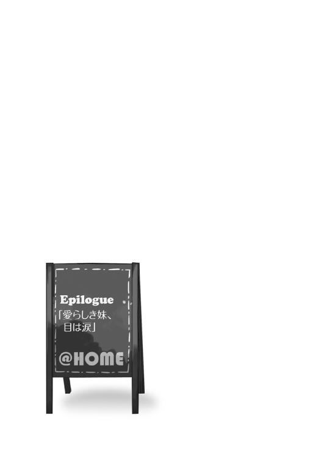

| @HOME(2) 妹といちゃいちゃしたらダメですか？ (電撃文庫) | |
| 藤原 祐 | |
| (2015) | |
本書（電子版）に掲載されているコンテンツ（ソフトウェア／プログラム／データ／情報を含む）の著作権およびその他の権利は、すべて株式会社ＫＡＤＯＫＡＷＡおよび正当な権利を有する第三者に帰属しています。
法律の定めがある場合または権利者の明示的な承諾がある場合を除き、これらのコンテンツを複製・転載、改変・編集、翻案・翻訳、放送・出版、公衆送信（送信可能化を含む）・再配信、販売・頒布、貸与等に使用することはできません。
通夜と葬式のことはあまり覚えていない。
私がとても幼くて──確か五歳だった。五歳といえば十歳の半分で、二歳に三歳を重ねただけの年齢だ──小学校にすら入る前だったせいもあるだろう。
けれど最大の原因はたぶん、私が誰からも顧みられていなかったからではないかと思う。
両親と姉の三人を一度に喪ったというのに、私は式の主役ではなかった。一切を取り仕切っていたのは親戚の誰かだったはずだけど、どうやら葬儀は死者を悼むというよりもむしろ体裁を取り繕うために行われたようで、遺された私のことを気にかけてくれる人なんてひとりとしていなかった。私に与えられた役目は遺族として式に出席することだけ。それが果たされてさえいれば私の感情などどうでもよかったみたいだ。
だから私は斎場の片隅でぽつりと、マネキンのように佇んでいただけだった。
私自身も状況がよく吞み込めず、ぼんやりしていたように思う。
他人事というほど遠くもなく、けれど自分のこととして認識するには遠すぎる。そんな感じで、目の前で繰り広げられる出来事をただ茫漠と眺めていたような記憶がある。
つまり私は、川に揉まれる朽ち木に等しい存在だった。
もしあのままの状態で式を終えていたら、流れに任せてどこかの親戚に引き取られるか児童養護施設に預けられるかして、私の人生は誰の記憶にも、私自身の記憶にすら残らない、まるで空気中の窒素みたいなものになってしまっていたのかもしれない。
でも、そうはならなかった。
結果としては、むしろ逆だ。
私という存在が──私の人生が始まったのは、まさにこの日からだった。
参列者の中に、子供の集団があった。
急拵えながらどうにか葬儀に合わせたといった感じの、『喪服』というより『地味な普段着』で固められた彼ら彼女らは後から聞けば姉が通っていた小学校の同級生たちであり、担任の先生に引率されてお焼香に並んでいる最中だったそうだ。もちろん当時の私はそんなこと知る由もなく、自分と同じくらいの年頃の子たちが大量にいるという光景に小さな不安を覚えてさえいた。それは幼稚園に通っていない私にとって未体験なものだったから。
唐突に。集団からひとりが、列を外れてとことこと、私の前にやってくる。
女の子で、年上だった。
というよりも、そうとしか思えなかった。彼女はつんとした鋭い視線でこっちを睨むように見つめてきて、物腰も居丈高だったので。
「あんた、美依那の妹？」
彼女は唐突に問うてきた。美依那、とは死んだ姉の名だ。
「ちょっと、何してるの!?」
中年の女性、恐らくは担任の先生が慌てた様子でこちらへ駆け寄ってきて小声で諫める。
だけど女の子はまるで構わずに、私の顔から目を離さない。
質問の答えを待っているのだとわかったので、こくりと頷くと、
「そう。だったらあんた、ひとりぼっちになったのね」
事実を指摘するような、短く、だからこそ不謹慎な言葉。
「リリィちゃん！」
先生が彼女の肩を摑んでさっきよりも強く叱責した。
そうして少女は、先生の手によって無理矢理に列へと引き戻される。「どうしてあなたはいつもそうなの」とか「せめてお葬式の最中くらい私の言うことを聞いてちょうだい」とか、そんな愚痴めいた文句を受けながら引っ張られていく。
けれど──。
強い語気を背後から投げかけられながら、強引に歩かされながら、それでも彼女の両目は私を捉えたままだった。無表情で佇んだ木偶の坊のような私を、黒く、つぶらな、それでいて刃物のような双眸で、じっと見ていた。
そこからの私は、リリィという子に思考のすべてを奪われていた。
思考を奪われていた、というよりも、目を奪われていた、と表現した方が正しいかもしれない。だって私の頭は相変わらずお葬式に際してぼんやりしたままで、式がどこまで進んでいるかとか自分はいつまでここに突っ立っていなければいけないのかとか、そういったことをまったく、なにひとつとして考えられなかったからだ。
ただ、視線だけは固定されていた。
先生に叱られた後、仕方なくといった調子で私から外れた、その横顔に。
列に復帰してお焼香をするその指先に。
目を閉じ、クラスメイトだった姉のため祈るその姿に──。
だから彼女が焼香を終えて席に戻ってから立ち上がり、未だ続く誦経を無視して会場の外へ出た時、私は視線だけでなく、身体で、両の足で後を追った。
咎める人はいなかった。式も中盤を過ぎ、私の存在は完全に透明になっていたらしい。
会場の外。敷き詰められた玉砂利を踏みしめ、彼女は立っていた。
ポケットから取り出した携帯電話は小さな身体に不相応な大きさで、けれど彼女はそれを持て余すどころかねじ伏せるようにして大きなボタンを操作し、頰に当てる。
「......兄さん？」
十数秒後、通話が繫がると同時、彼女は言った。
「ううん、まだ終わっていないわ」
背を向けていたからか、私のことには気付いていないようだった。
横顔に、どこか決意めいたものが窺える。数年前に覗き見した、姉が広げて眺めていた図鑑の写真を思い出した。群れにあって弟だか妹だかの隣に寝そべる子供の豹。あの、どことなく頼もしく、それでいてどことなく恐ろしい瞳の色。
生徒がひとりいなくなったのに気付いたのだろう。担任の先生が斎場から出てくる。
携帯電話に向かってなにごとかを喋っている少女へ小走りに駆け寄ってきた。
「ちょっと、今はお式の最中なのよ、リリィちゃん！」
奔放な行動にいい加減うんざりさせられていたのだろう。もはや語調は鋭く、生徒に対してというよりも仇でもなじるかのようだった。私は反射的に身を竦ませる。それはお母さんが私を怒る時の声を彷彿とさせたからだ。
けれど大人の発する射竦めるような視線と声ですらも、少女を怯ませることは叶わない。
彼女──リリィという少女は携帯電話を耳から離すと、振り返って相手を睨み付けた。
「先生、少し黙っていてください。私は大事な話をしてるの」
「な、......」
先生は絶句し、私は大いに驚いた。
何故ならそれまでの私の認識において、子供というのは大人の命令を素直に聞かなければならないものであり、命令というのは常に大人から子供に向けて発せられるべきものであったからだ。なのに、子供が大人に向かって命令し、あまつさえ大人にそれを聞かせるなどと。
私の常識が大逆転していることも、ましてや私に五メートル背後で見られていることにも気付かず、少女は再び携帯を耳に当て、会話を再開した。
「兄さんの言うことはわかるわ。父さんと母さんだってそう言うと私も思う」
たぶん相手の『兄さん』は、黙って妹である彼女の話を聞いているのだろう。
間隔短く、矢継ぎ早に言葉は放たれる。
「世界中で同じようなことはたくさんたくさん起きていて、同じような人たちは山ほどいるもの。ううん、同じようなことだけじゃない。もっとひどいこともたくさんたくさんあって、もっとひどい子たちもたくさんたくさんいるわ。そんな子たちをすべて、私の希望通りにすることなんてできない。わかってるわ。でもね、兄さん」
言葉は聞き取れるが話の内容はよくわからない。
けれど私は、圧倒されてしまった、
何故なら──、
「これは私の手が届くところで、私の目の前で起きてることなのよ。それも黙って見ていなきゃならないの？ そうしなければならないの？ だったら私は、私たちはどうしてここにいるの？ 私が、高遠が、礼莵がここで暮らしているのは、父さんたちがそうしなかったから......黙って見てなかったからじゃないの？」
彼女の言葉は、態度は、立ち居振る舞いは。
まるで大いなる敵に対峙するファンタジーゲームの勇者のように、凜としていたからだ。
しばらくの沈黙があった。
私も、先生も、たぶん電話の向こうにいる『兄さん』も、少女に圧倒されていたのだと思う。少なくとも私はそうだった。啓示にすら近かった。家族のお葬式にも感じなかった大きな力のようなもの──厳粛で神聖ななにかがそこにあるような気さえしていた。
十秒か、十分か、永遠とも思える静けさの後、
「......うん。ありがとう、兄さん」
少女の口からそんな言葉が発せられると、途端、場の空気が緩む。
その変化に気が抜けた心地がし、同時に何故か、ここにいてはいけないという気持ちになった。極度の緊張から解放されたことで逆にストレスを感じたのか、それとも、少女に見付かってしまうことが気まずかったからか。
とにかく『戻らなきゃ』と強く思い、だから我に返ったようにはっとした先生が少女に声をかけようとしていたのを横目に、踵を返して足早に斎場へと戻る。戻ってきた式場の悲壮感漂う静けさに、私は変な安心すら覚えてしまっていた。
※
それから先の数日間に起きたことは、事実だけを列挙するならばこうだ。
式が終わり、それまで私たちの住んでいたアパートが早々に引き払われた。ひとり遺された私の処遇をどうするかの話し合いが親戚の家で行われた。そして話し合いの最中、親戚でもなんでもない夫婦がひと組現れて、私を引き取りたいと申し出てきた。
親戚たちはあっさりと彼らと私の養子縁組を認めることとなる。素性の知れない赤の他人に子供をひとりぽんと渡すことに反対意見も出ないではなかったが、私の両親に小さな借金があり、夫婦が私を引き取るついでにその肩代わりを申し出たのが決定打だったそうだ──もちろん、そうした大人の交渉なんて当時の私にはよくわからなかったけれど。
ただ、私は驚くと同時に、なんとはなしに、ああそうか、と思った。
だって夫婦の傍らには、お葬式の日に出会ったあの少女が立っていたからだ。
あれはまさしく啓示だったのだ。彼女との出会いは私の運命に待ち受けていたポイントであり、私の運命は彼女によってレールを切り替えられたのだろう。
少女が近付いてくる。
私はあの日と同じ視線で見つめられていた。
刺々しさで守ってくれるような、優しい刃物のような視線で。
「芽々子」
少女は私の名前をぞんざいに、呼び捨てにする。
「いい？ あんたは今日からうちの家族になるのよ。......その意味がわかる？」
私は返答できない。
質問はあまりに抽象的すぎたし、観念的すぎた。なにより恐怖があった。それは未知なものに対する恐怖であり、自分の未来に対する恐怖であり、彼女の言う『家族』という単語に対する恐怖でもあった。イエスともノーとも言えず、小さく身体を強張らせる。
そんな私に対して少女は、倉須リリィは、断言した。
「あんたは今日から私の妹で、あんたはもう、ひとりぼっちなんかじゃないってことよ」
──妹。
──ひとりぼっちじゃない。
「あ......」
その言葉に何故か、檻の中にいる囚人と、檻を開ける看守を想像した。いつかドラマかなにかで見て覚えていたのであろうそのシーンはまさに、私の心情そのものだった。
この人は私の心に掛けられていた錠前に鍵穴を差し込んで回し、腕を摑んで格子の奥から引っ張り出してくれたのだ。......牢獄の中から、外の世界へと。
「......うん」
ようやく頷いた。イエスでもノーでもなく、すべてを受け入れる首肯で。
そして私は──倉須芽々子は、笑う。
どうして笑ったのだろう？
牢獄の外があまりに明るかったからか、日差しがあまりに暖かかったからか。
だとしたらこの明るさと暖かさは、絶対に失う訳にはいかない。これから先の人生すべてを費やしてでも、私は今の笑顔を維持していかなければならないのだと、そう感じた。
まるで呪いのように、強く強くそう感じていた。
０
六月下旬、梅雨も真っ盛り。
いい加減このじめじめとした空気が鬱陶しくなってきた時節であるのだけど、僕の通う鏡山高校ではつい先日に中間テストという一大イベントが終わったばかりで、つまり降りしきる雨も肌にへばり付く湿気も、この解放感を前にしてはやや力不足となっていた。
そんな木曜日である。
夕食の席で突然、家族全員の週末におけるスケジュール──土曜日の予定が話題となった。
発端は芽々子ちゃんだった。
「明後日の土曜日、家にいる人いる？」
その唐突な問いに、まずは長男の高遠兄さんが応える。
「俺は仕事だよ。芽々子にとってそれが『残念なことに』なのか、それとも『都合のいいことに』なのかはわからないけどね」
箸でコロッケを割りながら、諧謔じみた口調で笑う。
「ひょっとして車が必要な用事だったりするかい？ もしそうなら礼莵が......」
我が家で運転免許を持っているもうひとり、長女の礼莵姉さんはしかし首を振った。
「ごめんなさい、私もお仕事なの。学校が休みなのにどうして保健教師が出勤しなくちゃいけないのかしら？ まったく面倒だわ」
「ううん、車はいらないよ」
申し訳なさそうな顔をしたふたりに芽々子ちゃんは笑う。
「家にいる人がいるかどうか知りたいだけ」
「私はいないわ」
次女──リリィ姉さんは普段通り、つまりそっけない口調で肩を竦めた。
「友達と出かける用事があるのよ」
この傲岸不遜な姉に、休日を一緒に過ごすような友達がいたのかと少し驚く。が、
「なによ響、その顔は」
僕の表情が変化したのに気付いたリリィ姉さんが鋭い視線で睨み付けてきた。目敏い。
「実に失礼な顔をしているわ、あんた。私に友達がいるのが意外だ、っていう感じの」
「いや......友達がいることじゃなくて、友達と一緒に出掛けるってのが意外だっただけだよ」
「あらあら。それで上手く取り繕ったつもりかしら？ だったら今度紹介してあげるわ、私の親友の黒崎小夜子を。覚悟しときなさい？ 私と違って凄まじいドＳだから」
「違わねえよ！ 同類じゃねえか！」
「確か親友の弟を這いつくばらせるのが趣味だったはずよ」
「なんだよそのとってつけたようなピンポイントな趣味は！」
しかもいかにもな名前だ。実在すら疑わしくなってくる。
思わずつっこむ僕を他所に、稜くんが言う。
「ぼくも外出だなー」
戸籍上の性別は男のはずだけどいつも女の子の格好をしている三男にして四女の彼もしくは彼女は、意味ありげかつ得意げに笑った。
「デートなんだ」
──どっちの性別でどっちの性別とだよ。
すごく尋きたいけど尋いていいものかどうか迷っているうちに機会を逃しつつ、
「私もいないです。クラスメイトの家でお勉強会という名目のゲーム大会があるのです」
末子の耶衣ちゃんが小さな顎を傾けた。正直過ぎる報告だけどいいのか。
「ん、耶衣ちゃんはゲームが苦手なんじゃなかった？ 大丈夫？」
「はい、問題ありません。テレビゲームではなくてボードゲームなのです。モノポリーです」
「あらあら、懐かしいわ。子供の頃私と高遠くんもよくやったのよ」
礼莵姉さんが手を伸ばして耶衣ちゃんの頭をさわさわと優しく撫で、
「楽しかったわ、高遠くんをじわじわ破産に追い込むのは。耶衣ちゃんも全力でいきなさい」
「......厭なことを思い出させるなよ。というか耶衣をお前みたいにするつもりか？」
苦い顔をする高遠兄さんを無視して続ける。
「耶衣ちゃん、あとで戦略を教えてあげる。プレイする人数によって変わってくるからね」
別の話題に逸れてしまった礼莵姉さんたちに軽くぽかんとしつつ、芽々子ちゃんの視線は自然、最後のひとりである僕に固定された。
即ち──倉須家次男にして上から四番めのきょうだいであるこの僕、倉須響に。
「うん」
だから僕は頷く。
「土曜はずっと家にいる予定だったけど......」
とはいえ、さてどうしたものか。
最初に高遠兄さんが言った通り、芽々子ちゃんの口振りからでは誰かが家にいた方が都合がいいのかそれとも誰も家にいない方がいいのかが判断つかない。
前者だったらなにか用事があるのだろう。後者だったら──友達を家に呼びたいから家族に出払っていてもらいたい、か？ まさか友達とかじゃなくて男だったりして。いやいや、芽々子ちゃんに限ってはないだろうけど万が一そうだったらお兄ちゃんはちょっと許さねえぞと反射的に眉をぴくつかせてしまう。倉須家に来て三カ月ほど、妹バカな思考すらいつの間にやら身に付いてしまっている僕である。
「どうする？ 留守にした方がいいのかな」
とはいえさすがにつっこんで尋く訳にもいかず──それは長兄である高遠兄さんの役目だろう──平静を装って問う。
懸念は幸いなことに外れた。
「え、用事がないんだったら、わざわざ出掛けちゃイヤだよ」
「そっか、なら......」
個人的な頼み事でもあるのだろうか。
僕の予想はしかし、更に裏切られる。
「あのね、明後日、お友達をうちに呼ぼうと思ってるの。だから、誰か家族がいてくれた方がいいなあって。ひぃお兄ちゃん、用事がないんだったらお願いできるかな？」
「......って、え？ 友達が来る？ って」
「うん。こっちゃんと、みょーりんと、ゆなっち。この前会ったよね？」
その珍妙なニックネーム。
確か五月の下旬、リリィ姉さんとデパートへ行った時に遭遇したあの三人組だ。
「いや、でも......」
友達を呼ぶんだったら、むしろ家族はいない方がいいのでは──。そんな僕の疑問などどこ吹く風とばかりに、芽々子ちゃんはとびきりの笑顔で斜め上なことを言った。
「せっかくお友達が来てくれるんだったら、誰か家族がいた方がいいじゃない？ だってお友達に紹介したいし、一緒に遊べるんだったらその方がいいもん」
「......え？」
「だから、ひぃお兄ちゃんだけでもいてくれてよかった！」
──いや、その理屈はおかしい。
つっこもうとして不意に気付く。
僕にとってとても奇妙かつ不合理であっても、当の彼女にとっては別に奇妙でも不合理でもなく、ごく当たり前の理屈であるということに。事実、僕を除いた他の家族たちは芽々子ちゃんに口を挟む素振りすら見せない。むしろ『あーやっぱりか』みたいな顔をしている。
忘れていた。
倉須芽々子は、そういう娘なのだった。
どこであろうといついかなる時であろうと、家族に対しての愛情を表現することに微塵も躊躇しない。よって家族を交えて友人と遊ぶ、なんて行為にまったく疑問を持たず──それどころか進んでそうしたがる、家族依存症。
「いや、その......」
しまったと思うが、もう遅かった。
芽々子ちゃんは「じゃあ土曜日よろしくねっ」とひと声あげると、再び食事に没頭し始める。しかもとびきり嬉しそうな顔のまま、楽しみだ、とばかりに。
もはや断ることなどできそうになかった。
「仕方ないわね、諦めなさい」
隣に座ったリリィ姉さんがコップの水を飲みつつ、僕へ無慈悲に告げる。
「まあいいんじゃない？ 女の園に男ひとりよ。居心地の悪さに目を瞑りさえすれば、なかなか居心地のいいものだと思うわ」
「禅問答みたいなこと言わないでくれ......」
こうして僕はあれよという間に、居心地の悪い週末を過ごす羽目に陥ってしまったのだった。
リリィ姉さんの助言に従い目を瞑ってやり過ごすことも考えたのだが、目を瞑ってしまったら芽々子ちゃんの嬉しそうな顔を見ることができなくなる。それではあまり意味がなかった。
仕方ない。腹を括って、妹の友人たち三人を歓待することに決めようか。
１
さて、その当日。
彼女たちが来訪したのは土曜日の午前十一時過ぎ。せっかくの休みだからもう少し眠っていたいけれどそろそろ起きなければさすがにまずいという絶妙な時間だった。
まあ、寝起きで対応するという訳にもいかないから目覚ましは十時に鳴らしたのだけど。
運よく雨が降っておらず、薄曇り。最寄りのバス停まで出迎えに行った芽々子ちゃんは傘を使うことなく戻ってきた。お邪魔します、と口々に言いつつ玄関からあがってきた三人を、僕は居間で出迎える。......正直、緊張していた。
「いらっしゃい」
ソファから立ち上がり笑顔を作る。
期待するような様子を窺うような、女の子三人の視線が無闇に恐い。
──とりあえず紹介してくれ。
芽々子ちゃんに無言で合図を送るとどうやら察してくれたようで、
「この前会ったと思うけど、ひぃお兄ちゃん。我が家の次男だよっ」
「こんにちは。えっと......」
今度は女の子たちが察してくれた。
まずは一番右に立った娘。ショートカットで小柄、快活そうな面立ちをしている。
「どうも、小林香といいまーす」
「こばやしで『コウ』だから、こっちゃん！」
頭を下げた彼女に続いて、芽々子ちゃんが解説を入れる。
続いて真ん中。
「曽我優菜です」
髪をアップにまとめた綺麗な娘で、グループの中では一番背が高い。優等生っぽいというかしっかりしてそうだ。まとめ役なんじゃないかという感じがする。彼女だけが両手に買い物袋を持っていることから察するに、たぶん当たっているだろう。
「ゆなっちだよっ」
ニックネームは普通だった。
「で、最後は、みょーりん」
「......白井沢くるみ」
ぽつり、と。
その娘は自分のフルネームを口にした。
佇まいからして物静かな感じ。それほど長くない髪を両側でお下げに結んでいる。ノンフレームの眼鏡が妙にクールな印象だった。最初に会った時はかけていなかった気がする。伊達か、それとも前がコンタクトだったのか。
でもって、この前も気になった『みょーりん』という調味料みたいなニックネーム......まるで似合っていない。
なんでまた『みょーりん』なんだよ。疑問に思うが、いきなり問うのも失礼だ。
「よろしく。倉須響です」
自己紹介をする。
「まあその、ゆっくりしていって。邪魔だったら僕は部屋に引っ込んでるから」
遠慮がちに言う。でも、女の子だけなんだからまずは芽々子ちゃんの部屋に行くのかも。
だったら僕がわざわざ自室に引っ込まなくてもいいのだろうか......などと考えていると、いきなり『こっちゃん』──小林さんがにやりと笑んで、こちらの顔を下から覗き込んできた。
「あれ、部屋でなにするんですかぁ？」
次いで『ゆなっち』、つまり曽我さんが同調するように含み笑いで、
「ひょっとしてお兄さん、うら若い女子高生よりあっちの方が大事だったりします？」
「は？ 大事？ あっちって？」
なにそれ。
きょとんとした僕に、白井沢さんこと『みょーりん』がひと言、あくまでクールに言った。
「......ウサギ」
「あ」
その単語を聞いた瞬間、とんでもないことを忘れていたのだと気付く。
一カ月前のデパート。
あの時、この三人に僕は見られていたのだ。
どでかいウサギのぬいぐるみを抱きかかえ、あまつさえ芽々子ちゃんに『ぬいぐるみ収集が趣味なんだ』と宣言するところを──。
「いや、その......別にそういう訳じゃ！」
慌てふためいた僕を、三人は追撃する。
小林さんがくすくすと、
「いいじゃないですか。今日はウサギじゃなくて生身の女の子と一緒に過ごしましょうよー」
曽我さんがにこやかに、
「お昼ご飯は私たちが作りますからね」
そして白井沢さんはぼそっと。
「税込み一万五百円」
「なんで値段まで覚えてるんだきみは！」
──まずい。
所詮は娘っ子と侮っていたがさすが芽々子ちゃんの友達、翻弄されてしまっている。
一歩たじろぎつつ心の中で身構え、彼女らの追撃を待った。
さあ次はなにを言われるか──だけど彼女たちはそれぞれが思い思いに笑顔を浮かべると、僕にとっては唐突に、視線を芽々子ちゃんへと移した。
「めーちゃん、これどこ置く？」
曽我さんが両手の買い物袋を掲げる。
「あ、冷蔵庫に入れなきゃな奴もあるよね？」
と、追従するように小林さん。
「むしろ大半が要冷蔵じゃない？」
更に白井沢さんも。
芽々子ちゃんは即座に対応する。
「じゃあ、台所でちょっとわけよっかっ！」
「え......あれ？」
なんなんだ。まるで脈絡なく話題が切り替わったぞ？
どうも取り残されているのは僕だけらしい。彼女たちはもはやこっちを見もせず、連れだってキッチンの方へと歩いていく。
「お肉と、卵と......たまねぎは入れる？」
「いや、たまねぎは冷蔵しなくていいから」
「じゃあたまねぎはこっち。ねぎねぎー」
「ねぎは買ってないっての」
「ないねー。ねぎ」
「あのスーパーどう？」
「ん、れぇお姉ちゃんと一緒によく行くよっ」
「いやそういうんじゃなくて。安い？」
「わかんない」
「めーちゃんは生活能力ゼロっぽいよね」
「っぽいというかゼロよこの娘」
「なにそれ！ あ、いちご出てきたよ！」
「季節外れのいちご！」
「高かったいちご！」
「いぃー、ちぃー、ごぉー」
ついに歌い始めた。
取り留めがなさすぎる。これはあれか、女子特有のノリというやつか？
呆気に取られている僕のことを覚えていてくれたのは、妹である芽々子ちゃんだけだった。
歌の途中で台所から振り返って、
「ひぃお兄ちゃん、ご飯作ったらまた呼ぶからねっ！ お昼からは一緒に遊ぼう？」
「......ああ、うん」
今のところ僕は用無しらしい。まあ、一緒にご飯を作れと言われても困るのは確かだし、だったら一度部屋に戻ろう。というか、ここでぼうっとしているのも気まずすぎる。
僕はかしましい四人組を横目に、居間を出て階段を上った。自室へと辿り着いて、ベッドに腰掛けて大きな溜息を吐く。
やれやれだ。僅か数分でこの有様、さてどうなることか。
寝転がり、手持ち無沙汰から携帯を取りだした。いじり始めた途端、ドアがノックされる。
誰だろう。
今、この家には僕とあの四人以外はいないはず。だったら──、
「はい」
返事をすると、ゆっくりと扉が開いた。
その人影は入り口で立ち止まったまま、少し照れくさそうに言う。
「えへへ......どうも」
僕はきょとんとした。
てっきり芽々子ちゃんが用事を思い出しでもして追いかけてきたのかと思っていたら、
「えっと、小林さんだっけ」
小林香。通称、こっちゃん。
名を呼ぶと、彼女は小さな身体をひょこりと廊下へ引っ込ませ、まるで小動物みたいにドアの隙間から僕の部屋を覗き込む。
「わ、おっきいですねー。ショップで見るのと部屋で見るのとはまた印象違うや」
視線は壁際、床に転がったウサギのぬいぐるみへと注がれている。
「名前とかあるんですかあ？」
「いや、ないけど......」
「えー、それは可哀想ですよ。ちゃんと名前つけてあげなきゃ。なんなら私が付けましょうか？ そうだな......ウサギ。ラビット。『ビ』は濁点が可愛くないから、抜いてラットくん」
「いや、それもうウサギじゃなくてネズミだから。しかも実験用だから」
というか『くん』て。こいつの性別オスじゃないだろう。スカート穿いてるし、メスだ。
「ねえ、お兄さんはこの家に来て日が浅いんですよね？」
僕のつっこみを無視して、小林さんは唐突に問うてきた。
「ああ、うん。三月の終わりからだけど」
「私、実はここに来るの初めてじゃないんですよ。二回め。めーちゃんとは中学の時からの友達なんです。知ってました？」
「いや、知らなかった。じゃあ僕よりも付き合いが長い訳だ、芽々子ちゃんとは」
「そうなりますねえ」
得意げに頷き、続ける。
「前の時は確か、金髪のお兄さんが出迎えてくれましたねぇ。今日は会長に会えるかもって思って来たのに、お出かけしてるって残念」
金髪のお兄さんってのは高遠兄さんで、
「会長......は、生徒会長ね。リリィ姉さんのことか」
そういえばデパートで出くわした際、彼女たちは我らが姉を憧れじみた目で見ていた。
「それなのに、家にいるのは新参の次男坊だった、って？ 悪いことをしたかな」
「ううん、会えてよかったですよ？」
何故かそこで含みのある口調になった。
「いい人みたいで安心しました。ぶっちゃけ、もっとカッコよかったら言うことなしだったんですけど......でも、あんまりカッコよすぎても心配になっちゃうし」
「えっと......褒められてるのか貶されてるのかよくわからないんだけど......」
僕を値踏みするためだけにここまで来たのだろうか、この娘は。
「とにかく、めーちゃんを泣かせちゃダメですからね」
小林さんは呆れかけている僕に意味ありげな視線を送り、それから人差し指を立ててちょこちょこと揺らす。まるで犯人に忠告する探偵のように。
「めーちゃん、新しいきょうだいができたってすっごい喜んで、学校でもよくその話をしてるんです。だから、期待に応えてあげてください。頼りになるお兄ちゃんとして」
──なるほど。
中学からの友人と言っていた。
つまり気を揉んでいるというか、まあ、要するに心配なのだ。新参者の僕と、そんな僕へ警戒心なく懐いてしまった芽々子ちゃんが。きょうだいといったって血の繫がらない他人──外から見れば不安になるのも不思議ではない。
だから僕は笑って、肩を竦めてみせる。
「努力するよ。でも、僕が多少不甲斐なくても問題ないんじゃないかな？ 芽々子ちゃんは頼りになるいい友達に恵まれてるみたいだし」
えへへ、と。
小林さんは可愛らしい仕草で照れた。なんだ、素直な娘じゃないか。
「じゃあ、またあとで。こっそり抜け出して上がってきたんです......お兄さんの後をつけた、とも言いますけど」
道理で僕の部屋を特定できた訳だ。
手を振る姿とともに、ドアが閉まる。
それを見送ってから僕は苦笑し、ひとしきり苦笑した後──不意に、ひょっとしたら今日は他のふたりにもこんなふうに値踏みされるんじゃないかという不安に襲われるのだった。
いやいや、まさか。
２
女四人のかしましさというのは、恐らく手際のよさと反比例するものなのだろう。それからご飯の準備ができたと連絡があるまではたっぷり四十分ほどの間があった。
とはいえ時間をかけただけあってか、食卓に並んでいるメニューはそれなりにいい感じだ。
メインディッシュは、デミグラスソースっぽいものがかかったハンバーグ。芽々子ちゃんの好物だから作ったのだろうか。多少形が歪ではあるが、焦げてはいないようだ。付け合わせとして炒めたたまねぎとインゲンが添えてある。
あとはテーブル中央に大皿でシーザーサラダ、それから個別に筑前煮......なんか筑前煮だけが浮いてるっぽい気がするんだけど。
「すごいね、これ全部手作り？」
芽々子ちゃんが得意げに答えた。
「ハンバーグはゆなっちだよっ。サラダはこっちゃん、お手製ドレッシング付き！ そして、筑前煮はみょーりん！」
......渋いなみょーりん。キャラが摑めねえ。
「とすると、家主であるうちの妹はなにをしたのかな？」
問うと、片手をはいっ、と挙げて元気に、
「ハンバーグを捏ねました！」
すかさずゆなっちこと曽我さんが、
「その後で私が整形し直しました」
「それから？」
「......っ、野菜を切りました！」
「レタスは千切ればいいって言ったのに包丁入れちゃったんだよねー」
小林さんもつっこみ、
「あとは？」
ついに芽々子ちゃん、しょぼくれて肩を落とす。
「筑前煮は......触らせて、もらえませんでした......っ！」
「芽々子に煮物は二十年早いもの」
みょーりんが一番辛辣だった。
「二十年て！ 私、アラサーになってようやく煮物作れるようになるの!?」
「四捨五入だとアラフォーよ。サバ読んだの？ それとも計算できなかった？」
「どっちもだよ......希望的観測ののちあえて計算しなかったんだよ......」
「可愛子ぶってももうアラフォーなのに」
「違うもん、まだ十五歳だもん......もう十六歳になったみょーりんより若いもん......」
「はいはい」
みょーりんやべえ。あしらいとからかいのミックスが見事だ。
ふるふると悔しそうな芽々子ちゃんの肩を叩き、僕は兄貴らしくフォローをしてやる。
「大丈夫だよ。今は駄目でもそのうち上手くなるさ。いつか。きっと。そうだといいね」
「う......後半、ただの願望じゃないそれっ！ しかも割と他人事！」
「なあに、いざとなればカップラーメンだってこの世にはある」
「私が料理上手くなるって未来予想図がひぃお兄ちゃんの中に存在しないっぽい！」
そんな感じで会話しつつ席に着き、みんな揃っていただきます、と食事を開始する。
ハンバーグとサラダと筑前煮をなんとなく味見のつもりで順番にひと口ずつ食べたところで、僕は自分に注がれている視線に気付いた。
四人が四人とも、無言でこっちを見ている。
「あ......っと」
顔を上げると、一斉に集中射撃。
「どう？ ひぃお兄ちゃん」
「どうです？」
「どうですか？」
「......美味しい？」
──いや、その。
感想を求められているのはわかる。
誰だって自分の作った料理の出来不出来は気になるものだ。調理に携わっていない僕が判断役として適任──というよりも僕以外に審判できる人間がいないのもわかる。
でも、このシチュエーション。
『美味しいです』と返答する以外の選択肢が存在しないんじゃないか。
もちろんまずい訳じゃない。
ただ、率直に言うと「普通よりやや下」だ。ハンバーグのデミグラスソースは明らかに塩気が濃くて、サラダは水気があまり切れておらずドレッシングも油っぽすぎで──筑前煮だけはちょっと驚くほど美味しかった。これには負けた。やるなみょーりん。
とはいえ『筑前煮以外は偏差値四十八くらいです』などと言えるはずもなく、
「うん、美味しいよ」
僕は人生でも一、二を争うほど朗らかな笑顔で答えた。いや、噓じゃないし。実際には不味くない。どちらかといえば美味しい。うん、とても美味しい。ような気がしてきた。
「おおー」
「美味しいってさ！」
「よっしゃ！」
「具体的にはどんな感じに？」
みょーりんの容赦のない追及に、
「どんな感じって、いや......その。僕好みの味付けというか......悪いね、語彙が貧困で。美味しいよ、本当に」
しどろもどろな返答をしつつ、僕はハンバーグを大きく箸で切って口へと運ぶ。おいこれさっきは気付かなかったけど中心部が生焼けだぞ。偏差値四十五に落ちた。いや、お腹を壊すほどではないはずだけど......。
当の四人組はこぞって、美味しいね、美味しいね、と満足げに食べている。自分たちで調理した故のバイアスがかかっているようだ。
とっ散らかったキッチンに目を遣る。
まな板とか包丁、ボウルの横にこっそりと料理の教則本が置かれていた──なるほど。
きっと彼女たち全員、普段はそれほど料理をしないのだろう。感想を必死で求めてきたのもそのせいか。誰だって慣れないことほど、他者からの評価が気になるものだ。
とはいえ僕はそもそも、手伝いもせずただ受け身で作ってもらっただけの身である。感謝こそすれ、あれこれ評論したり文句を言ったりする気にはまったくなれない。
和気藹々とした四人の女の子たちに心の中で頭を下げつつ、僕は目の前に置かれた料理と、それからデザートとして出てきたいちご練乳を最終的には完食したのだった。
昼ご飯を作ってくれたお返しという訳ではないのだけど、後片付けは僕がやることにした。
皿洗いは得意──というか前の家にいた頃からよくやっている。もっとも、男が簡単にできる家事手伝いといえば皿洗いと相場が決まっているだけではあった。
芽々子ちゃんたちは居間でテレビゲームなどをしていた。わいわいきゃっきゃと実に楽しそうだが、ゲーム自体を楽しむというよりゲームをだしにして会話を楽しんでいる印象で、そういうところはやっぱり男と違うんだなと思う。
「手伝いましょうか？」
と、居間からふらりとやってきた曽我優菜さん──ゆなっちが、僕へと声をかけてきた。
「いや、大丈夫。遊んでなよ」
断るも彼女は引き返す素振りを見せず、
「先輩......って呼ぶのが適当なんですかね。まあいいや。そう呼びますね」
くるりと反転してキッチン台を背に、僕の隣へ立った。こっちを向いた視線の高さがあまり変わらない。リリィ姉さんほどではないがけっこうな長身だ。百六十を超えているだろう。
僕は思わず息を吞んだ。
昼前の小林さんと同じような状況ではあった。が、曽我さんの表情は彼女とまったく違っていたからだ。むしろ逆。つまりは興味とか関心ではなく、悪印象を込めたもの。
敵意というほどではないにせよ、少なくともあまり好意的ではない──さっきまでみんなと一緒にいた時にはにこやかな顔をしていたのに。
「私、めーちゃん......芽々子とは中学からの付き合いです」
「じゃあ小林さんと一緒なの？」
努めて平静に問うと、
「いいえ、あの娘は二年生から。私より一年遅いわ」
「そ、そうなんだ......」
僕をじろりと睨んで、曽我さんは小さく鼻を鳴らした。
そして、
「あなた、悪い人じゃないとは思います。むしろ気遣いができる方だわ。塩分増量のデミハンバーグを顔色ひとつ変えずに食べたんだから」
「......はぁ!?」
いきなり──とんでもない発言をする。
「故意かよ！ 妙に塩っ辛いと思ったら......」
「あなたのお皿にかけたソースだけですけどね。後で混ぜました。レシピの三倍ほど」
三倍もかよ。
偏差値四十八と評した自分の味覚を後悔するレベルだった。僕の舌はなんて寛容なんだ。
曽我さんは僕の驚愕に対し、いけしゃあしゃあと嘲笑を浮かべた。
「でも、ああいう気遣いができるってことは、平気で噓を吐けるってことでもあります。誠実な男の人とはとても言い難い。気に入らないわ」
「おい、ちょっと待ってくれ」
さすがに皿を洗う手が止まる。
「そりゃ決めつけってもんだろ。それに横暴すぎるよ。だったらどうすれば気に入ったんだ？ 正直に塩っ辛いって言えと？ あの場で？」
「そんなデリカシーのない男も失格です」
「ほら、どっちにしろ駄目じゃないか。きみはいったいなんなんだ......」
「私は、芽々子の親友よ」
まるで僕を遮るようにして、彼女はきっぱりと口にした。
「はっきり言わせてもらいますけど、私、あなたにいい印象持ってません」
「そりゃさっきまでの会話でわかるけどさ......」
小林さんと態度は違えど、根っこの動機は同じなのだろうとは思う。
親友にいきなり義理の兄ができて、でも本質的には血の繫がっていない他人で、だから小姑じみた不安を抱えて──悪い男だったらどうしよう、と。
小林さんの場合は「確かめてみたけど悪い男じゃないっぽいからよかった」だった訳だが、こちらは「悪い男だきっとそうに違いない」と決めてかかっている。
正直、挽回しようがない。
「僕としては、信用してくれって言うしかないと思うけど」
「その通りですね。困ったものです」
相手に譲る気配はないし、こっちはそもそも譲りどころがない。
とはいえこのまま睨み合っていたんじゃ不毛すぎる。どうしたものか──。
考えている僕へ、曽我さんはこれ見よがしに溜息をひとつ吐き、
「残念だけど私としても、あなたに釘を刺しておくくらいしかできません」
それから諦めたように言った。
「だからくれぐれも忠告しておきます。......たとえあの娘が変な気を起こしても、手を出したりしないでくださいね？ 一時の気の迷いに違いないんだから」
「おい、ちょっと待ちなよ。なんだそりゃ」
僕は思わず声を荒げる。
さすがに怒りが湧いた。
「僕のことはともかくとして......芽々子ちゃんに対してその言い種はないんじゃないか？」
たとえあの娘が変な気を起こしても、って。
「親友っていうなら芽々子ちゃんのことを信用してやれよ。兄貴に変な気を起こす妹がどこにいるってんだ」
確かに家族依存症の気はある。
抱きつかれるのもしょっちゅうで、過剰にべたべたしてくるというのは否めない。
でも芽々子ちゃんのあれは、異性としてとか、そういうのではまったくないはずだ。僕や高遠兄さんに対してだけじゃなく、礼莵姉さんにも、リリィ姉さんにも、稜くんや耶衣ちゃんにも同じ。つまり芽々子ちゃんの強い想いは、家族として、家族全員に対してのものなのに。
それを、侮辱された思いがした。
「違うわ」
──けれど。
僕の怒りは曽我さんに届かなかった。
いや、むしろ逆かもしれない。曽我さんの懸念を、僕は理解できていなかったらしい。
唇を咬み声を押し殺しつつ、
「あなたは知らないのよ」
顔を伏せる彼女。
眉をひそめ、キッチンを離れ、僕に背を向けて、曽我優菜──芽々子ちゃんの中学時代からの親友は、ぽつりと、それでいてはっきりと言った。
「あの娘、中学の頃は家族の話とかほとんどしなかったのに......あなたが来てから急に、嬉しそうにお兄ちゃんがお兄ちゃんが、って。少し変よ。だから、心配なの」
「え......？」
今まであまり家族の話をしなかった──？
それは僕にとって、意外すぎること。
あれほどまで、きょうだいたちにべったりの芽々子ちゃんが？
友達を呼ぶから誰か家にいて、などと珍妙なことを言うほどの彼女が？
中学時代は家族の話を殆どしていなかった、って？
「おい、それってどういう......」
僕の疑問に曽我さんは答えてくれない。
さっさと居間へ戻って再びゲームに加わった彼女は、もはやこっちを一瞥だにしなかった。
３
その後。
夕方まで、彼女たちはゲームをしたり雑誌を読んだり僕の部屋にあったウサギのぬいぐるみを居間に持ち込んで遊んだりと、とりとめなく我が家で遊んでいた。
芽々子ちゃんによる「ひぃお兄ちゃんも一緒に遊ぼうよ」という要望で僕も彼女たちに付き合う羽目になり、表向きにはまあそれなりに楽しい時間を過ごした。
小林さんはどうも奔放な性格らしく、ゲームに負けて機嫌を損ねたりぬいぐるみを殴って遊んだりと、割とやりたい放題だった。とはいえ僕のことを邪魔に思っていないのもなんとなくわかったので、裏表のない娘なのだろう。
対して曽我さんの態度は見事なまでに面従腹背と呼ぶに相応しいものだった。表向きには一貫して友好的だが、芽々子ちゃんが僕に飛びついてきたりじゃれてきたりする度に刺々しい気配が笑顔とともに飛んでくる。芽々子ちゃんを僕からやんわりと引き離したりもしていた。
最後のひとり、白井沢さんに関してはよくわからないまま終わった。ニヒルというかクールというか、あまり表情が態度に出ないタイプのようで、時折鋭い観点でぼそりと語られるつっこみからは、なにを考えているのかまで察することはできないまま。
彼女たちに芽々子ちゃんを加えた四人のノリはやはり独特で、有り体に言えばとても女の子っぽく、男の僕は合わせるのが非常に大変だったのだけど──正直、途中からはよく覚えていない。というより、微妙に上の空になってしまっていた。
曽我さんの言葉が気になっていたのだ。
中学の頃芽々子ちゃんは家族の話をあまりしなかった、というあれが。
あれから考えてみたものの、僕としては、曽我さんが懸念しているような『芽々子ちゃんが新しく兄になった僕を異性として意識し浮かれている』という説をまったく支持しない。見当違いだとすら思っている。
そもそも倉須家は、血の繫がっていない連中ばかりが七人も集っているという奇妙で異様な集まりなのだ。中にいる者にしかわからないと思うけれど、この独特な連帯感は異性がどうとか色恋がどうとか、そんな概念をまったく超越している。まあ、敢えて言うなら高遠兄さんと礼莵姉さんは長年連れ添った夫婦みたいな雰囲気を出しているけれど、これはまあ夫婦というよりも両親という感じであって──閑話休題。
だから僕が気にしているのは、曽我さんと違う視点での疑問だ。
芽々子ちゃんは中学時代、ひょっとしたら、家族依存症ではなかったのではないか。
まったく家族と打ち解けていなかったとまでは言わないが、今ほどにべったりではなかったのかもしれない。或いは、そうなる切っ掛けが僕の来る直前にでもあったのかもしれない。もしくは、なんらかの理由で家族に対する感情を表に出していなかったか。とにかく──芽々子ちゃんが過去、僕の知らない面を友人たちに見せていたということだけは確かだろう。
そんな思考が頭の隅をぐるぐると回っていたせいで、時間が経つのが早かった。
ノリの違いによる疲れも意識しないまま気付けば夕方になっていて、三人組は「じゃあそろそろ」と荷物をまとめ始める。
芽々子ちゃんは行きと同じようにバス停まで三人を送っていくと言い、僕はそこまで付き合うのもどうかと思ったので、玄関先で別れることにした。
門扉の前に立った僕に、
「今日はありがとうございましたー」
小林さんが無邪気に笑い、
「お邪魔しました」
曽我さんはあくまで穏やかに。
「それでは」
白井沢さんは無愛想に頭を下げる。
そうして芽々子ちゃんは三人を連れ、バス停へ向かって歩きだし、僕はせめてそこの角を曲がるくらいまでは見送ろうかと、手を中途半端に振りつつ突っ立って──そこで、角へ消えようとしていた四人の中から、何故かひとりが離脱した。
道を引き返して戻ってくるのは、眼鏡をかけたクールな顔。短めのお下げ髪を微かに揺らしながら、迷いのない足取りで倉須家の玄関先に辿り着き、歩みを止める。
「えっと......忘れ物かな？」
「みんなにはそう言ってきた」
白井沢くるみはそのまま真正面から十秒ほど無言でこっちを、つまりきょとんとする僕を見詰めた。見詰めて、
「......びきちゃん」
ぽつり、と。
なにごとかを呟く。
「ん？」
僕は聞き取れなかったが、彼女はもう繰り返さず、今度は語調をはっきりとさせる。
「私は小学校に入る少し前、こっちに越してきたの」
ただし、内容はやはり唐突な。
「五歳の時」
「はあ」
「つまりあなたが六歳の時ね」
「いやまあ、僕ときみはひとつ違いだし、そうなるけど......」
「で、芽々子と会ったのは小学校三年生の時」
それはつまり、
「あの娘のことはよく知ってるわ。......香や優菜よりも」
「そして、僕よりも、って？」
正直なところ、ああこいつもか、と思った。
どうにも芽々子ちゃんの友達は小姑気取りが多いらしい。こぞって新参の兄貴である僕を値踏みするつもりのようだ。
ひとりにはまあまあ受け入れられ、ひとりには嫌悪され、さあ最後のひとりにはどうだ──元々そんなに友好的でもない娘だったし、嫌悪どころか憎悪されるんじゃないか。
身構えた僕はしかし、肩すかしを喰らった。
「そうね。でも、言いたいのはそんなことじゃないの」
彼女は、変なことを口にしたのだ。
「あなたが来て、芽々子は元に戻ったわ」
「......え？」
「中学の時よりももっと前、小学生の頃みたいに。見ようによっては退行したって言えるかもしれないけど、でもやっぱり、これはいいことだと私は思う」
戻った？ ......小学校の頃？
「あなたに会って理由がわかった」
「ちょっと待ってくれ、それってどういう」
問い詰めようとするが、
「園村響くんがぬいぐるみを好きになったのはいつから？ 小学校？ 中学校？ 高校？ それとも......本当は好きになってなんかいない。咄嗟に噓をついただけ。芽々子に内緒で誕生日プレゼントでも買いに来てたから。どう、当たってる？」
「な......んでそこまで」
心を読んだのかと言いたくなるほどの的中具合だった。
いや、確かに芽々子ちゃんの誕生日さえ知っていれば推理できそうではあるけれど、それでも抜群に鋭いことには変わりない。
「携帯」
「え」
茫然としていると、再度の話題転換。
「持ってる？ 出して。赤外線」
「ああ......うん」
情けないことに僕は、ひとつ年下の少女に完全に翻弄されてしまっていた。
言われるままにポケットから取り出し、赤外線通信を起動させる。間もなく彼女のアドレスが僕の携帯へと転送されてきた。
「あなたのも」
頷き、送信。
自分の携帯の画面を見て、彼女は僕のアドレスを確認する。
そうして、
「私の忘れ物は、これ」
──笑った。
たぶん、今日初めて。
少なくとも僕に向けられた表情としては、初めてだった。
はにかむような、少し照れたようなそれは、無表情の時のイメージのギャップと相まって、僕を不意打ちでどぎまぎとさせる。
「え......っと、その」
「またね」
思考が追い付かない僕を置き去りに、白井沢くるみは踵を返した。
軽やかに、もはや僕を一瞥すら振り返らず、恐らくは先に行ったであろう芽々子ちゃんたちに追い付くため、やや早足で。
「なんだよ......そりゃ」
徹頭徹尾、謎めいた態度。
『芽々子は元に戻った』という言葉。
そして、妙な鋭さと心に残る笑顔。
煙に巻かれた気分で頭がこんがらがっている。よくわからないままに考える。
とりあえず芽々子ちゃんのことだけを整理すると、つまり──こうか。
小学生時代の芽々子ちゃんは今と同じような娘で、この頃からの友人である白井沢くるみは、今の彼女を『元に戻った』と評している。
中学生時代の彼女は今ほど家族にべったりではなく、だからその頃からの友達である曽我優菜は、今の彼女を『変わった』と思っている。
小学校から中学校にあがる段階のどこかで、芽々子ちゃんは一度家族のことを口にしなくなり、そうしてまた最近戻った、と──？
「なんだ、そりゃ」
それってひょっとして、ただの反抗期なんじゃなかろうか。中学生に入るくらいに始まって最近終わった、ただそれだけのことでは。
けれどもし、もっと別の理由があるとするなら──。
思考していた僕の横に、
「あんた、こんなところでなにしてるの？」
いつの間にかリリィ姉さんが立っていた。
「あ......うん」
考え込んでいたせいで、びっくりするよりも反応できなかった。どうもぼんやりとしているように見えたようで、姉さんは眉をひそめる。
「うん、じゃないわよ。まさか前衛的なオブジェとして倉須家の玄関に居座ろうとでもいうのかしら？ そんなの認めないわよ。撤去」
「あ、いや」
駄目だ。対リリィ姉さん用の会話モードに上手く頭を切り替えることができない。
僕は頷いた。
「まあ、別に」
「なにが『別に』よ。とにかく家に入るわよ。......入れない理由でもあるの？ 勝手に侵入してきた座敷童が居間の隅に体育座りしていて気味が悪いとか。だったら私が隣の家にしなさいって苦情を言ってあげるわ。与えられた幸せなんて我が家には願い下げなのよ」
「い、いや、侵入してない。誰もいない。芽々子ちゃんの友達もさっき帰ったよ。芽々子ちゃんは彼女たちをバス停まで送ってる最中」
それでもどうにかギアを上げつつ、平静を装って玄関を開ける。姉さんは肩をすくめ、僕よりも先に家の中へと入っていった。
※
後から考えてみれば──。
あの時、リリィ姉さんが帰ってきたのは僕にとってある種の失敗だったのだと思う。
何故なら僕は白井沢くるみが立て続けに放ったわけのわからない言葉に対して、思考を整理していた最中だったからだ。リリィ姉さんとの会話モードにギアを切り替えてしまったせいでその整理は中途半端なものになり、結果、芽々子ちゃんに関する情報だけに気を取られてしまい、彼女の会話の端々にあったもうひとつの不自然さに対して違和感を持てないまま終わってしまったのだから。
つまり最大の違和感を、この時の僕は忘却してしまっている。
彼女が一度だけ呼んだ、僕の名前。
園村響──ここへ来てからは一度も名乗っていない僕の旧姓を、彼女は口にしたのだった。
１
人間関係を繫ぐ糸は、個人が相手に対して抱く感情によって結われている。
だが感情とは時間とともに必ず移ろいゆくもので、永久不変ではない。どんなに好きな人であっても一緒にいすぎれば苛立つこともある。どんなに嫌いな人であってもずっと会わずにいれば恋しくもなる。同じ感情を抱いたままでいるのはとても難しい。同じ相手を長い時間好きでいることも、憎むことも。この困難さはたぶん『不可能』と形容していいものだ。
故に、人間関係もまた、永遠ではあり得ない。どんなに強固に見えても壊れる時はあっさり壊れるし、どんなに脆弱に見えても続く時は長く続く。いったん壊れたものが時を経て修復されたりもすれば、長く続いたのに修復不可能なまでに傷付いたりもする。
白井沢くるみは基本的にそんなふうに考えていて、だから「いつまでも続く愛情」とか「終わらない友情」とかいったような耳触りのいい言葉をあまり信じていない。
人生観は態度にも表れる。時々友人からは「情が薄い」と冗談っぽく評されることがあるが、当を得たものだと思う。元来があまり表情の動かない質であるのに、その上性格まで冷めているのだ。自分でもちょっといやになってしまう時がある──もちろん、この自己嫌悪もまた感情であり、永遠のものではない。気分によっては自分が好きでいることもある。
そしてここ数日は、そんな時期だった。
「みょーりんさ、なんか上機嫌だよねー」
放課後、学校帰り。
楽しい土日を経て訪れた憂鬱な月曜日の授業がどうにか平穏無事に終わり、友人たち三人と一緒に息抜きをしようとやってきた近くの喫茶店である。
指摘したのは友人のひとり、倉須芽々子だった。
正面に座った彼女へと視線を遣ると、くるみの隣で小林香がきょとんとする。
「そう？ いつもと変わんないように見えるけど。ゆなっちはどう思う？」
話を振られた曽我優菜は、横にいる話題の発端、芽々子を見る。
「私も同じ意見かな。めーちゃんはなんでそう思ったの？」
くるみ、香、優菜。その場にいる全員を不思議そうに見渡すと、彼女は言った。
「え、嬉しそうだったからだよ？」
「あはは、答えになってねえー」
けらけらと笑いながらオレンジジュースのストローを咥える香。
「この子は......」
優菜は呆れ気味にフォークでチーズケーキをつつき、
「で、みょーりん、めーちゃんの推測は正しいの？」
問うてきた。
だからくるみはクリームソーダを搔き混ぜながら、答える。
「そこそこ」
「ほら、やっぱり！」
ぐっと親指を立てて自慢げな顔をする芽々子だったが、
「そこそこか......そこそこじゃ、『上機嫌』ってのは違わない？」
「そうね。そこそこだもんね。そこそこ」
ふたりの反応はやや微妙だった。
「そーんーなーこーとーなーい！」
芽々子は悔しそうに唇を尖らせる。
「みょーりんが『そこそこ』って言うんだったら、それは他の人の『かなり』にあたるでしょ？ ご機嫌なんじゃん。アベさんのギターくらいご機嫌なんじゃん！」
「誰ー？ アベさんって」
「さあ。......結局、どのくらいご機嫌なのかわからないじゃない」
くるみも知らないので小首を傾げる。ギターというからには音楽の話だろうが、残念ながらそっちの趣味で芽々子と話を合わせられるメンバーはこの場にいなかった。
「ぶー。なによみんな......。みょーりんとは裏腹、私はご機嫌斜めになったよ」
「斜めはどうでもいいけど、アイスが溶ける」
指摘してやると、「あ！」と慌ててチョコレートパフェにスプーンを差し込む。その仕草はとても可愛らしく、くるみは心中でだけ唇を緩ませた。
しかし、それにしても──。
間抜けな態度と言動ではあっても、さすがは芽々子、と思う。
自分で評するのもなんだが、くるみの機嫌を読むのはとてつもなく難しいのだ。現に、気付いたのはメンバーの中でも芽々子のみ。小学校からの長い付き合いだからということもあるだろうが、両親にすら誤解されることが多いという事実を鑑みれば感嘆すべき慧眼だ。
洞察力というよりも直感力だろう。昔からこういうところがある。空気を読むのが異常に上手いというか、他人の感情を素早く推察できる子だった。
特殊な家庭環境で育ったせいだろうか、とくるみはなんとなく思っている。
血の繫がらない大人数のきょうだいたち。言葉にしてみれば簡単だが、実際に日常がどんなふうなのかは今ひとつ想像できない。
「それで、みょーりんさんはどうしてまたそこそこ機嫌がいいのかなー？」
興味津々といった表情で、香が尋いてきた。
「......この話題、続けるの？」
「なに、ダメなの？ ひょっとして私たちに言えない理由？」
「私の機嫌なんてどうでもいいじゃない」
小さく眉をひそめると、
「どうでもよくはないよー！ みょーりんが不機嫌だったら私は悲しいもん。私だけじゃなくて、こっちゃんとゆなっちもねっ」
芽々子がぶんぶんと首を振った。
相変わらずオーバーアクションな子である。喫茶店の中なので少し恥ずかしい。
「私の機嫌はやっぱりどうでもいいけど、刺さってるポッキーが落ちる」
またしても彼女の意識からチョコレートパフェのことが外れつつあったので教えてやると、「あ！」と慌てて容器の外にはみ出ていたポッキーを摘み、口に入れる。
「芽々子、食べるか喋るかどっちかにしなさい」
二度目なので注意をする。
「だって......」
「めーちゃんって一度にふたつ以上のことができないよねぇ。ゆなっちと同じにすればよかったんだよ。ケーキならパフェと違って溶けないし」
「だって、同じの頼んだらちょこっと交換できないじゃん！」
「もう交換できる状態じゃない気がするよそのパフェ......」
香の言う通り、アイスは溶けかかり形は崩れ半端に手を付けられたそれは『チョコレートパフェ』というよりも『五分前にはチョコレートパフェだった物体』になっていた。
「そういうのは注文が届いてすぐ言うべきね」
「もう、仕方ないわね。ケーキ食べたいの？ ひと口あげるわよ」
溜息をつきつつ優菜が手許のチーズケーキを差し出す。
「え、いいの!? ゆなっち大好き！ ラブリー！」
「あらまあ、相変わらずゆなっちはめーちゃんに甘いねー。お菓子だけに！」
「芽々子、ダメ。まずはパフェを食べてから」
くるみは手を伸ばしてチーズケーキを遮った。
「えええ！ なんでえ!?」
「せめてアイスが溶けてもこぼれずに済むくらいまで食べてから」
「うう。はい、わかりました......」
基本的に子供っぽい芽々子だが、自分に非がある時には我が侭を通そうとはしない。なにが正しいかなにが間違っているのかをちゃんとわかっているのだ。理屈っぽいところのある自分と気が合うのもそのお陰と言っていい。
「じゃあさっさと集中して食べちゃいなさい。そしたらケーキひと口あげるからね」
「うん、ありがとうゆなっち！」
「......あのさ、私さっき上手いこと言ったんだけど聞いてた？ もう一回言うべき？」
香のアピールは全員が聞かなかったことにした。
ハムスターのようにパフェをぱくつき始めた芽々子に合わせたのか、全員の口数が少なくなる。香と優菜が学校でのことについての話題をちらほらと始め、くるみはクリームソーダの相手をすることにした。芽々子と違って上のアイスはもうほとんど残っていない。
「うー、多い......」
食べ続けることに飽きたのか、顔をしかめて愚痴を言う芽々子。
「調子に乗って大盛りパフェなんて頼むからさぁ」
「太るよ？」
くるみがつっこむと、
「くっ、一緒に体重増やそうよ......こっちゃんとみょーりんはドリンクオンリーだし！」
「わたくしってばダイエット中なんだよねー」
「別にお腹減ってない」
「もう、私がチーズケーキ頼んでるんだからいいじゃない」
優菜がそうしたのは芽々子に付き合ったからだった。
全員が飲み物だけだと頼みにくいと思ったのだ──香の言う通り、彼女は過保護なところがある。世話焼きなのは性格だが、芽々子には特に甘い。
子供っぽさが放っておけないのかもしれない。彼女は小動物に似ているから。
「これじゃチーズケーキは入らないかもしれないよ......晩ご飯もやばいかも」
「大丈夫だよー。甘いものは別腹って言うじゃん？」
「別腹はとうにいっぱいで、ワッフルとクッキーの層が本腹に浸蝕を開始しています......」
「本腹って。なにそのオリジナル単語」
「陰腹みたいね......」
「斬らないよ！ 私は殿に命を賭してなにを訴えようとしてるの!?」
いったん口火を切ると、まことにかしましかった。
話題もあちらこちらへと移り、筋もなければオチもない。実に楽しい遣り取りである。
くるみは彼女たちの会話を横目に手許のクリームソーダを眺めつつ、いつものように時々小さくつっこみを入れたりしては、その奔放な会話に適当な色を添えなどするのだった。
２
芽々子がパフェを食べ終わるのを待ちつつ、終わったら終わったでだらだらと他愛ないお喋りを続け、それから三十分。
日の落ちる時間も近付いてきたので、一同は店を出ることにした。
香と優菜の家は隣町にあり、やや遠い。対してくるみと芽々子は鏡山、つまりこの町内に在住している。四人とも帰宅にバスを使うことに変わりないが乗車時間は大きく違っていた。
乗る方向も逆だ。最寄りのバス停に着き、集団はふたりずつに分かれる。
先に来たのは香と優菜の乗る隣町行きのものだった。いつものように「じゃあね」と手を振り、彼女たちはバスに乗り込んでいった。
残されたのは自分と芽々子のふたり。待ち時間は十分ほど。道端にポールが立っているだけの停留所なのでベンチもなく、並んでぼうっと立っている。
「うー、気持ち悪い......」
甘味を摂取しすぎた芽々子がお腹をさすりながらうんざりした声で呟いた。
「晩ご飯、なんだろ。あまり重いものじゃないといいなあ」
くるみは相鎚も打たず黙っていた。無視したのではなく、無言で芽々子の話を聞いているというだけ。ふたりきりになるといつものことだ。昔からそんなふう。
文句を言われたことはないし、芽々子がくるみの態度を気にしたこともない。
「今晩ばかりはれぇお姉ちゃんの手抜きに期待だよ。あ、でも、料理の手間と重い軽いって関係ないよね。......あとで、れぇお姉ちゃんに量少なくしてもらうよう言っとこ」
コミュニケーションは成立している、とくるみは思っている。自分が話を聞いているのを、言葉は使わなくても耳と心を傾けていることを、彼女はちゃんとわかっているはずだ。
......もちろん、会話をまったく交わさない訳では全然ない。余計な口を開かずとも気が許せているというだけであって、必要ならば口を開く。
「さっきのことだけど」
芽々子の言葉がふと途切れたのを見計らって、くるみは言った。
喫茶店でいつの間にか流れてしまった話題、つまり自分の上機嫌を芽々子が見抜けた理由について、改めて尋こうと思ったのだ。
「ん、さっきって？ パフェのこと？ あのお店、ちょっと盛りすぎだよねっ！」
しかし返ってきたのは芽々子らしい、とぼけているのか素なのかわからない科白。
ちがう、と言いかけて、ふと思い直す。
──尋くといっても、どう尋いたものか。
くるみが知りたいのは、こちらの感情を何故察することができたのか、ではない。喫茶店で彼女自身が言った通りそれは芽々子の直感、なんとなくであり、それ以上の答えはない。
知りたいのは、自分が上機嫌である理由を芽々子が知っているのかどうか。ひいては、あの人と自分とのことを、芽々子はもう知っているのかどうか。
つまり、あの人は自分のことを、思い出してくれているのかどうか──。
「......そうね」
ややあって、くるみは自分の胸の内にある欲求を無視して芽々子に頷く。
「今度からケーキセットにしておいた方がいいよ。どんなにお腹が減ってても」
「だよねっ。......でもさ、お腹減ってるとまたつい頼んじゃいそう」
「大丈夫よ。芽々子が忘れても私がちゃんと覚えてるから」
「なにそれ！ 鳥頭ってこと!? きー！」
きゃいきゃいとする芽々子を横目に、やっぱりやめておこう、と思った。
冷静に考えれば、尋いたとしても望む答えが得られるはずがない。そもそも芽々子の性格上、もし知っていたとしたら自分から話題を振ってくる。黙っているなんてこと、あり得ない。
ともあれ。
あの話題が喫茶店で続いていたら少し気まずかったので、それに関しては助かった、と思う。
上機嫌であることの理由を問われても、ちょっと教えられない。
携帯電話を取り出す。アドレス張を開き、そこに記された名前を一瞥してくるみは笑んだ。
ことの切っ掛けは二日前。つまり、土曜日。芽々子の家へ遊びに行った時。
思いがけない、と言えばいいのだろうか。こんな未来は予想だにしていなかった。向こうは気付いていないようだったが、それにがっかりするとかいう気持ちはない。気付かなくて当たり前だ。自分ですらも、最初に会った時にはわからなかったのだから。
だから恐いのは思い出してくれるかどうかではなく、彼の気持ち、感情だった。
もし思い出してくれていたとしても、感情は変わってしまっているかもしれない。それが気になった。だから尋きたかった。でも、芽々子を通して尋くのも卑怯だと思った。
──まあ、いいか。
今はこのままで構わない。確かめるのはもう少し後にしよう。
二度と会えないと思っていたのに再会できた、それだけで今は充分だし、嬉しいから──。
白井沢くるみは『運命』というものの存在を信じている。
ただしそれは、人の一生があらかじめ決められているとか、そんな意味での『運命』ではない。もっと漠然とした、もっと確固とした、『いずれ来る必然』みたいなものだ。
人間関係を繫ぐ糸は、個人が相手に対して抱く感情によって結われている。
その感情とは時間とともに必ず移ろいゆくもので、永久不変ではない。故に人間関係もまた永遠ではなく、移ろっていく。くるみはそんなふうに考えていて、だから「いつまでも続く愛情」とか「終わらない友情」とかいったような耳触りのいい言葉はあまり信じていない。
けれど、一方で。
人間関係に、人の感情に永遠はあり得ない。でも、だからこそ。
もしその感情を、強固に保つことができたなら。永遠にはほど遠くとも、五十年とか百年くらいは続きそうなくらい強固なものであったなら。
人間関係という名の糸は、五十年とか百年の長きにわたって変わらずにいることもできるし、たとえ一時的にほつれたり途切れたりしても、いずれまた再び同じように繫がるはずだ。
つまりはそれが『運命』。自分の感情が変わらずにいたが故に起きる、必然。
これはあり得ることだと思うし、存在を信じるに足るものだと思う。
「あ、みょーりん。バス来たよ」
携帯電話を握り締めていると、芽々子が道路の先を眺めて声をあげた。
小学生の頃と変わらない──つまり、中学生の頃とは違う、憂いのない顔で。
彼女の過去に起きたいろいろなこと、つまり彼女のことを、くるみはよく知っている。少なくとも出会って以降、倉須の名字になってからは、家族を除いた誰よりも詳しい自信がある。
本当はどうにかしたかった。救えるものならば救いたかった。でも、できなかった。芽々子の傷は家族にしか癒やせなかった。いや、家族にさえも癒やせなかった。
その傷が、少なくとも表面的には見えなくなったのは彼のお陰だ。もちろん心の奥にある傷はまだ治っていないかもしれないが、それでも芽々子の家族愛が元に戻ったのは本当に喜ばしい。時間が経てばいずれ本当に傷は癒えるだろう。
同時に、これも運命だ、と確信している。
くるみが彼に再会したことと、くるみの親友が彼の妹になったこと。そして、昔と変わらないままだった彼ならばきっと自分の親友の傷を癒やしてくれるであろうことも。
自分と芽々子。
芽々子と彼。
彼と自分。
人と人との繫がりが、それぞれの思いと感情が、回り回って巡り巡ってこうなったのだ。
バスが到着する。芽々子に誘われて一緒に乗り込む。
彼女の背中を見つめながら、自然と穏やかな笑みが浮かんだ。
もしこれから先、この親友になにかしらの困難が降りかかってきてもきっと大丈夫だ。自分は中学生の頃のようにあたふたと気を遣ったり、うじうじと思い悩むことはないだろう。
だって彼は、昔と全然変わっていなかったのだから。
十年以上も変わらないのであれば、それは強い気持ちということだ。強い気持ちは運命をいい方向に呼び込んでくれる。いや──『運命』なんて単語で装飾する必要すらない。
彼は、くるみの大好きなひびきちゃんのままだった。それだけで充分信頼に値する。
隣り合って座席に座ると同時、バスが発進した。帰るべき家を間近にして芽々子はあからさまに上機嫌で、そのことはくるみを温かい気持ちにさせた。
※
白井沢くるみは、けれど、ひとつだけ思い違いをしていた。
予想できなかった、と言い換えてもいい。
その「親友に降りかかる困難」は、未来に待ち受けていたのではなく彼女の過去──くるみと出会うより更に前、倉須の名字を名乗るより昔から潜んでいたものであって、だから必然的に、想像よりもずっと早く、些細な切っ掛けで訪れることになったのだった。
０
身長、百四十五センチ。同年代の女の子と比しても小柄で、小動物のような印象がある。
ただし出るところはちゃんと出ている体型のせいで、一緒に暮らしていると時々目の遣り場に困ってしまう。本人が無防備なのも原因だ。注意はするのだが、改善する気配なし。
容姿は可愛らしい。つぶらな瞳と厚めの唇がまるで人形みたいだ。明るく元気な性格は見ていてほんわかする。綿毛のような髪質も女の子らしさに華を添えていた。ただしこのふわふわな髪の毛は本人にとって悩みの種で、雨の日などに湿気を吸って暴走するのが常であった。実験失敗博士、とはリリィ姉さんの言。なかなかに的確で、かつ容赦のない揶揄かもしれない。
とはいえ、雨の朝に暴発した髪の毛も、それをまとめるためにぎゃあぎゃあと騒がしくする様も、自然体で振る舞っているせいかそれとも人好きのする性格のせいか、見ているとなんとなく長所のようにも思えてくる。
つまり彼女──倉須芽々子の美点は、自分の短所を愛嬌に変えてしまうところにあるのだろう。これを僕は生まれつきのものだと思っていた。無意識の才能、得な性格だな、くらいの。
結論から言えば、それは誤解だった。
無意識であることは確かで、得な性格を持っているというのも事実なのだけど──そんな簡単に考えるべきものではまったくない。
僕の妹は、僕が考えていたよりももっと複雑で、繊細で、厄介な生き物だったのだ。
１
親なしの七人きょうだいである我が家には特殊な環境に根ざした独自の習慣が幾つかあり、洗濯物に関するものもそのひとつだった。
基本的に、洗ったり干したり畳んだりといった諸作業は長女の礼莵姉さんと末子の耶衣ちゃんが中心となって行っているのだが、衣類は最終的に個人別に仕分けされ、居間の横の廊下に七つ並んだ洗濯籠へと入れられることになる。そこからきょうだいたちは自分の籠の中にある衣類を各自で回収し、部屋の簞笥へと収納するという流れだ。
もちろん制服とかスーツみたいな大がかりな衣服やドライクリーニングが必要なものなどはこのルーティンに組み込まれないので、籠が満杯になってしまうには三、四日ほどの猶予がある。つまり、毎日きっちり回収しなくても問題はなく──そうなると回収をサボって、ぎりぎりまで放置する奴も中にはいたりするのだった。
そんな杜撰者のフォローは自然、杜撰ではない人間がせざるを得なくなるのが世の中の常であり、倉須家といえどもこの法則に逆らうことはできない。
「響ちゃん」
それは、夜八時過ぎのこと。
居間のソファに寝転んで雑誌を片手にくつろいでいた僕へ、風呂上がりの礼莵姉さんがにっこりと笑って告げた。
「芽々子ちゃんの籠が一杯なの。ちょっと部屋まで持っていってあげてくれない？」
杜撰者のひとり......というよりも、女きょうだいの中ではほぼ唯一の杜撰者である三女は現在、二階の自室にいるようだった。
「僕が？」
礼莵姉さんの頼みに、思わず眉をひそめる。
籠の中に積み重なっている洗濯物は、基本的に細々とした日常衣類。つまり靴下とかＴシャツとか、更には下着とか。いくらきょうだいだからといって年頃の女子が自分の下着を異性の手で運ばれるのは恥ずかしいだろう。というか、僕もだよ。いくらきょうだいだからといって年頃の男子が異性の下着を運ぶのは恥ずかしい。
「リリィ姉さんに頼みなよ」
僕の向かいのソファに腰掛けていた次女へ視線を遣る。が、彼女はテーブルの上に置いてあったオレンジジュースをストローで優雅に飲み、
「イヤよ」
「三文字で断りやがった！」
思わず声を荒げると、小首を傾げられる。
「どうして私が芽々子の洗濯物を持っていかなくちゃならないの？」
「それを言うなら僕もだよ！」
「礼莵が頼んだというのは我が家ではこれ以上ないほど立派な理由よ。あんたがやりなさい」
「僕は一応男だろ。さすがに洗濯物を......」
「ああ、そういうこと」
ようやく気付いた、みたいな顔をし、
「礼莵や私が持っていったんじゃあの娘のぐうたらはいつまで経っても治らないわ。だから男きょうだいにやらせるのが一番ってことか。そうでしょう？ 礼莵」
「え？ そんな意図なの？」
ふたりに視線を向けられ、
「ええ、そんな意図なのよ」
礼莵姉さんが頷いた。
「どうせなら一枚一枚広げて手渡しして欲しいくらいだわ。響ちゃん、お願いできる？」
穏やかな顔をしてとんでもないことを言う。
「できるか！ ぐうたらは治るかもしれないけど代わりに別の傷を負うよ心に！ しかも芽々子ちゃんだけじゃなくて僕も！」
「じゃあいっそばらまきなさい、枯れ木に灰を振りかけるみたいに。咲くわよ、なにかが」
「咲くんじゃなくて裂けるよ、人間関係が！」
最悪だこの姉ふたり。
「とにかく、僕じゃなくてさ、」
断ろうとした。
しかし、
「さ、頼むわ、響ちゃん」
礼莵姉さんが譲る気配はまったくない。ずず、と洗濯籠を手にこちらへ押しつけてくる。揺るがない笑顔はまるで彫刻のようだった。
「う......」
おっとりした容姿に比して我が家の長女は実に強引なのだ。それこそリリィ姉さんですらも、こういう時の礼莵姉さんをはねのけることは容易でない。
「わかったよ」
ましてや僕に何ができるだろう。
籠を受け取り、抱える。なるべく中身を見ないように顔をそむけつつ、
「行ってくるよ。......でも、広げたりばらまいたりはしないからな」
「はい、よろしくね」
「あ、そうだ、響」
満足げに頷く礼莵姉さんの背後から、リリィ姉さんが不躾に言った。
「芽々子の部屋に私のＣＤがあるから、ついでに取ってきて頂戴。『カサノバ・スネイク』」
用事があるなら最初からそっちが行けよまったく──と毒づこうかと思ったが、毒づいたところでこの役目が覆る訳でもない。せめてもの反抗として「はいはい」とぞんざいに返事をしつつ、居間を出て階段を上った。
芽々子ちゃんの部屋の前まで辿り着いてから籠を廊下に置く。
ドアをノックし、
「芽々子ちゃん、いる？」
が、応答なし。
「......、おーい、芽々子ちゃーん」
もう一度、今度は少し声を大きくして呼びかけてみる。やはり返事は聞こえてこない。
部屋にいないのだろうか。それとも寝ちゃってるか。さすがにリリィ姉さんみたく無言でドアを開ける訳にもいかないしさてどうしたものかと考え、携帯を取りだした。我ながらまどろっこしいなと思いつつ、メールを打つことにしたのだ。
『もしもし私リカちゃん、今あなたの部屋の前にいるの』という僕の古めかしいジョークはややあって扉の向こうへと届き、着信メロディが微かに聞こえてくる。しかしそれ以外の物音がしない。着信音も十秒ほど鳴って消えた。
本格的に寝てるのか、これは？
溜息を吐く。もう籠を部屋の前に放置したまま戻ろうかと思ったところで、背後──芽々子ちゃんとは別の部屋の扉が、がちゃりと音をたてて開いた。
耶衣ちゃんだった。
「響兄さま。どうかしたですか？」
僕を認め、きょとんとこちらを見上げてくる。パジャマ姿であるにもかかわらずいつもの古ぼけた一眼レフはきっちり首から提げていた。この年齢にして徹底されたポリシー、どんなに小さくても彼女もまた変わり者揃いの倉須家に属する人間なのである。
「や、芽々子ちゃんに用事があるんだけど、出てきてくれないんだよ」
丁度いいので、助けを求めることにした。
「耶衣ちゃん、手間なんだけど代わりに様子を見てくれないかな？ 僕は男だからちょっと」
「はいですよ」
にっこり笑ってこくりと頷く。
変わり者の素質があったとしても実に良い子だ。どうかお願いだからまかり間違っても長女と次女みたいには育ちませんように。
耶衣ちゃんが芽々子ちゃんの部屋の扉をノック。やはり僕の時と同じく返事はない。
「芽々子姉さま？ 開けますよ」
しかしここは女同士、遠慮なくドアノブを捻って引く。鍵はかかっていなかった。
扉の隙間から部屋の中へ顔をつっこみかけ、
「......、え」
彼女の動作が、ぴた、と止まった。
表情までもが固まっている。
「ん......耶衣ちゃん？」
どうした。僕はきみの一時停止ボタンを押した覚えはないぞ──なんて軽口を叩きかけた僕はしかし、眉をひそめる。
耶衣ちゃんは目を見開き、あんぐりと口を開け、よく見ればぴくぴくと唇さえをも震わせているではないか。基本的にあまり感情が顔に出ない娘であるのだが、そこに宿るのは紛れもない驚愕、そして動揺だった。
厭な予感がした。ひょっとして芽々子ちゃんになにかあったのではないか。まさかとは思ったが、様子がどうもただごとではない。
だから僕は思わず彼女の背中越しに部屋の中を覗いて、
「......、......え」
耶衣ちゃんと同様──呼吸とか思考とかその他諸々を、完全に硬直させる羽目となった。
女の子にしては物が少ない部屋、その隅に置かれた机の前。
芽々子ちゃんはパイプ椅子に座っている。
寝てはいない。
意識を失ったりもしていない。
そういう意味では無事である。
が、無事ではなかった。
むしろ大惨事だった。
部屋に響くのはしゃかしゃかとした微かなリズム。その源は頭に装着したヘッドフォンと、その先に繫がったｉＰｏｄ。このせいで着信音に気付かなかったのだろう。
それだけならいい。
椅子に腰掛けつつも音楽にノリノリで手足をばたつかせて踊っているのもまだ許す。
その仕草が陸に上がったボラみたいでなんかもういたたまれないのもよしとしよう。
でも、なんでうちの妹は──、
「うわあ......」
パジャマをベッドの上に脱ぎ捨てて、下着姿で踊り狂っているのだ。
「ひゃあ......」
耶衣ちゃんが声を上擦らせた。いつものようにカメラを構えてシャッターを切ることもできずにいた。僕だって同じ気持ちだ。どうしようこれ。見てはいけないものを見てしまった。
そして。
ドアの前で硬直していた僕らに、芽々子ちゃんもようやく気付く。
「じゃーじゃじゃーじゃじゃじゃじゃ、じゃーじゃじゃーじゃじゃじゃ、じゃー......」
エンジョイ＆エキサイティングの中、ヘッドフォンから流れているであろうリフを口ずさみながらエアギターをかき鳴らし椅子を半回転させたせいで僕らの姿が視界に入り、
「じゃじゃーじ......あ」
彼女の刻も、止まった。
そのまま、見つめ合ってたっぷり十秒ほど。
やがて──おもむろにヘッドフォンを頭から外した芽々子ちゃんは、すっくと椅子から立ち上がりぎくしゃくした足取りでベッドまで歩いて布団の中にそそくさと全身を潜り込ませると、
叫んだ。
「うぎゃ──────────────っ！」
耶衣ちゃんがその場にへたり込む。僕はふらついて後退し背後の壁に背を預ける。
布団を全身に巻き付けたまま、もんどりうってベッドから床へと落ちる芽々子ちゃん。
というより、転がった。
「ぎゃ───！ うきゃ───！ 神様！ アーメン！ 南無阿弥陀仏！ ヘルプ！ 終わった！ 絶望だー！ ロックンロ───ル！」
ごろごろとのたうち回りながら錯乱して訳のわからないことを口走る。いかん、このままでは芽々子ちゃんはもちろんこっちの心も保たない。
まずは落ち着かせよう。一番年上は僕なのだ。
足に力を込めてどうにか踏ん張ると、まずは耶衣ちゃんの両肩に手を置く。
「しっかりするんだ耶衣ちゃん。それから......」
深呼吸し、布団まみれの謎物体となった三女へと視線を遣り、
「芽々子ちゃん」
僕は言った。
「ふたりともいいかい？ 見なかったことにする。見なかったことにするぞ！ 五分後にもう一回来るから！ 五分後だ！ それまでに気を持ち直すんだっ三人ともな！」
扉を閉める。ぎゃーとかうきゃーとかもうおしまいだーとかの叫び声が小さくなったのはドアが遮音しているせいか、それとも芽々子ちゃんが冷静さを多少なりとも取り戻せたせいか。とにかくもう一度やり直すしかない──少なくとも向こうが服を着た状態で。
「その......耶衣ちゃん」
身体中に広がる疲労感に溜息を吐きながら、僕はしゃがみ込み、未だに茫然としている我が家の末娘と目線を合わせて笑った。
「とりあえず洗濯籠、耶衣ちゃんが持ってきたことにしてくれないかな？ 芽々子ちゃんも女の子だから、さすがに男きょうだいに対して恥の上塗りはキツいと思うし」
「了解しました」
耶衣ちゃんはこくりと頷いた。
「響兄さまは紳士ですね。耶衣は頼もしく思います。あと、心中お察しするです。......あれはさすがに、その......ないです」
「ありがとう」
小学生の妹に気を遣われてしまった。
自分もダメージを受けているはずなのに、なんて感心な子なんだろう。それに比べて三女ときたら......いや、今は言うまい。
宣言通りに五分待って、僕らはもう一度部屋の扉をノックする。
「はい」という返事があったので開けると、パジャマを着込んでベッドに腰掛けた芽々子ちゃんが沈鬱な顔で薄く虚ろに笑っていた。
「あの、お兄さま妹さま、この度は誠にお見苦しいところを......」
焦点の合わない視線で半分棒読みである。パニックから回復したとはいえ、精神的ダメージはさすがに大きいようだ。
「いや、その、こちらこそ。勝手に覗いた形になっちゃって、ごめんというか......」
耶衣ちゃんとふたりで床に座りつつ、一応、どうしてあんなことをしていたのか話を聞いてみた。というよりも、芽々子ちゃんが言い訳をさせてくださいと申し出てきた。
発端は二日前。週末に新しい服を購入したことだったらしい。
友人連中──この前我が家に来訪した三人、みょーりんとこっちゃんとゆなっち──と一緒に選んで買ったばかりのそれらを、鏡の前でコーディネイトしてひとりファッションショーを催していたそうだ。まあこれはいい。女の子ならたぶん誰でもやることだろう。
ひとりファッションショーは音楽を聴きながらだった。ステレオに繫がったパソコンがあるのだからそっちで流せばいいのにわざわざヘッドフォンだったのには理由がある。なにを隠そうこれとｉＰｏｄのセットは半月前、リリィ姉さんから芽々子ちゃんへ贈られた誕生日プレゼントなのだ。彼女はふたつをとてつもなく気に入って肌身離さず愛用していた。部屋で使っていたのも無理からぬ話。登下校時には音漏れを気にして小さく絞らざるを得ないボリュームも、部屋では思う存分上げることができる。メールに気付かないほどに。
そしてここからが核心というか、芽々子ちゃんがリリィ姉さんたちにアホの子と称される所以なのだけど──音楽を聴きながらひとりファッションショーの途中、ふとコーディネイトのバリエーションを広げようとしてサンプルを見るためネットであれこれ調べているうちに、いつしか当初の目的どころかネットをしていることもあまつさえ自分が下着姿であることさえ忘れ、音楽に聴き入り盛り上がってしまったらしいのである。
僕は改めて思った。
ほんとにアホだこの子と。
「だから、全部りぃお姉ちゃんが悪いの......」
芽々子ちゃんはううう、と呻いた。
説明しながら再びどんよりとした気分になったのだろう。ベッドの上で体育座りをしてこちらに背を向け壁に額を預けながら、リリィ姉さんに責任を転嫁し始める。
「りぃお姉ちゃんが貸してくれたＣＤ、カッコいいんだもん。アベさんのギターが私の心を解放しちゃったんだもん。このヘッドフォンもすっごくご機嫌なんだもん」
「ええとつまり、リリィ姉さんが稜くんみたいにポップス好きならよかったってことかな？」
「りぃお姉ちゃんが貸してくれるＣＤ、ガレージロックばっかりなんだもん......」
たぶんリリィ姉さんがこのことを知ったら、鼻で笑って言うに決まってる。『あら、だったらミッシェルじゃなくてストロークスにでもしとけばよかったわね。あいつら斜に構えてるから踊り狂いたくはならないから』なんて。
でも、リリィ姉さんのせいにするのも気の毒だとは思う。みんなにＣＤを借りたがる芽々子ちゃんも悪いといえば悪い。
わが倉須家の面々は音楽の趣味が個人ではっきりしている上、見事にばらばらだ。高遠兄さんはビートルズみたいな六十年代とか七十年代の古いロック、礼莵姉さんはポストパンク、リリィ姉さんはガレージロック、稜くんはポップス、耶衣ちゃんはてろてろしたテクノ。ちなみに僕は映画のサントラが好きなのだけどきょうだいたちからは「それはジャンルじゃない」と切って捨てられていた。悲しい。
ただ、僕よりも更にジャンルレスなのが芽々子ちゃんだった──彼女には、音楽の好みというのが存在しない。というよりも、音楽の好みに個性を見出さない。具体的には、他のきょうだいが好きな音楽が好きなのだ。
家族依存症の一環、である。
ある意味では他のきょうだいたちよりも幅広い趣味を持っていると言えるのかもしれない。倉須家の間では時折、芽々子ちゃんが家族全員のＣＤをパソコンに入れ終わった暁にはそれを無線ＬＡＮで飛ばしライブラリを共有しようかという冗談すら持ち上がるほどだった。
ともあれ──リリィ姉さんが芽々子ちゃんに自分の好みを押しつけた訳では決してなく、むしろ芽々子ちゃんの方がリリィ姉さんに貸してとねだったのだから、これはやはり非がどちらにあるかは明白だろう。
いや......あれこれ理屈付けてはみたけど、そもそも非がどうとかではなく、踊らなければいい話なんだよ！ しかも下着で！
「まあとにかく」
僕は咳払いをして、耶衣ちゃんの脇に置かれた洗濯籠を一瞥、神妙な声で言った。
「部屋の中では仕方ないかもしれないけど......この洗濯物もそうだよ？ 芽々子ちゃんも年頃なんだから、もう少しちゃんとしなきゃ。僕だって困るんだから」
間抜け極まりないあの踊りよりもむしろ彼女の下着姿を思い出す方が気まずい。だいたい普段家にいる時も脚を無造作に広げたりスカート姿でカーペットに寝転がったりとやりたい放題のフリーダムなのだし。仮に本当に血の繫がった兄妹であっても勘弁して欲しい。
「はい......ごめんなさい。以後気を付けます」
芽々子ちゃんもさすがにしょげかえっている。
今回ばかりは恥ずかしかったはずだ。踊りと下着のどっちが比重が高いかはさておいて、これを機に少しは自重してくれると助かる。
「でも、ひぃお兄ちゃんと耶衣ちゃんでよかったかもしれない」
壁と向き合うのをやめて振り返り、芽々子ちゃんは自虐気味に笑った。
「これがりぃお姉ちゃんとかだったら、今頃私のあられもない痴態が写メになって家族全員に同報送信されてたよきっと......」
「いや、さすがにリリィ姉さんでもそこまでは」
首を振りつつも、やりかねない、とちょっと思う。
もちろん悪意からではない。わざと嘲笑い傷口を広げることで治癒を早くしようという荒療治だ。本人が耐えられないと判断すればやらないし、リリィ姉さんはその判断を決して過たない人ではあるのだけど──そもそも、自分では踏み切れないから荒療治というのである。
「僕も耶衣ちゃんも他の人にべらべら喋ったりしないよ。ま、ああいった失敗ってのは誰にだって可能性があるもんだし」
「......そう？」
「うん。確かに奇行に見えはしたけど、頭の異常を疑うようなものじゃない。音楽を聴いてノリノリになっただけさ。それがたまたま下着姿だっただけで......むしろ脳内で産み出したオリジナル神への祈りを捧げているのでなくてよかったと思うよ、僕は」
「あの......ひぃお兄ちゃん、慰めてくれるのは嬉しいけど......改めて解説されるとちょっとどころじゃなく心に刺さるよ？」
「あ、ごめん」
気が先走ってしまった。僕はこの手のフォローがぶっちゃけ不得手なのだ。とはいえ、笑い話になる程度のものだし大丈夫だろう。
「じゃあ、僕らはこれで。あとで洗濯籠ちゃんと戻しておきなよ」
「はい、ちゃんとします」
殊勝な返事を聞きつつ、耶衣ちゃんと一緒に立ち上がり、部屋を辞した。
扉を後ろ手に閉めて、大きく溜息を吐く。
まったく──とんだハプニングだった。
ただ、こうした騒ぎが数日に一度は起きる倉須家の暮らしは退屈とまったく無縁で、だから芽々子ちゃんには悪いけれど、僕はある種の安堵を感じたりもする。ここへ来てからの三カ月という期間も、あっという間に過ぎた気がするのだ。しかもその割に、六人のきょうだいたちに対しては長年一緒に暮らしているかのような気安さがあったりもして。
それは、幸せなことなのかもしれない。
「さて、耶衣ちゃん」
「はいです」
「気を取り直そう。一緒にアイスでも食べようか。僕のストックをあげるから」
「ありがとうです」
秘密を共有した仲間だけが持ち得る連帯感を視線で交わしながら、僕と耶衣ちゃんは階下へと向かった。頼まれていたＣＤのことをすっかり忘れていたせいで、居間へ戻った後──勘の鋭いリリィ姉さんに「あんた芽々子となにかあったの？」などと尋かれる羽目になったのだけど、秘密を守り通したことは誰かに褒めてもらってもいいのではないかと思う。
２
さて、そして。
はからずも目撃してしまった芽々子ちゃんの痴態は彼女の名誉に関わることであり、当然ながら誰かに洩らすつもりは毛頭ない。けれどやはりこの一件は、ある悩みを改めて僕に意識させることとなった。
二日後、学校。
昼休みののどかで穏やかな教室で、僕は友人ふたりにその『ある悩み』を愚痴っていた。
つまり、三カ月前まで赤の他人だった異性と家族になって一緒に暮らすことで生じる──気まずさと距離感について。
もちろん芽々子ちゃん個人には限定していない。あくまで一般的な話として、である。実際芽々子ちゃんほど無防備でないとはいえ、礼莵姉さんもリリィ姉さんも、他人の男には決して見せない姿を僕に見せているのは事実なのだ。週に一度くらいはそれに顔を赤くしてしまい、逆に失笑を買うことがある。
友人ふたりは僕の話を聞き終わると、揃って神妙さと微妙さの入り交じった表情をした。
「いや、はっきり言うけどよ。それは大多数の男が羨ましがるぞ」
木根幹也くんは腕組みをしたまま、ただでさえ目つきの悪い顔を一層しかめさせる。
「うわ最低ね、あんた。いやらしい」
対して篠森小梅さんは、幹也くんに対して眉をひそめた。
「俺じゃなくて一般的な意見を言ってんだよ」
「響くんはまさにそういう一般的な意見から脱却したくて悩んでるんでしょ？」
まずはあれこれと言い合いをするふたり。ともすれば剣吞な口調に聞こえるのだけど、そこには幼馴染み同士でしか持ち得ない気安さと遠慮のなさがある。
「なあ響、お前自身はどうなんだ？」
幹也くんは睨み付けてくる小梅さんを無視して、僕の方へ視線を向けた。
「ぶっちゃけ、むらむらしたりす......はぶら！」
しかしストレートな質問は、隣から飛んできた別の意味でのストレートによって遮られる。ジョーを揺さぶられてよろける幹也くん。
「なに言い出すの、不潔！」
拳を放った小梅さんは前時代的な罵倒をした。
「響くんはあんたと違うのよっ」
ただ、その怒りは幹也くんに対する嫉妬なのか、それとも真摯さによるものか。生徒会長であるリリィ姉さんのことをこよなく尊敬している小梅さんは、倉須家の内部事情を前にしてやたらと真剣な面持ちである。
僕も冗談半分で妙なことを口にするのはやめておこうと思い、
「いや、そういう感情はないよ？ もちろん」
正直に告げる。
「強いて言えば、気まずい。これに尽きるね」
礼莵姉さんはグラビアアイドルもかくやの体型だし、健康な男子高校生であれば二メートルの距離に近付くだけで緊張してしまうだろう。リリィ姉さんが湯上がりにすらりとした手足をソファへ伸ばしているのを見ると、あまりの綺麗さに目を奪われることもある。芽々子ちゃんに至っては無防備なのとスキンシップ過剰なのが手伝って、なんかもう翻弄されっぱなし。
だから実際のところ、僕の本能が彼女たちにどきどきしてしまっていることは確かなのだ。
けれど同時に、そんな自分に対して嫌悪感もある。
どきどきはするけれど欲情まではいかない、というか。そこに行く前にブレーキがかかると表現するのがいいかもしれない。だって彼女たちは、僕の姉さんであり妹なのだから。
故にそれらを総合すると、気まずい──ということになる。
「でもさ、僕は倉須の家に来るまでひとりっ子だったんだよ。きょうだいという存在自体にも慣れてない。だから正直なところ、僕のこの気まずさが正しいのか変なのかすらよくわからなくてさ。......どうなんだろうね、これ」
「難しい問題だな」
幹也くんは顎をさすりつつ肩を竦める。
「参考までに尋きたいんだけど、普通のきょうだいってどんな感じなの？」
幹也くんと小梅さんには、それぞれ妹と弟がいる。
共に中学生で、彼らと同じくその妹さんと弟さんも幼馴染み同士とのこと。つまりは性別が逆転した幹也小梅コンビみたいなもので非常に面白く一見の価値があるらしいのだけど、まあそれは今は関係ない。知りたいのは横ではなく縦の人間関係だ。
「うーん......」
小梅さんが視線を宙に想像し、
「確かに困るわね......もしあいつが全裸で歩き回ったりしてたら。というか時々してるわ」
顔をしかめた。
それに追従する幹也くん。
「うちもタオル巻いただけの状態で牛乳飲んだりしてるな。しかも俺と出くわすと『見るな変態』とか言うんだぜ？ じゃあ着ろよ服を、って話だよ。こちとら見たくもねえっての」
「いや、さすがにうちのきょうだいはそこまでの醜態を晒したりしないんだけど......」
そういうものなのか、と驚いていると、幹也くんがふと気付いたように言った。
「でもさ、やっぱきょうだいだし、似たようなもんなんじゃないのか？」
「どういうこと？」
「俺の妹が俺に『見るな』なんて言うようにさ、血が繫がってても、異性どころか同性同士でも、ある程度年齢がいきゃあそれなりの距離感にはなる。きょうだいなんてそういうもんだ」
「そうねえ。どんなに仲がよくても、プライバシーってあるもの」
小梅さんもこくこく頷く。
「お前はきょうだいと血が繫がってないし、しかも春先までは他人だったから、余裕を持った距離感ってのを求めてる。それだけだよ、たぶん」
「......ああ、なるほど」
確かに、納得できる考え方かもしれない。
他人や友人よりは近いけど、血の繫がった肉親よりは遠い。いや、近いとか遠いとかではなく、まさに幹也くんの表現した通り──余裕を持たせていると思えばいいのだ。
つまりは撓み過ぎず張り詰め過ぎない、倉須家なりの距離感。
「お前はちょっと変わってるが、まあ人間としてはまともだしな。まともな人間なら血の繫がらない年頃の女を見て心拍数が多少早くなるのは当たり前。一方で、きょうだいに対して変な気分にならないのも当たり前。どっちも矛盾しねえし、おかしかねえ」
「あまり悩みすぎないで堂々としてればいいんじゃない？ 意識すると逆にぎくしゃくなっちゃうと思うし。倉須先生も会長も妹さんも、その辺ちゃんとわかってると思うわ」
「うん、そうか......そうかも」
心の靄が、ある程度は晴れた気がした。
つまり僕は、もう少し自分のことを信じてやるべきだったのだ。
血が繫がっていないことにもきょうだいであることにも、正負の両面がある。悪い部分が出やしないかと過剰に意識して気にするよりも、いい部分が出るに違いないと気楽にしていればいい。幸いというか当然というか今のところ、姉や妹を見て抑えきれない切ない想いが募っているとかそんなことはまったくないし。普通にしていればまともな家族として付き合っていけるはずで、同時に血が繫がらないなりの距離感も保っていけるはずだ。
「ありがとう」
ふたりに礼を言って笑った。心底からの感謝だった。恥ずかしいからわざわざ口に出したりはしないけど、彼らと友人になれたことはたぶん、とても素晴らしい幸運なんだと思う。
ただ──。
ふたりはあくまで友人であって、家族ではない。倉須家の独特な空気を家族でないものに説明はできないし、ましてやきょうだい個人の事情すべてを話す訳にもいかない。かなり的確なアドバイスをもらったとはいえ、靄が晴れたのはあくまで『ある程度』なのだった。
小梅さんは言った。
倉須先生も会長も妹さんも、その辺ちゃんとわかってると思うわ、と。
礼莵姉さんやリリィ姉さんは確かにそうだ。ふたりには年上の余裕がある。弟が多少どぎまぎとしたところで、そんなもの鼻で笑ってくれるだろう。
けれど、もうひとり。
芽々子ちゃんに対してだけは、少しだけ不安が残った。
先週の休日のことを思い出す。
芽々子ちゃんの友人である『ゆなっち』こと曽我優菜が、男である僕から芽々子ちゃんを守ろうと発した警戒心。
あの時、僕は怒った。芽々子ちゃんが僕を異性としてどうこう思う訳がないだろう、と。それは今でも変わらない。変わらないけれど。
「距離に余裕を持たせる、か」
少しべたべたし過ぎているのではないかと言われれば、さすがに反論できない。
今度折を見てやんわりと注意だけはしておくのがいいかもしれない。昨日のことと絡められるなら話しやすいし、近いうちに。
ただしその機会は──自分で考えていたよりも遥かに早くやってくることになる。
昼休みの終わり近く、礼莵姉さんからメールが届いた。僕と芽々子ちゃんへの同報で、帰りがけにふたりで夕食の買い物へ行って欲しいというものだ。僕も芽々子ちゃんもさしたる用事はなく、ふたりで引き受けることとなった。
芽々子ちゃんの担任はいつも話がやたら長いということだったので、僕はホームルームが終わった後、彼女のクラスまで迎えに行った。
廊下に待機して五分ほど経ってから、起立礼の号令とともに教室の中が騒がしくなる。上手と下手のドアが両方開かれ、一年生たちがわらわらと出てきた。入学して三カ月、さすがにもうこなれている......まあ、転校してきた僕も鏡山高校歴は彼らと同じなのだけど。
教室を覗き込み、芽々子ちゃんを捜した。すぐに見付かる──が。
教卓から見て右側、やや後ろの席。
芽々子ちゃんと話をしている女子生徒に、僕は思わず眉をひそめた。
アップにまとめた髪の毛とすらりとした顔立ちに優等生然とした雰囲気を纏った少女。
曽我優菜さん、だった。
同じクラスだったとは知らなかった。他のふたり、小林香さんと白井沢くるみさんの姿は見当たらない。彼女たちは別ってことか。
なんとなく教室へ入っていくのは憚られたため廊下で待つことにした。芽々子ちゃんは僕が迎えにきているのを知っている訳だし、さすがに居残ってのお喋りなんてしないだろう。
生徒たちの邪魔にならないよう窓側へ一歩後退する。すぐに終わるさと吞気に構えた僕は、
「......ん？」
視線をまた教室の中、芽々子ちゃんと曽我さんへと戻した。
妙な感じがあったのだ。
会話をしているふたり。友人同士なら当たり前の行為なのだけど、表情が少しおかしい。
具体的には、笑っていない。
単に勉強のこととかの──普通に真面目な話かと思ったが、にしたってふたりともが笑顔のひとつも見せないのは変だろう。気楽そうな印象もない。つまり真面目ではなく深刻な、と言い換えた方がいいかもしれない、そんな雰囲気だった。
──喧嘩でもしてるのか？
だとしたら心配だが、仲裁なんてのも図々しいというか筋違いではある。少し考えた結果、芽々子ちゃんにメールを送ることにした。
携帯電話を取り出し──ちなみに鏡山高校では授業中でなければ携帯の利用が許可されていた──『来たよ』とだけ打って送信。先日の夜とは違い、向こうはすぐに気付いた。
話は中断される。
携帯の画面を確認した彼女は教室の外にいる僕を見付け、それから曽我さんへと振り返る。
「ゆなっち、私、もう行かなきゃ」
会話が聞こえたのは、僕が出入り口へ一歩近付いたからか、それとも教室に残っていた生徒が少なくなっていたからか。
「うん。でも芽々子、わかってるでしょ？ 私の言ったこと、よく考えて......」
「大丈夫だよ」
芽々子ちゃんは笑った。
断片的な遣り取りの口調から推測するに、喧嘩というほどでもないらしい。
それならよかった、と胸を撫で下ろそうとしたのも束の間。僕は顔をひくつかせる。
こちらを認めた曽我さんが、これはもうはっきりと眉をひそめていたのだ。
むしろ、睨んでいた。ぎろり、と。
芽々子ちゃんの背中越しである辺りが小賢しい。この前会った時にもつくづく思ったけど、この女ほんとなんなんだよ。
さすがに引きつった笑顔しか浮かばない。芽々子ちゃんへ、平静を装って片手を挙げた。
「ひょっとして取り込み中だったかな？」
「ううん、大丈夫だよっ」
彼女は首を振り、そして。
いや、しかし。
間の悪い──というのは、こういうことだろうか。
背後で目を光らせる曽我さんのことを知ってか知らずか。昼休みに僕が幹也くんたちにした相談の内容を知ってか知らずか。
「えへへ......」
芽々子ちゃんはさっきまで曽我さんと相対していた表情とは一転、満面の笑みを浮かべたかと思うとまるでスキップのような小走りで助走を付け、
「ひぃお兄ちゃん！」
まるで恋人にそうするように、僕へ飛びかかってきたのだ。
「迎えに来てくれてありがと！ さ、スーパー行こっ？ れぇお姉ちゃん、好きなメニューにしていいって言ってたよね？ だったら私、ハンバーグがいいな。れぇお姉ちゃんが怠けてサボれないように、ちゃんと材料揃えるよ！」
かしましくはしゃいでまくしたて、腕を絡めてくる。抱きつかれていると形容しても大袈裟じゃないくらいの密着だった。
「あの、えっと」
僕は心中で焦りつつも、曽我さんを密かに一瞥する。
「......っ」
彼女の表情は険しくなっていた。殺気すら感じた。というか般若顔だよ普通に恐いよおい。
さすがに堂々としてはいられない。脇腹に押しつけられた胸の感触、その気まずさがあったからだ。ああもう、まったくこの娘は！
これじゃあ、あの日に曽我さんが抱いた懸念を杞憂と笑うことができないじゃないか。僕が考える適切な距離感を保てなくなる。余裕がなくなってしまうじゃないか。
なあ、芽々子ちゃん。いくらきみが家族依存症で、スキンシップが大好きで、こういうことを意識していないからって──僕は男で、だから罪悪感があるんだ。大事な妹に対して緊張したり顔を赤くしたり、できればしたくないんだ。
我慢できなくなったであろう曽我さんがこっちへゆっくりと近付いてくる。唇がなにかを言いかけていた。芽々子ちゃんを咎めるつもりなのか、僕を怒鳴りつけるつもりなのか。
きょうだいのことに他人が口を出すなよ、なんて今の僕には言えそうにない。だって曽我さんにしてみれば芽々子ちゃんは昔からの親友、むしろ『他人』は僕の方なのだから。
出会って三カ月の男女。それより前は赤の他人。分が悪いのはこっちだし、客観的に見ればこの状態が少し異常なこともわかる。
故に僕は、顔をしかめて溜息を吐き、
「芽々子ちゃん」
肩を摑んで身体を引き離し、
「え、......ひぃお兄ちゃん？」
きょとんとする妹に、言った。
「この前も言ったろ？ 芽々子ちゃんも年頃なんだから、って。はしたないし、やめた方がいいよ、こういうことは」
いい機会──そう思って。
礼莵姉さんやリリィ姉さんが僕に対してそうしてくれているように、余裕を持った、適切な距離感というやつを覚えて欲しい。
もちろん壁を作るのとは違う。ぴったり密着する必要なんてないということさえわかってくれればいいのだ。たとえば双方が手を伸ばせば触れられるくらいであれば、手を繫ごうと思えばできるくらいなら、僕だって可愛い妹を遠慮なく愛することができるのだから。
曽我さんは立ち止まっていた。
さっきまでの険しい顔はない。僕が芽々子ちゃんに注意をしたのが意外だったらしい。
芽々子ちゃんは数度瞬きをする。
そして何故か、振り返って曽我さんを見た。
「ほら。ね、芽々子」
返ってきたのは、安堵を込めた笑顔。
「お兄さんも困ってるのよ」
「あ......」
曽我さんと僕との間できょろきょろと視線を移ろわせる芽々子ちゃん。
僕は、むくれちゃうかな、と思った。
そんなことないもん！ ひぃお兄ちゃんは迷惑に思ったりしないもん！ なんてふくれっ面で反論し。僕に対しては、そうだよねひぃお兄ちゃんっ、とかなんとか言って、再び抱きついてくるんじゃないか、なんて。
でも意外なことに、彼女はそうしなかった。
「うん、わかった」
曽我さんへ、それから僕へ、双方に対してにこやかな一瞥を送ると、
「これから気を付ける！ ごめんね！」
元気よく──返事をしたのだった。
僕はおろか、曽我さんも予想していなかったのだろう。鳩が豆鉄砲を食ったようなという慣用句は比喩としてけっこう上手いのだなあと感心してしまうほどにきょとんとしている。
正直、心の奥で、ざまあみろと思った。
要らない懸念で勝手に僕を敵視しやがって。これからはそうはいくか。やましく見える要素など微塵もない立派な兄妹となって僕らの仲をお前に見せ付けてくれる。
「帰ろっか、ひぃお兄ちゃん」
芽々子ちゃんが廊下の奥、昇降口へと視線を促した。
僕は、ああ、と頷く。
「買い物、いつものスーパーでいいのかな」
「うん。じゃあね、ゆなっち。ばいばい、また明日！」
「ええ。さよなら、芽々子」
去り際の挨拶に、曽我さんは笑っているような驚いているような表情のまま、手を振り返す。
連れだって廊下を進む僕らは、当然ながら腕を組んだりしない。適度な距離で並んで歩く様は、友人でも恋人でもなくちゃんと兄妹に見えるだろうか。
だったらいいな、などと思いながら、僕は芽々子ちゃんの隣で薄く笑うのだった。
３
その後のことは僕にとってごく普通の日常で、違和感があったかと問われれば、なかった、としか答えようがない。
帰り道の途中、家の近所にあるスーパーで買い物をした。挽肉と野菜とそれから牛乳。礼莵姉さんにメールでメニューを伝え、足りない材料だけを的確に。ついでにアイスでも買おうかと提案したのだけど、芽々子ちゃんは「私はいいや」と首を横に振った。
七月に入ったとはいえ、まだ梅雨は明けていない。空模様が微妙な中で買い物袋を提げながら傘を差すのは避けたかったので、ふたりで家路を急いだ。僕らを出迎えたのは高遠兄さんと稜くんと耶衣ちゃん。われらが家長にして長兄は、家で一日だらだらしていたらしい。
これがたぶん、五時過ぎだったと思う。
帰宅したその足で台所へ行き、スーパーの中身を芽々子ちゃんと冷蔵庫に入れた。僕は部屋に戻って着替えた。適当に音楽を流しながら雑誌を読んだ。六時過ぎにリリィ姉さんが帰ってきたらしいけれど僕は自室で音楽を聴いていたので気付かなかった。七時を回る少し前に居間へ降りたら、礼莵姉さんが玄関をあがってくるところだった。材料を冷蔵庫に入れてある旨を伝えると、お風呂を沸かして欲しいと頼まれる。といってもスイッチを入れるだけの簡単な作業なので洗面所へ向かって戻ってきただけ。
更に一時間経って、午後八時きっかり。
いつもの習慣と寸分の狂いもない倉須家の夕食が始まろうとした時になって、僕は──僕らは、その異変に気付く。
高遠兄さんが、礼莵姉さんが、リリィ姉さんが、僕が、稜くんが、耶衣ちゃんが、次々に台所へと集まってきて食卓に座り、けれど。
芽々子ちゃんだけがやってこなかった。
誰しもが怪訝な顔をした。好物のハンバーグなのにあの娘はなにをしているのだろう、と。
普段の倉須家では放っておかれるところだ。夕食の開始時刻は八時厳守であり、遅れた者を待つ習慣はない。けれど、メニューがメニューだということで同情心が湧いたのだろう。稜くんが芽々子ちゃんを呼びに行った。どうせ寝こけているだろうとみんなが思いつつも。
一分の後。
どたどたと、慌てた様子で稜くんが階段を駆け下りてくる。
その足音がただならないことは気配でわかったし、台所へ戻ってきた彼の血相も、ひと目で非常事態であることを示していた。
どうかしたの、と礼莵姉さんが問う前に、稜くんは茫然と告げる。
「芽々子ねえが、いない」
「は？ いない？」
お風呂じゃないのか、という当たり前の疑問はすぐに却下された。
何故なら稜くんは右手に一枚のルーズリーフを持っていて、リリィ姉さんが鋭い気配を発して即座に立ち上がり、それをひったくったからだ。
彼女は一瞥し、吐き捨てた。
「......なによこれ」
ルーズリーフが食卓へ置かれる。僕らは湯気をたてるハンバーグ越しに覗き込み、
「え......」
絶句する。
「なによ、これ」
リリィ姉さんはもう一度繰り返す。
「ふざけてるの？ あの娘」
たぶんそれは、みんなの総意だっただろう。
きょうだいたちの間に沈黙が横たわった。困惑と不安をない交ぜにした、重苦しいものが。
何故なら──ルーズリーフには、紛れもなく芽々子ちゃんの字で、こう書かれていたからだ。
ごめんなさい。
ちょっとの間、家を離れます。
その二文だけ。
他には、なにも記されてない。
理由も、行く先も。
つまりこれは──家出に等しかった。
「誰か、心当たりは？」
高遠兄さんがいつもの諧謔とはほど遠い、静かな声で問う。全員が首を横に振る中、僕は心臓が跳ねるのを抑えられなかった。
記憶を手繰り、まさか、と思う。
湧き上がった不安を否定したかった。けれど逃げるわけにはいかない。頭の中に駆け巡る弁明を無視し、いつしか僕は上擦った声で虚ろに声をあげていた。
「僕、かもしれない」
きょうだいたちが一斉に、こっちを見る。
怪訝な顔、不思議そうな顔、問うような顔。
胸が痛む中、もう一度言った。
今度ははっきりと、自分を殴るように。
「僕だ。......僕のせいだ」
１
曽我優菜は、家族というものをあまり大事に思っていない。
もちろん別段、大きな理由がある訳ではない。優菜はひとりっ子で両親との三人暮らし。父も母も一般的な人格を持っていると思う。特段甘やかされた記憶もなければ殊更に厳しく躾けられた記憶もない。なに不自由なく育てられたと言ってもいい。
父親は会社勤め、母親は契約社員の共働き。そこそこ裕福で夫婦仲も良好、ケンカは皆無だった。両親が努めて平穏な家族関係だけを見せてくれていたという側面もあっただろう。ひとり娘に対する教育方針も同様で、仮に優菜がなにか悪いことをしても決して怒鳴らず、あくまで落ち着いて、頭ごなしではなく言い聞かせるように叱る。叱られる時は必ずこちらに非があったし納得できるまで話をしてくれもしたので、素直に言うことを聞くのが常だった。
結果、優菜は立派に育っている。学校でも優等生。友人たちに対してもよく気が利き、成績だって一番とはいかないまでも可能な限り努力している。
つまり──だからこそ、なのかもしれない。
問題はなにもない。なさすぎるほどに。理不尽に怒鳴られたことも、頰を張られたこともない。夫婦喧嘩を間近に見たことも、くだらない親子喧嘩をしたこともない。親を殺したいほど憎んだこともないし、家族関係で悩みを抱いたこともない。
そうして生きてきたから今までずっと、家族に対する自分の感情を顧みたことがなかった。自分に対する家族の感情を深く考えたことがなかった。家族とはなんなのか、という自問自答をしたことがなかった。山も谷もない平坦な道程が思い出に残りにくいように、家族に対して「感謝している」以外の特別な思いを抱いていないのだった。
もちろん、彼女が『家族をあまり大事に思っていない』というのはあくまで他人と比較した場合の相対的なものである。少なくとも彼女自身は、両親に絆を感じているし信じてもいる。が、一方で、その絆や信頼が、血の繫がりによる当たり前のものだと認識していた。
彼女のそんな家族観は、イレギュラーな形の家族を目の前にした時、より明らかになる。
たとえば、血の繫がっていない家族。
どうして血の繫がりがないのに、家族でいられるのだろう？
仮に家庭の事情で戸籍が変わったとしても、自分はいきなり現れた赤の他人を「お父さん」「お母さん」と呼ぶことはできないし、相手だって両親と同じように接してくれるはずはない。両親も同様に、私以外の女の子に自分の娘として接することはできないだろう。ましてや兄弟姉妹などもってのほかだった。戸籍上どうこうといっても他人ではないか。時間をかければそれなりの愛情を抱くことも信頼関係を構築することもできるだろうが、それでも他人に変わりない。だって、血が繫がっていないのだから。最後の一線で他人なのだから──。
見下している訳でも嫌悪している訳でもなく、純然たる事実としてそう認識していた。差別ではなく区別、といったふうである。
故に、親友である倉須芽々子に新しい家族──それも兄ができたと知った時、真っ先に感じたのは不安であり、同時に恐れだった。
『新しいお兄ちゃんができた』と臆面もなくはしゃぎ、それまでまったく話題に出さなかった自分の家族の話を毎日のようにする彼女に対し、ひょっとしたらこの娘はその『新しいお兄ちゃん』が異性として好きなのではないかと不安になった。同時に、この『新しいお兄ちゃん』とやらが、芽々子によからぬことをしようと考えるのではないかと恐れた。
ひとりっ子として育ったことで無意識で兄弟姉妹に憧れ、その気持ちが友人に対する面倒見のよさと心配性となって人格の一端を担っていたこと。それから、ひとり娘として大事に育てられたことで異性に対する免疫がなく、男の子というものに対して幾分の拒絶感を持っていること。それらも手伝い、優菜は決めつけに近い形で確信してしまっていた。
あの『新しい兄』から、芽々子を守ってやらなければならない、と。
２
木曜日の放課後のことだった。
週末も近付いてきて、明日を凌げば明後日には休日がやってくる、そんな日。
優菜に浮き足立つ気持ちはなかった。遊びに行く予定などもなく、ただ明日の時間割はどんなだったかな、などとなんとなく考えつつ、同じクラスの親友──芽々子に視線を遣った。
くじ運がよくて、今月頭の席替えで斜め後ろという近い席になっている。毎日ではないにせよ五日に三日は別のクラスの親友ふたり──小林香に白井沢くるみを加えて四人でバス停まで一緒するのが習慣で、だから「帰ろっか」と誘おうとしたところで芽々子が言った。
「あ、ごめん、ゆなっち！ 言うの忘れてたよ！」
なにか用事でもあるのだろうか。
別に珍しいことではないので特になにも考えず「どうしたの？」と問うと、彼女は笑って理由を告げた。そしてそれは、優菜の眉をひそめさせた。
「今日はねー。ひぃお兄ちゃんとデートなんだ」
とても嬉しそうな顔だった。
デート、というのは芽々子なりのお茶目な比喩で、本当は単にスーパーで晩ご飯の買い物をするだけなのだが優菜には知る由もない。
「......なんですって？」
ただ、その単語が持つ不穏な響きだけが心を重くした。
こちらの心情も知らず、芽々子は「えへへ」とか「楽しみー」などと口にしている。この前の土曜日から彼女に対して抱えていた不安が優菜の中で一気に大きくなった。
──丁度いい機会だ。
改めて話をしておこう、そう決めた。
「ねえ、芽々子」
優菜は唇を引き結び親友に視線を向けた。
真面目な話の時、優菜は友人たちのことをニックネームではなく呼び捨てにする。それに気付いたのだろう、笑顔を半端に固める芽々子。
「ゆなっち......？」
「あのね、前から思ってたんだけど」
そうと決めたら、勿体ぶったり回りくどい表現はしない。ストレートに言った。
「お兄さんのこと。あまりべたべたしない方がいいと思うわ」
数秒、沈黙があった。
眉根を寄せ、芽々子は困惑と怪訝の入り交じった表情になる。
「え......どうして？」
優菜の言葉の意図が理解できていないのだ。
つまりそれは、重症であるということを示していた。
「お兄さん、まだあなたの家に来て日が浅いんでしょう？」
「そうだけど......」
「考えてもみなさい。春先までは全然知らない赤の他人だった異性が、そんな恋人みたいにべたべたしてちゃいけないわよ。その......不健康だわ」
芽々子がますます困惑を深める。
「恋人じゃないよ。お兄ちゃんだよ？」
「そうかもしれないけど、まだ知り合って間もないのよ。芽々子がそう思ってても、お兄さん......あの人が同じとは限らないわ」
「え、それって......」
そこまで説明して、ようやく彼女も優菜がなにを懸念しているのかに気付いたようだった。
本来ならここまで鈍い娘ではない。普段のほほんとしているが、他人の感情を読み取ることにかけてはとても聡いのに。思考力が落ちているのは兄にかまけているせいだ。恋は盲目、というではないか。芽々子自身はまだ意識していないようだが、そうに違いない。
そもそも優菜の認識において、芽々子はとりたてて家族思いな子ではないのだ。中学の頃はそれほど家族の話などしなかったし、こんなふうになったのは新しい兄ができてから。だとしたらはしゃいでいるのは家族愛と恋愛感情を混同しているからに違いなく、それを意識できていないというのもますます危険だと思った──思い込んだ。
「あなたのお兄さんも、男子なのよ」
「ゆなっち、ちょっと待って。......ひぃお兄ちゃんはそんなんじゃ」
暗い顔をされた。怒っているというより、傷付いているようだった。
胸が痛くなる。が、ここで引き下がる訳にはいかない。
「たかだか三カ月くらいじゃ、他人のことなんてわからないわ」
「他人じゃないよ！」
「そういう意味じゃない。自分じゃない人、って意味よ」
「そうだったとしてもだよ！ だって、ひぃお兄ちゃんはさ。かぁ......」
「......『か』......なに？」
口にしかけた科白を何故か不意に噤む芽々子。
俯いて唇を咬み、わずかに首を振った後に顔を上げた。
「とにかく、そんなことない。私にはわかるよ。だってさ、きょうだいだもん」
「きょうだい、って言ったって......」
今度は優菜が言葉を吞み込む番だった。
憚られた続きはこうだ──血は繫がってないんでしょう、と。
指摘しては傷付けるかもしれないと思ったのだ。彼女なりの気遣いだった。倉須家にとっては血の繫がりなどたいした問題ではないのだけれど、その事実を優菜は知る由もないし、知ったとしても共感も理解もできないだろう。
もちろん気遣いはしても、譲るつもりはない。
優菜なりに考える。どんなふうに説得すれば聞き入れてもらえるのかを。
必死だった。この娘のためだと思った。だって、もし変な間違いが起きたとして、傷付くのは芽々子なのだから。親友が泣いている姿なんて見たくはない。泣かせたくない。
優菜にとって『傷付く』というのはとても重くて悲しくて恐いことだ。これまで幸運にも、自身がさほど傷付かずに育ってきたが故に、そう考えている。
「あのね、芽々子。あなたが家族を大事に思ってるのはわかるわ」
考えに考えた結果、切り口を変えることにした。
「でも、あまりそれを表に出しすぎると、お兄さんも困ってしまうんじゃないかしら」
「......困る？ ひぃお兄ちゃんが？」
途端、芽々子の表情が翳る。
先ほどの困惑や悲しみとは違う、はっきりした不安として。
理由はよくわからない──あの兄のことを大事に思っているが故だろうか。嫌われるのが恐いのか。とにかく、これだ。この方向で攻めるのが正しい。
「お兄さんだって、まだ日が浅いし、芽々子との距離のはかり方がわかってない時期でしょう？ しかも家にきたばっかりだから、他のきょうだいさんたちに対しても同じじゃない？」
「そうかもしれない、けど......」
「だったらあまりべたべたしちゃうのはよくないわ。たとえばだけど、知らない誰かと出会ってすぐには親友になれないし、すぐ親友みたいにくっついても変に思われるだけじゃない？ 家族だってそれと同じよ。仲良くしたいのなら、少しずつ距離を縮めていかないと」
奇しくも優菜の言葉は、話題にしている『兄』──倉須響が抱えている悩みと似通ったものだった。もちろん彼女は気付いていない。
響と違うのは『少しずつ距離を縮めていく』という言葉がただの建前であるということだ。本来ならば縮めさせたくはない。だが、まずは無闇に抱きついたり無用にべったりしたり、そういうところから治していかなければならないと思った。
芽々子は反論しなかった。だが一方で、頷きもしなかった。
表情は強張っている。ただし怒ってもいない。優菜が意地悪で言っているのではないというのは充分に理解した上で、それでも納得できないのだろう。
もう少しだと思う。あとひと押しで彼女の考えを突き崩すことができる。
でも、優菜にはこれ以上追い打ちをかけることができなかった。
芽々子の顔を見ていると、異常な罪悪感が胸に湧いた。親友を傷付けているのではないかという不安が大きくなった。少なくとも今、彼女は笑っていない。他ならない自分の言葉で困惑し、悲しみ、顔を曇らせ、思い悩ませている。
「......っ」
どうしよう。
もうやめたい。自分から始めたことだったが、芽々子が傷付いているかもしれないと思うと耐えられない。でも、ここでやめたらきっと、後でもっと酷いことになる。あの兄との距離をはかり間違えて、取り返しのつかないことになってしまう。仮に相思相愛になったとしたって、きょうだい同士の恋愛なんて。......血が繫がっていなくても許されることじゃない。
と、その時だった。
沈黙の中、芽々子のポケットから振動音がした。
「あ」
携帯電話の着信だった。
取り出して確認すると、彼女の顔が教室の外、廊下へと向く。
優菜もつられてそっちへ視線を遣り、唇を咬んだ。
──倉須響。
こっちが思い悩んでいるのに、当の本人は間抜けな顔をして手などを振っている。
「ゆなっち、私、もう行かなきゃ」
喜びと不安、それから申し訳なさの同居した複雑な表情で、芽々子は言った。
不安はまったく晴れないし、響の顔を見たら怒りも湧いてきた。けれど引き留めても仕方ないし、これ以上なにか言えるでもない。だからせめて、念を押すことにした。
「うん。でも芽々子、わかってるでしょ？ 私の言ったこと、よく考えて......」
「大丈夫だよ」
返ってきたのは笑顔だった。わかってくれたのかと思った。だから少し安心した。
けれど。
そんな優菜の感情を他所に、芽々子は鞄を手に取るや、その笑顔をよりいっそう強めたかと思うと踵を返し、小走りに駆け、
「えへへ......ひぃお兄ちゃんっ！」
響へと、思いきり抱きつく。
「な......どうし......て」
さすがに茫然とした。
それは、今まで交わした会話がまるでなかったことのような行動だった。
あれほど自分が念を押したのに。裏切られた気分になる。しかし一方で、彼女がそうした理由も直感的にわかってしまった。
芽々子は、確かめたかったのだ。
優菜の言う通り、本当に兄が自分との触れ合いで困っているのかどうか。そして、信じたかったのだろう。お兄ちゃんは困ってなんかいない、私と同じ気持ちなんだ、と。
故に、わざとあんなふうに──。
考えてみれば充分に予想できたことでもあった。芽々子には素直なところがある。一方で強情だ。当てつけではなく、優菜の言葉を素直に聞き、同時に納得できないという強情さから、こんな極端な行動に走ったに違いない。
それでもやはり努力を無碍にされたように感じてしまったのは事実で、だから優菜は行き場のない感情と怒りを、芽々子ではなく、曖昧な表情で彼女を受け止めた響へと向かわせる。
ふざけるな、と。お前さえいなければ、そもそも自分たちがこうして言い争うこともなかったのだ、と。心の限りの敵意を視線に込めて叩き付けた。
ひょっとしたら、それが効いたのかもしれない。
「芽々子ちゃん」
意外なことに。
そして、喜ばしいことに。
倉須響は溜息混じりに妹の抱擁を引き離すと、
「この前も言ったろ？ 芽々子ちゃんも年頃なんだから、って。はしたないし、やめた方がいいよ、こういうことは」
優菜にとっては大逆転ですらある言葉を、口にしたのだった。
驚いた。さっき芽々子が響に抱きついた時以上に茫然とした。
だけどすぐにその表情は笑顔へと変わる。
自分の聞き間違いではないか、と問うように振り返った芽々子へ、優菜は言った。
「ほら。ね、芽々子。......お兄さんも困ってるのよ」
安堵とともに。
憎き敵に対する勝利宣言と、同時にほんのわずかな感謝を込めて。
※
──かくして。
優菜の不安はあっさりと晴れ、ひとりきりであっても帰路の足取りは軽やかだった。
ただし家に着いてゆっくり考えてみれば、やはりまだ懸念が完全に払拭された訳ではない。男というのは信用できない生き物であり、学校では優菜が睨んでいる体面上おためごかしを言ったが、家に帰ってみればあっさりと掌を返すかもしれなかった。仮に本心からの科白であったとしても、心変わりするかもしれない。女の自分から見ても芽々子は可愛らしいのだ。
大丈夫だろうと思いたかったが、それよりも男に対する──響に対する不信は根強く、寝る前にでも芽々子に連絡して様子を窺ってみようと考えた。
だから、その夜。
白井沢くるみからかかってきた電話に、優菜は心底から後悔することになる。
どうして『寝る前にでも』などと吞気に構えてしまっていたのだろうか、と。
どうして自分はもっと早く、芽々子に連絡しなかったのか──と。
４
予想外のトラブルへの対応にこそ人の本質が出る、とはよく言われることで、確かにそれはある意味で事実だろうと思うけれど、だからといっていざ本当にトラブルが舞い込んできたとして、さあ彼らの本質はどんなものかななどと周囲にいる者たちを観察し始めるような悪辣さや余裕を持った人間でありたくはない。
だから僕はきょうだいたちがどんなふうであるかを気にしている自分に気付いた時、率直に言って死にたくすらなった。
もちろん弁護させてもらうならば僕がそんな下衆なことを考えてしまったのは、ひとえにトラブルを発生させた原因が他ならない僕であったからだ。きょうだいたちを、彼ら彼女らを悲しませてしまうことを僕はとても恐れた。
悪く言えば、みんなの顔色を窺った、とも言える。
このトラブル──つまりは三女である芽々子ちゃんの家出という大事件に際して。
けれど倉須家のきょうだいたちはとても落ち着いていた。少なくとも、そう見えた。
「まったく」
沈黙の中、まずはじめに声をあげたのは高遠兄さんだった。
「あの人食い子猫ちゃんめ。首に鈴でも着けておいた方がよかったのかもしれないな、これは。......さてどうするか」
溜息混じりに肩を竦めるその態度は、いつもと変わらない冗談じみたもの。
「決まってるでしょう」
芽々子ちゃんの残した置き手紙をひらつかせながら吐き捨てたのは、リリィ姉さん。
「鈴なんかなくったって構いやしないわ。捜し出して首根っこ捕まえてやるわよ。そして連れ帰って無理矢理ミルクを飲ませるの」
「そりゃそうだ」
微笑した高遠兄さんが、向かいの礼莵姉さんに視線を送る。彼女は無言で立ち上がった。
食卓を離れてキッチンへ歩き、ラップを持ってくる。並んだ七つの皿──今夜のおかずであるハンバーグたちに、手際よくかけていき、
「稜ちゃん」
作業しながら顔を上げ、笑う。
「しばらく耶衣ちゃんと遊んでてくれる？ 時間かかりそうだったら、先にお風呂入っちゃってもいいわよ。耶衣ちゃんも」
「りょーかい」
「はいです」
末のふたりは揃って、素直すぎるほど素直に頷いた。食事がお預けになったことへの不満はもちろん、芽々子ちゃんがいなくなってしまったことへの不安すらおくびにも出さず。
「耶衣、なにかしたいことあるか？」
「稜くんの部屋にある『エリア８８』、まだ途中までしか読んでないです」
「わかった。じゃ、行くぞ」
会話を交わしながら、居間を抜けて二階へ上がっていく。
ふたりの足音が聞こえなくなったところで、残された三人に高遠兄さんが視線を巡らせた。リリィ姉さん、礼莵姉さんときて、最後に僕へ。
「さてと」
椅子に座り、笑う。
「とりあえずまずは状況把握。つまり響、きみのターンだ。話してくれるかな？ 『僕のせいだ』ってのはどういうことだい？」
責めるとか咎めるとか、そんなニュアンスは一切感じられない。彼の背後に立っている姉さんふたりも同じだった。
「......あ」
みんなの反応に思わず安堵してから、ようやく僕は気付く。
きょうだいたち──それこそ小学生である耶衣ちゃんまでもが冷静に見えたのは、つまり全員が僕を気遣った結果だということに。
大人である高遠兄さんや礼莵姉さんも、いつも落ち着いた態度のリリィ姉さんだって、芽々子ちゃんが家出してしまって平静でいられるはずがないのだ。ましてや年少組はさぞ不安でたまらないだろう。なのに、まずは僕を心配してくれた。責めるなんてことはせず、それどころかみんなで僕のことを考えてくれた。
嬉しかった。そして同時に、唇を咬んだ。
当の僕が狼狽えていてはいけない。自分の責任を果たさなければ。
「今日の放課後......いや、その前からか」
記憶を思い返しながら説明を始める。できるだけ正確に、こちらの感情も交えて。
芽々子ちゃんのスキンシップが過剰なことに僕が思い悩んでいたこと。
少し距離をわきまえなければいけないと感じていたこと。
夕方、放課後、抱きついてきた芽々子ちゃんを注意したこと。
注意に対する反応は至って素直だったこと。
でも今思い返してみると、素直すぎたかもしれなかったということ。
そして、たぶんその時僕がとった言動が芽々子ちゃんの心になんらかのわだかまりか傷を与えてしまって、結果、彼女は家を出てしまったのではないか──。
「......ふん」
ひと通り説明を終えると、リリィ姉さんが溜息だか舌打ちだかわからない呻きを洩らす。
「あのアホ娘、冗談じゃないわ」
「いや、悪いのは僕だよ」
芽々子ちゃんの家族に対する気持ちの強さ、すなわち彼女の家族依存症がどれほど重症なのかを決定的に読み違えてしまったのだから。
けれどリリィ姉さんは首を振り、
「そうじゃないわ。私が言いたいのはね。あの娘がどうしてこの状況を想像できなかったのかってことなのよ。たとえあんたがあの娘を意図せず傷付けてしまったとしても、よ。あんたにそっけなくされて悲しかろうとなんだろうと......家出なんて子供じみた真似をしたらあんたがどんな思いをするかくらい想像できたはずなのよ、芽々子は」
少しだけ笑い──つまり、少しだけ怒った顔で、同時にどこかつらそうに呟いた。
「きょうだいを悲しませるなんて、それこそあの娘の本意じゃないでしょうに」
「ま、いいじゃないか。いやよくはないけどさ、置いておこうぜ」
そんなリリィ姉さんと裏腹、高遠兄さんはいつものように吞気さの漂った声をあげる。ただしそれは、場の空気を慮っての諧謔だ。
「事情はわかった。俺たちは状況を摑めた、それで充分。だったらやるべきことをやろう。即ち、芽々子がどこへ行ったかを突き止め、迎えに行く、だ。実にシンプルだろう？ Ｆコードを押さえる方がまだ難しいよ。五弦と六弦を省いてもなおこっちの方が簡単さ」
僕もリリィ姉さんも、それで少し気が楽になった。
もっとも、ギターの話はさっぱりだったけど。というかそもそも高遠兄さんが楽器を弾いているところなんて僕は見たことがない。
とはいえ、その比喩はたぶん正しいのだろう。芽々子ちゃんの居所を突き止めてから連れ戻す──シンプルというならば確かにそうであり、けれど一方で家に存在しないギターのコードを押さえるくらいには難しい話なのだ。
「どこ行っちゃったんでしょうね、あの娘」
いつの間にか携帯電話を手にしていた礼莵姉さんが、薄い溜息を吐いた。
「電話かけたの？ 礼莵」
「圏外ね。メールは送ってみたけど、たぶん電源を切ってると思うわ」
事故に巻き込まれたりなどしていなければいい。
そんな不安が、晴れない罪悪感とともに頭をよぎる。
と、高遠兄さんが問うてきた。
「それぞれ心当たりはないかい？ 芽々子の行きそうなところとか、或いは交友関係とか」
礼莵姉さんとリリィ姉さんが眉をひそめる中、僕は『交友関係』という単語に反応した。
──そうだ。
心当たりはある。というより、この状況で僕が家族以外に唯一頼れそうな存在が、いる。
「ちょっと待って！」
ひと声あげて踵を返し、二階の自室へ。ベッドの上に放ってあった携帯を引っ摑み台所へと取って返す。ボタンを押して、その名前を呼び出した。
白井沢くるみ、通称みょーりん。
芽々子ちゃんの友達三人組のひとりである。妙に感情の窺えない謎めいた雰囲気の娘──つい先週、どういう理由か僕にアドレスの交換を持ちかけてきて、あれから特にメールなどすることもなく登録したきりになっていたのだけど、まさかここで役立つことになるとは。
逸る気持ちを抑えつつ、通話が繫がるのを待つ。
コール音が八回して、繫がった。
『もしもし』
無愛想な返答。
「ああ、その、夜分にごめん。倉須響だけど」
変に思われやしないかとおっかなびっくり名乗る。が、白井沢さんから返ってきた言葉は、僕が予想し得なかったものだった。
『待ってたわ。意外と早かったね』
「......え？」
待ってた？ 早かった？
きょとんとしてしまった僕の耳に、電話の向こうから小さな溜息が聞こえた。呆れられたのか笑われたのか安堵されたのかはわからなかった。ただ、白井沢さんは続ける。
『私はあなたの用件を知ってるわ。もう少ししたらこちらからかけようかと思ってたくらい』
「まさか......」
それって。
『ええ、そうよ』
息を吞んだ僕に、彼女は──今度ははっきりわかるほど、くすりと笑ったのだった。
『芽々子のことでしょう？』
５
『芽々子、うちにいる』
そうして白井沢くるみは呆気ないほど単純に、僕らの欲しかった答えをくれた。
「......本当？」
その言葉を聞き、身体から力が抜ける。台所の床に座り込んでしまいそうになった。
『うん。事情も聞いたから説明はいらないわ。今は私の部屋でくつろいでる。私は廊下に出てあなたと話をしてる』
「そうか」
高遠兄さんたちに視線を向け、目で合図を送る。芽々子ちゃんの居場所がわかった、と。三人はひと目でわかるほど緊張をやわらげた。
礼莵姉さんが台所を出て二階へと向かう。稜くんと耶衣ちゃんに伝えるためだろう。
「よかった」
まったく、芽々子ちゃんめ──と。
安心しきってしまった僕はそんなことを思った。
家出したのはいいけれど逃げ込んだ先は友達の家で、しかもあっさりと当人にバラされてしまうなんて。その顚末も彼女らしく抜けている。
とりあえずは連れ戻そう。普段なら誰か欠けていようと容赦なく八時きっかりに始まる晩ご飯を、家族みんなが我慢しているのだ。僕が悪かったのは確かだけど、リリィ姉さんの言う通り、家族を心配させるのはよくない。
「悪いんだけど、白井沢さん」
電話の向こうにいる相手に少し笑い、
「今から芽々子ちゃんを迎えに行こうと思うんだ。差し支えなかったら、きみの家の場所を教えてもらえないかな？」
芽々子ちゃんがいつ我が家を抜け出したのかはわからないが、それほど遠くはないだろう。徒歩かバスか、最悪でも高遠兄さんに車を出してもらえばそれで済む。
僕は当然のように、白井沢さんが住所を教えてくれると思った。『差し支えなかったら』なんてのはただの儀礼的な慣用句で、実際は差し支えなんかあるはずがないと考えていた。
だから──白井沢さんの返答は、まるで背後からの一撃だった。
彼女は、言った。
『イヤ』
「......え？」
ぼそりと、しかし、はっきりと。
「は？ 『イヤ』って......」
どういうことさ、と尋く。
すると逆に質問が返ってきた。
『あなた、私の家に来てどうするの？』
「う」
僕の心臓が速くなった。
「どうするの、って......いや、だから、芽々子ちゃんを迎えに......」
『芽々子を迎えに来て、それで？』
思ってもみない言葉だったからか。
或いは、
「迎えに行って、家に連れて......」
『家に連れて帰れば、解決するの？』
或いは──、
「......それ、は」
痛いところを、突かれたからか。
『わかってるくせに』
あたかもこちらの心情を読んでいるかのように、白井沢くるみは問うてくる。いや、むしろ質問というよりも確認だ。
「ああ......わかってる。わかってたさ」
芽々子ちゃんの居場所が判明したことでほっとして、その安堵にひたっていたくて考えないようにしていた。
見付けて連れ帰るだけ、という高遠兄さんの提示してくれたシンプルな結論に頼って、思考を停止していた。それはシンプルが故に、僕の──僕と芽々子ちゃんの間に横たわる問題を、敢えて無視していたのだ。
「今のまま家に連れ帰ったって、なにも解決しない。僕が芽々子ちゃんとの距離感をちゃんと決められない限り......僕がちゃんとしなきゃ、芽々子ちゃんが家を出てしまったことをご破算にはできないんだ」
一拍置いて、白井沢さんは小さく言った。
『そうね』
どこか嬉しそうに。
『解決方法、知ってる？』
次いで、どこか心配そうに。
「......正直言うと、途方に暮れてはいるよ。でも、僕が考えなきゃいけないことだしね」
答えると、彼女の声が何故か強さを増した。
『違う』
「え？」
『あなたが考えなきゃいけないのは、あなた自身のことじゃない。芽々子のこと』
「芽々子ちゃんの？ ......あ」
はっとする。
僕はとても大事なことに気付いた。
「そうか。そういうことか」
まず前提。芽々子ちゃんを連れ戻すために必要なのは、彼女自身の意志だ。芽々子ちゃんが家に帰りたいと思わなければ、たとえ僕らが迎えに行ったって、無理矢理連れ戻したって意味がない。だったら──事態を解決するには、知らなければならない。そもそも芽々子ちゃんが何故、家出なんてしてしまったのかを。
僕に拒絶されて発作的に？ 違う。確かにそれは発端だろうけど、原因そのものではない。
家にいたくなくなった？ 違う。彼女は家族の誰よりもこの家が、倉須家が好きなはずで、だから耐え難い思いで家を出たはずだ。
恐らく原因は、芽々子ちゃんの病理。
兄に「あまりくっつくな」と諭されただけで家出するほどショックを受けてしまう、その思考。家を離れたくないのに、家族を悲しませたくないのに、それでも行動を起こしてしまったその理由。彼女が家族依存症である理由──だ。
そもそも、僕は知らない。何故芽々子ちゃんがこんなにも家族に固執し、家族を愛し、家族にべったりなのか。
たかがぬいぐるみに嫉妬して落ち込み、公衆でべたべたするなと言われただけでショックを受けて家出する。はっきり言えば、異常だ。
芽々子ちゃんを理解するならばまずはそこからであり、けれど幸運なことに僕はそのためのヒントを既にもらっている。つい先週。他ならない、電話の相手から。
「ありがとう、白井沢さん」
お礼を言うと、相手の気配がわずかに綻んだのがわかった。
「少し考えてみるよ。他の家族にも相談してみる。だからもう少しだけ、うちの妹をよろしくお願いできるかな？」
『わかったわ』
彼女は応える。無愛想に見えて、その内に穏やかさを秘めた優しい声で。
『こちらこそ、私の親友をよろしく』
通話が切れた。
だから僕は携帯電話をポケットに仕舞いながら高遠兄さんとリリィ姉さん、二階から戻ってきた礼莵姉さんの三人に向き直り、
「......うん」
深呼吸して、それぞれの顔を見る。
さすがは倉須家の面々、といったところだろうか。僕が今からなにを言おうとしているか、なにを問おうとしているか、既に理解しているようだった。
話を始める。
「今の電話の主、芽々子ちゃんの友達なんだ。小学校からの付き合いらしい。この前、うちに遊びに来た時に知り合った」
高遠兄さんは相変わらず飄々とした顔。
「あとふたり中学校からの友達もいるんだけど......僕は先週、彼女たちそれぞれから、芽々子ちゃんの話を聞いたんだ」
礼莵姉さんは少し俯いている。
「芽々子ちゃん、中学生の頃、家の外で家族の話をあまりしなかったって言ってた。でも小学生の頃は違って、今と変わらなかったって」
そしてリリィ姉さんが、唇を引き結んで僕をじっと見ていた。
なにかに挑むように。なにかに耐えるように。
「教えて欲しいんだ」
だから、問う。
「彼女たちの言葉を総合すると、芽々子ちゃんは中学生の三年間だけは家族依存症じゃなかったことになる。少なくとも、外部からはそう見えたらしい。......この理由、高遠兄さんたちは思い当たることがある？ なにか知ってる？ 僕が知らない事情があるのか？」
それは僕がこの家に来る前のことだ。
僕がまだ、倉須家の一員じゃなかった頃の話だ。
知らなければならない、と思う。芽々子ちゃんの過去を、彼女の感情原理を、行動原理を。
しばらくの間、沈黙があった。
十秒か、十五秒か。やがてリリィ姉さんと礼莵姉さんがふたりとも、高遠兄さんに意味ありげな一瞥を送る。それに頷くと高遠兄さんは僕を見て少し笑った。
「そうだな。確かあの時、芽々子ちゃんは十二歳だったか。中学に上がるか上がらないかって頃だ。つまり、今から三年前」
懐かしげに昔を思い返しているような、同時に思い出すことを忌避しているような、そんな複雑な表情を諧謔じみた破顔に混ぜて。
倉須家の長兄は、ぽつりと告白した。
「俺たちの家族が死んだんだ」
「え......」
僕は、言葉を失う。
それ以上のことは口にせず、僕をじっと見詰める高遠兄さん。
たぶん、場の空気を僕に委ねているのだ。高遠兄さんの隣でぎゅっと彼のシャツの裾を握っている礼莵姉さんでもなく、その斜め後ろで視線を逸らしているリリィ姉さんでもなく、もちろん二階で遊んでいるふたりでもなく、この僕に。
家族が死んだ、と言った。
つまりは、親か。
僕の叔母さんである母親が？ その夫である父親が？ 或いはその両方がいっぺんに？
三年前の倉須家はきっと義理の両親と六人きょうだいで構成されていて、けれどその日を境にして彼らは核なし家族になってしまった。みんながどんな傷を負ったのかは容易に想像が付く。何故なら僕だってつい三カ月前に実の両親が死んでしまったばかりなのだから。
ただ、負った傷口がどんなふうに血を流すかは人それぞれで、恐らく芽々子ちゃんの場合、それは外部に、家の外での性格の変化となって現れた。
家の中ではどう振る舞っていたのかわからないけれど──とにかく彼女は、大好きだった家族を喪い、喪ったことに耐えるために、友人たちへ家族の話をしなくなってしまったのだ。
僕が倉須家にやってきたことでその傷口が塞がったのだとしたら、素直に嬉しい。
けれど新しい家族を得たことによる態度の変化は友人たちも気付くほどのもので、おまけに彼女と出会った時期によって認識に差が生じもする。
小学校の頃からの付き合いである白井沢くるみは『元に戻った』と評し、小林香は単に『よくお兄さんの話をするようになった』と感じ、曽我優菜は『昔と違い不自然だ』と訝しんだ。
曽我優菜の僕に対する過剰な警戒は、これが原因で起きたことだったのだ。
でも──とにかくにも。
原因がわかったのであれば、対処のしようがある。
「そっか」
僕はいつの間にか俯けてしまっていた顔を上げ、笑った。三人の兄と姉が過去の傷を見せてくれたことに感謝しながら。
そして、同時に悔やんだ。
僕が芽々子ちゃんを、どれほど傷付けてしまったか。
僕のせいで芽々子ちゃんがどんなに苦しんだか。
新参者が意図せず踏んでしまった地雷は、彼女を家出させるまでに追い詰めてしまったのだ。
「とにかく、まずは謝らなきゃいけない。芽々子ちゃんを家に連れ戻すとか、そんなこと以前に。もちろん高遠兄さんたちにもそれぞれなにかしら思うことがあるだろうけど......少なくとも、僕にはやらなきゃいけないことがある」
「オーケーだ」
高遠兄さんが笑った。肩を竦め、
「響、きみはギターを見付けたらしい。だったらあとはコードを押さえて鳴らすだけだな」
ポケットから車のキーを取り出す。
「夕食前でよかった。ビールを飲んでたら運転できなくなってたところだったからね」
だから僕は携帯電話を操作し、もう一度白井沢くるみの番号にコールした。
芽々子ちゃんを連れ戻しに行くためではなく、芽々子ちゃんと話をしに行くために。
６
白井沢さんから教えてもらった住所へ向かうべく、かくして僕たちは車に乗り込んだ。
メンバーは三人。僕と高遠兄さん、リリィ姉さんだ。
リリィ姉さんがついてきたのには訳がある。僕はその理由を車中で聞いた──つまりは十年前、芽々子ちゃんが倉須家の一員となった経緯を。
実の両親とお姉さんが事故で亡くなって、天涯孤独となった芽々子ちゃん。リリィ姉さんは芽々子ちゃんのお姉さんのクラスメイトで、ふたりの出会いはそのお葬式だったという。つまりひとりぼっちの彼女を倉須家へと導いたのはリリィ姉さんであり、だからこそ誕生日プレゼントを買う役割を負っているし、芽々子ちゃんのトラブルを傍観してもいられないのだった。
白井沢さんの家には、十分ほどで着いた。
倉須家と同じ住宅街ではあったが、番地はかなり離れている。ここ十年ほどで新たに開発されたという区画に建てられた一軒家は、当然ながらうちよりも小綺麗なものだった。
駐車場は空いていてご両親は留守のようだったが、すぐに戻ってくるかもしれない。高遠兄さんは門の脇にＲＶを路上駐車した。
「俺はここで待ってる」
運転席に座ったまま、僕らを促す。
「あんまりぞろぞろってのも体裁が悪いしね。失礼のないようにするんだよ」
「賢明ね、高遠。確かにあんたの外見は失礼そのものだわ」
容赦のない軽口を叩きつつも、車を降りたリリィ姉さんは僕を先頭に立てて後ろに控えた。あくまで主役は僕、ということらしい。
門に備え付けられたインターフォンを鳴らすと白井沢さんの返答。名乗り、門をくぐり、玄関の前に立つ。ややあって人の歩く気配が扉の向こうからし──開いた。
そこで僕は、
「......え」
こんばんは、と挨拶をしようとした口を、中途半端に開けたまま固めてしまう。
「あら、いらっしゃい。早かったですね、お兄さん......でも、どの面下げて来たんです？」
にこやかな笑顔とは裏腹の、あからさまな敵意を込めた言葉。
僕らを出迎えたのは白井沢さんでも、ましてや芽々子ちゃんでもなかった。
「曽我......優菜」
「予想してなかったんですか？ 私たち、仲良しなんです。親友が家出してきたっていうから、じゃあみんなでお泊まり会しよう、って」
後ろでリリィ姉さんが眉をひそめるのが気配でわかった。が、曽我優菜はまったくたじろがない。敵はひとりとばかりに僕だけを睨み付けて、また笑った。
「どうぞ。お茶くらいは出しますよ。ただし、お菓子を出すとは限りませんけど」
お菓子とはつまり芽々子ちゃんのことだろう。
返さない、そう宣戦布告しているのだ。
「そうかい」
仕方ない。
どのみち、これから先芽々子ちゃんと上手くやっていくためには、このいけ好かない娘をどうにかしなければならないのだ。
「僕は京都の生まれじゃないから、察したりはしないよ。お菓子が出てくるまで粘るさ」
挑発で返すも、さすがに門前払いを喰らったりはしなかった。僕とリリィ姉さんは居間へと通される。待っていたのはこの家の本来の住人である白井沢くるみ、それから小林香。
「うちの妹はどこにいるのかな？」
「私たちの親友なら二階です。どうもお兄さんに会いたくないみたいで」
「あ、その、とりあえず座ってくださいなー。いやまあ、私の家じゃないんですけど」
僕と曽我優菜との間に流れる空気に困った顔をしつつ、小林さんが言った。
テーブルを挟んでふたつ向かい合ったソファという配置は倉須家と同じである。とはいえもちろん家具の趣味や居間の雰囲気はまったく違っているから、アウェイ感が強い。
リリィ姉さんと一緒に並んで腰掛けると、白井沢さんがお茶を持ってきてくれた。
「芽々子はこれを飲んだのかしら」
出された湯吞みを前に、ぽつりとそんなことを口にするリリィ姉さん。
「ヨモツヘグイをしてしまったのなら、連れ帰るのは骨が折れそうね。桃を投げつける準備をしておきなさい、響」
そんな縁起の悪い喩えをしておきながら、自分はあっさりとお茶に手を付けてひと口。
「あら、美味しいわ。白井沢さんだったっけ。あなた、お茶を淹れるのが上手いのね」
頓狂な言動に、全員がぽかんとする。
自慢の姉は通常営業。さすがである。僕も気が奮う思いだ。
「......いや、飲むのかよ」
ついでなのでこちらのターンをもう少し継続すべく、リリィ姉さんにつっこみを入れる。倉須家がいかなる場合も倉須家であることを、こいつらに思い知らせてやる。
「当たり前よ。死人を迎えに行くには死人にならなければいけないわ。それに出されたものを頂かないのは失礼じゃないの。お茶であれ困惑であれ、善意であれ」
白井沢さんが出したのはお茶。小林さんが出したのは困惑。
そして曽我さんが出したのが、
「善意？ 悪意じゃなくて？」
「この娘があんたにつらくあたるのは、芽々子のためを思ってのことでしょう？ だったら善意よ。そうに決まってるわ」
「そうじゃなかったら？」
「わかりきったことを尋かないで。悪意というのはね、踏み躙って引き裂いて叩き潰すために存在するの。私はいつもそうしてきたわ」
「じゃあ、僕もそうしよう」
「よく言ったわ。さすが私の弟にして芽々子の兄ね」
「な、なにをふたりで訳のわからないことを言ってるんですかっ」
気圧されたのだろう、声を荒げて僕らの会話を遮る曽我優菜。
「悪いんだけどね、曽我さん」
僕は機を逃さず、追い打ちをかけた。とはいえ相手をやり込めるつもりはない。僕は彼女のペースに乗りたくないだけなのだ。
「きみと口論しても、なにも進展しないと思うよ。何故ならきみがなにを言っても、僕らは諦めたりしない。芽々子ちゃんと話をしない限りは絶対に帰らない」
意地の悪い笑みを浮かべるでもなく、怒りに身を震わせるでもなく、あくまで静かに淡々と事実を述べるように、僕は話した。
「だから芽々子ちゃんと会わせてくれ。僕はあの娘に言わなきゃならないことがある。もちろん、兄としてだ。決してきみが勘ぐってるような下衆なものじゃないから」
ここまで言えば頷かざるを得ないはずだ。
が、曽我優菜は、
「......駄目よ」
なおも引き下がらない。
たじろぎつつも、瞳には決意の色がある。僕への対抗心からではないように思えた。
「なんでだ？ 理由を教えてくれ」
問う。
今度は、僕が驚愕する番だった。
曽我優菜は、僕への嘲りや怒りよりも親友への心配を濃くした顔で、はっきりと告げた。
「だって、芽々子が会いたくないって言ってるもの」
「な......」
「幾らあなたが会いたがっても、私は聞けない。私だって同じよ。あの娘がそう言ってる限り、あなたには絶対に会わせない」
「......、ちょっと待ってくれ！」
会いたくない、だって？
「噓だろ、それは！」
思わず声を荒げた。
僕が冷たい態度を取ったことに怒っているのだろうか。でも、家族が──当人である僕が来たのになおも拒むとは思えない。そこまで深い怒りであるとは、思えなかった。
「本当なんです、それ。でも実は、私たちもなんでなのかよくわからなくて」
さっきと同じように困惑した笑みを浮かべたのは、小林さん。
「お兄さんに怒ってる訳じゃないと思うんですよ。あの娘、そういうのすぐ顔に出るし。っていうか、怒るっていうんなら、本来ならゆなっちに怒ると思うんですよねー」
「ちょっと、香！」
「いいじゃん、もう。意地張るのやめなよ。それに、ゆなっちのこともちゃんと言わないと。フェアじゃないよ、やっぱ」
咎める曽我優菜をやんわりと、けれど同時にきっぱりと諫め、小林さんは続けた。
「今日の放課後、ゆなっち、めーちゃんに言ったんです。あんまりお兄さんとべたべたするのはよくない、って。お兄さんも男だから、間違いが起こらないとも限らない、って」
深刻な話をしていたように見えたのはそれか。なんとはなしに予想はしていた。
が、その一件を絡めると話が見えてくる。
「同じことを言った、って訳だ。曽我さんも、僕も。でも芽々子ちゃんは曽我さんに怒っていなくて、一方で僕には会いたくない......？」
「ちょっとおかしいんですよ、めーちゃん。態度はいつもと変わらないのに、なにか隠してるみたいっていうか......お兄さんの話になると、余所余所しくなっちゃう」
「......っ」
曽我優菜が唇を咬み、いきなりこちらを睨み付けた。
そして詰め寄り、
「どうせ、あんたが変なことでもしたんでしょう!? だからあの娘、恐がって......」
「おい、ちょっと待て！ それはさすがに飛躍しすぎだろ!? というか恐がってるなんて、そんなことあるはずが......」
「うるさいっ！」
胸ぐらを摑まれた。
思わぬ力にソファへ身が沈む。
酷いことを言われたにもかかわらず、彼女のあまりの剣幕に絶句してしまった。
「香は余所余所しいって言ってるけど、私にはそう見えるの！ 芽々子、恐がってる！ あなたの話をすると、小さくびくって震えたもの！ だから原因はあなたに決まってるわ！」
今度は突き放される。思わず咳き込んだ。痛い。ただ、ここで怒っても水掛け論になるだけだ。曽我優菜は頭に血が上ってしまっている。年上の僕が自制しなければ。
「なあ、白井沢さんはどう思う？」
なおも敵意満々の彼女を無視し、白井沢さんに問うた。
「きみは芽々子ちゃんと付き合いが長いんだろ。なにかわかることはないか？」
「わからないわ」
しかし返ってきたのは、否定の言葉と真っ直ぐな視線。どこか不安げな表情は、まるでこちらに縋るようにすら見えた。
「香の言ってる『なにか隠してるみたい』っていうのも、優菜の言ってる『恐がってる』っていうのも、どっちも間違いじゃないとは思う。でも、間違いじゃないだけで当たりじゃない気がする。私にも......わからない。もちろん、あなたが変なことをしたとは私は思ってない」
「したに決まってるわ！ だから......」
「ねえ、白井沢さん」
と、その時。
僕らの言い争いにも沈黙を守っていた......というよりもまったく興味なさげにそっぽを向いていたリリィ姉さんが、曽我優菜の激昂に割って入り、問うた。
「だったら私は？」
「え」
ぽかんとした白井沢さんたちに対してか、それとも二階にいるであろう芽々子ちゃんに対してか。リリィ姉さんは肩を竦めつつ、
「私はどうなの？ 事情はともかくとして、響に会いたくないというのはわかったわ。だったら、私には会ってもいいんじゃないの？」
──立ち上がる。
「ねえ、響」
僕を見下ろし、少し笑い、
「これはあんたと芽々子の問題であって、あんたと芽々子が解決しなきゃいけないことよね。私が前に出しゃばっても意味はないし、だから黙っておくつもりだったわ。......でも、私としては弟と妹が困っているのになにもせずにおくのは我慢ならないの。だから、少しだけ仲介をさせてもらってもいいかしら？」
僕が言葉で返事をするまでもなかった。
リリィ姉さんはその鋭い刃物のような視線で白井沢さんを一瞥し、
「案内しなさい」
有無を言わさぬ口調で言い放つ。
「......いいえ」
だけど、白井沢さんは首を横に振った。
僕は正直なところ、驚く。
傍若無人で頑固一徹、ひと睨みすれば大の大人すらもが恐れおののき道を開けるであろう倉須リリィの真に迫った命令を、ここまでストレートに固辞できるとは。身内ですら躊躇うようなことなのに、なんて度胸だろう。
彼女は淀みなく言い放った。
「ここは私の家で、芽々子は私の親友だから。芽々子は私を頼ってここに来たんだから、それを私は裏切れない。だから、私が尋いてくる」
数秒の沈黙があった。
リリィ姉さんは、自分の意志を拒絶した白井沢さんに一瞬だけ激しい気配を発し、けれどすぐに眼を細めると再びソファに座り込んだ。
「わかったわ、あなたの言う通りにしましょう。芽々子はいい友達を持ったわね」
皮肉ではなく、素直な讃辞だった。
白井沢さんは微かに頷くと、居間を出て二階へと上がっていく。僕は白井沢さんに対して感心しつつ、リリィ姉さんの助けを借りてしまったことへの不甲斐なさに唇を咬むという複雑な心境で溜息を吐く。
もちろん、安堵はできなかった。
芽々子ちゃんのことを考える。これから待っているであろう話し合いに際して、胸にあるのはむしろ不安だった。違和感、と言い換えてもいいかもしれない。
白井沢さんたちの言葉が引っかかる。
なにか隠しているみたい、というのはどういうことだろう。
僕を恐がっていた、というのは何故だろう。
小学生からの付き合いである白井沢さんにもわからないこと、というのはなんだろう──三人の言葉には妙な真実味があった。思い違いをしているとは思えない。
今のうちに、リリィ姉さんに相談してみるべきか。でも、なにを尋けばいいのだろう。芽々子ちゃんの人となり？ 今更？ 三カ月一緒に暮らしてきて、おまけにここへの道中には芽々子ちゃんが倉須家へ来た時のことまで話してもらっている。情報としては充分なはずだ。
廊下に戻ってくる気配があった。
僕は深呼吸する。
もうこうなったらストレートに腹を割って話すしかない、そんなことを考えつつ、人影がリビングに入ってきたので立ち上がる。
「ん？」
僕は、眉をひそめる。
そこにいるのは、ひとり。
白井沢さんだった。
たったひとりで二階から下りてきて──妙なことだった。いつも冷静そうな、リリィ姉さんに睨まれてすら動じなかった表情が、はっきりとした困惑を浮かべていたのだ。
彼女は僕の傍へ来て、何故か袖を摑んできてこちらを見上げ、縋るようにぽつりと言う。
「芽々子、部屋から出てこない」
７
白井沢さんの僕に対する態度が気にならないではなかったが、それを考えている場合ではなかった。リビングにいた五人が全員、不穏に眉をひそめたのだ。
「なによそれ」
まず最初に声を発したのはリリィ姉さんだ。
「私にも会いたくない、そういうこと？」
激しい口調だった。芽々子ちゃんの置き手紙を読んだ時と同じ気配だった。いや、同じではあったがそれよりももっと強い。
「部屋はどんな感じなの......？」
小林さんは比較的落ち着いているように見えるが、単にそれは他の全員が一気に戸惑ったからだ。冷静とはほど遠い。
「鍵がかかってた。声をかけても『ごめん』としか返ってこない」
僕の袖を摑んだままの白井沢さんが応える。
「だったら」
そして曽我優菜が他の誰よりも声のトーンを落としていることに、僕らは気付いた。
「お兄さんだけじゃなくて、お姉さんにも会いたくない、ってことだったら」
彼女は暗い顔をしていた。信じられない、信じたくない、でも──そんな雰囲気で顔を歪め、僕と、それからリリィ姉さんを睨み付け、
「あなたたちまさか、家族ぐるみで芽々子になにかしてたんじゃ......」
とんでもないことを口にする。
「......なんですって？」
リリィ姉さんが薄ら笑いを浮かべた。つまり彼女の暴言に、一瞬にして怒った。
「あんた、死にたいの？」
曽我優菜に一歩を踏み出すのを慌てて止める。腕を摑み、
「待ってくれ、リリィ姉さん！」
「響、あんたは我慢できるっていうの？ 私はさすがに我慢できないわ。弟が、妹が、私が、家族全員が侮辱されたのよ！」
「そうじゃない！ そこじゃない！」
違う。
もちろんそれは僕にだって我慢できない侮辱だ。けれど、大事なのはそこじゃない。
曽我さんはなにかヒントを口にした気がするのだ。僕がずっと──そう、考えてみれば芽々子ちゃんが家を出てから、いやそれよりも前、芽々子ちゃんと初めて出会ってからずっと──ぼんやりと抱えていた違和感についての大事なヒントを。
「頼む、リリィ姉さん。もう少しだけ待ってくれ。もう少しだけ......」
「なによ、結局芽々子、家に帰りたくないんじゃないの！ あなたたちのところに戻りたくないってことじゃないのよ！」
僕が必死でこの怒れる暴君を押し止めているにもかかわらず、曽我優菜の口は更にかまびすしい。彼女は涙を浮かべていた。親友がおかしなことになっているのを悲しんだ結果として僕らに責任があると思い込んでいた。ひょっとしたら、芽々子ちゃんの今の状態は自分のせいなんじゃないかという罪悪感もあって、それを無意識に誤魔化そうとしているのかもしれない。
「あなたたちが複雑な事情を持ってるのは知ってるわ！ それが悪いことだとは言わないけど、もしあの娘があなたたちのせいで不幸になるっていうんなら、私は！」
でも、ああ──きみも少し、黙ってくれ。
今にも取っ組み合いをしそうなふたりの間に割って入りながら、頭では芽々子ちゃんのことを必死で考えていた。
彼女の家族依存症。倉須家の面々のことが大好きで、べったりで、ひとときたりとも離れることを望まない。家族の所有するぬいぐるみにすら嫉妬をして、あまりべたべたするもんじゃないという僕の諫言に傷付く、それほどまでの病理。
なのに、今回の家出。何故なのか。どうして家を離れようなどと思ったのか。家族が嫌いになったのか。曽我優菜曰く、恐がっている──僕を恐がっている。ともすればリリィ姉さんすらも。不可解だった。つい今日の昼まで彼女の家族依存症は至って平常運転だったのに。
切っ掛けがあるとしたら間違いなく、昼間の僕だ。
抱きついてきた芽々子ちゃんに「やめた方がいい」と言った。それがスイッチを入れたのだ。スイッチ──どんなスイッチ？ なにが切り替わった？ 家族依存症という病理が？ いや、待て。そもそもどうして芽々子ちゃんは家族依存症なのか。
『三年前に家族が死んだ』からか。
違う。家族の死は彼女に傷を与えはしたけど、白井沢さん曰く、それ以前の彼女は今と同じだった。つまり、家族が死ぬ前から家族依存症だった。
だったら、実の両親とお姉さんが亡くなった時か。行きの車中でリリィ姉さん曰く、あの娘が家族にべったりなのは一度喪っているから。その説明は自然で、すんなり納得していたけれど、よく考えると少しおかしい。
「なんでだ？」
少しおかしいと、何故そう感じた？
僕は自問自答した。小さく。
リリィ姉さんがそれに気付き、眼前の僕に不思議そうな顔をした。
「喪ったから求める。喪うのが恐いからべったりと依存する。それは理屈として正しいよ。間違っちゃいない。でも、だったらなんで......今の芽々子ちゃんは、自分から遠ざけてるんだ？ 僕はおろか、リリィ姉さんまでもを」
「響......？」
リリィ姉さんがきょとんとする。
僕らの変化に気付かない曽我優菜がなおも感情と想像に任せ、涙声でまくしたてた。
「あの娘、ずっと我慢してたんじゃないの!? 家の中で嫌われないようにって、上手くやっていくために我慢してたんじゃないの？ だったら私は許さない！ 私の親友をそんなつらい目に遭わせてたんだったら、我慢をさせてたんだったら......」
──我慢してた。
──嫌われないように。
それらに、僕は茫然とする。
解答は曽我優菜の罵倒の中にあった。
「ひょっとして、それか」
騒然としていた空気が一気に鎮まる。僕がいきなり棒立ちになったせいだった。
けれど僕自身はそのことに気付かなかった。ショックだったのだ。自分の推測がもし本当だったら、芽々子ちゃんは──ああ、なんてことだ。
他の可能性がない訳ではないだろう。でも、僕にはそれ以外の状況が思い浮かばない。
「リリィ姉さん」
発した声は震えていた。
「芽々子ちゃんの前の家族。僕は事故で亡くなったとしか聞いてないけど......なんの事故」
「あんた、いきなりなにを」
「答えてくれ。頼む」
「......自動車事故のはずよ」
ややあって、返答。
僕の両親と同じだった。
「どういう状況で？」
「確か、出掛けた先で」
それも僕と同じ。
違うのは、僕の両親のケースと決定的に違うのは、
「両親と、姉の三人が同時に、だよね。芽々子ちゃんは難を逃れた。同乗してなかったから。ひとりで留守番をしてたから」
十年前。五歳か、六歳か。
小学校にあがる前だ。そんな小さな子が、ひとり難を逃れた。
家族の出掛けた先はどこだろう？ どこであれ、どんな用事であれ、ふたつ年上の姉を連れていっておきながら妹ひとりだけを置いていった──留守番させていたのは、不自然に思える。姉より妹の方が、手がかかる年頃のはずなのに。
それは、何故か。
「うちに引き取られて来た時のことだけどさ。芽々子ちゃん、どんなだった？」
程度がどんなものであれ、多かれ少なかれ、特徴はあったのではないかと思う。
たとえば妙に瘦せていたとか、身なりがだらしないとか。異様に聞き分けのいい子だったとか、我慢強いとか。泣かないとか、もしくは笑わないとか。
リリィ姉さんだって当時は子供だから、もし変なところがあったとしてもわからなかったかもしれない。他のきょうだいも同様だろう。
死んだ倉須の両親は気付いていたのだろうか？ 今ではもう、尋くことはできない。
「芽々子ちゃんが家族依存症になったのはいつから？ いや......家族に対して過剰な愛情を示し始めたのは、いつ？」
「まさか、あんた」
リリィ姉さんが茫然とした。
察したのだ。僕が考えていることを。
「冗談じゃないわ......噓よ。私......でも、」
肯定したくない、でも否定する材料はない、そんな顔であり、そんな声。リリィ姉さんにはとても珍しい狼狽だった。ともすれば見るのは初めてかもしれないほどの。
僕は唇を強く咬んで泣きそうになりながら、それでも言葉にすることはやめた。
こんなこと、芽々子ちゃんの友達がいる前で言えるものか。
厭な予想だ。当たっていなければいいと心の底から思う。
でもこれで説明が付く。付いてしまうのだ。芽々子ちゃんが家族に依存している理由も。今、僕のことを恐がっている理由も。
それは、拒絶されたから。
めいっぱい愛したのに、拒絶されたから。
嫌われるのが恐いから。愛情を捧げても愛情を返してもらえなかったから。
かつて実の家族にそうされていたことを思い出したから。
曽我優菜が懸念していた仕打ちを、かつて芽々子ちゃんは実の家族から受けていた──つまり、与えられるべき当たり前の愛情を、与えられずに育てられたのだとしたら──。
「行ってくる」
僕は踵を返し、リビングを出ようとした。
「な......ちょっと待ちなさいよ！」
曽我優菜が慌てて止めてくる。
「どいてくれ」
邪魔だ、と思った。
悪いけれどきみに構っている余裕はない。それどころではない。
「あいつの家族としてやらなきゃいけないことがある。たった今、見付かった」
「なに言ってんのよ！」
振り解こうとするが食い下がり、行く手に立ち塞がる。
通せんぼのように両手を広げ、涙目できっと僕を睨み付け、近所迷惑になるんじゃないかという大声で叫んだ。
「なにが家族よ！ たかが三カ月しか一緒に過ごしてないくせに......私の十分の一以下のくせに！ ついこの前までただの他人だった人に、芽々子のなにがわかるの！」
「うるせえよ！」
僕は──僕も、激昂した。
どうして自分でもこんなに怒ってしまったのかわからない。酷いことを言われはしたが、目の前の相手がそこまで憎い訳でもなかった。
それは純粋に、ああ、そうだ。
「日が浅いかどうかなんて、知ったことか！」
遠慮なく喉を震わせる。奮わせる。
つい数秒前、曽我優菜の絶叫に「近所迷惑なんじゃないか」などと思っていたことなど綺麗さっぱり吹き飛んでいた。
できるだけ大声をあげろ。二階まで届くように。
芽々子ちゃんまで、届け。
「たかが三カ月？ それがどうした！ 大事なのはこれからだ！ 僕はもう芽々子ちゃんの兄貴で、家族なんだ。......なあ曽我さん、家族っていうのはなんだ？ 兄貴とか妹とかって、いったいなんだと思う？ 血が繫がってるかどうかなのか？ 戸籍上そうなってるってことか？ 付き合いが長いってことか？ 違うんだよ！ そんなんじゃねえんだよ！」
僕は──僕と、高遠兄さんと、礼莵姉さんと、リリィ姉さんと、稜くんと、耶衣ちゃんと、そして芽々子ちゃんとは。血縁のない彼ら彼女らと僕とは、戸籍とか付き合いの長さとか、そういったものでしか繫がれないのか？
そんなはずがない。
血縁も戸籍もこれまでの時間も、過去のしがらみだ。僕があの春の日、高遠兄さんたちにもらったのは──そんなものじゃない。
「いいか、曽我？ きょうだいってのはな、僕らの関係はな、これから先のことなんだよ。日が浅いとか関係あるか。わからないんだったら、わかるようになればいい。時間はバカみたいにあるんだ。なにせこれから一生、ずっと、死ぬまで、いいや、死んだって......僕と芽々子ちゃんはもう永遠に兄妹で家族になってるんだから！」
僕の父さんと母さんは、死んだって父さんと母さんだ。
芽々子ちゃんは今に至るまで、実の両親と姉から愛されなかったことを引き摺っている。
死んだ倉須夫妻のことを、みんなは今でも両親と呼んでいる。
それらの過去は楽しい記憶になることもあれば、悲しい記憶になることもある。時として今に影響を及ぼし、残酷に働きもするだろう。
けれど、これから先を歩んでいく僕らの重荷になっては絶対にいけない。糧にしていかなけりゃならない。ましてや引き摺ってたまるもんか。
未来をわざわざ不幸に塗り替える愚か者は、倉須家の中にいないのだ。
「これから先の長ったらしくて間延びしきった月日に比べたら......これまでのことなんか、たいした問題じゃない。芽々子ちゃんの過去はもちろん、つい数時間前のいざこざだって些細なことだよ。僕は、僕らは、これから先の芽々子ちゃんの一生と付き合っていくんだ。その縁はなにをどうやったって絶対に切れない絆なんだ。だから、いいか芽々子、よく聞け！」
もはや目の前の曽我優菜ではなく、二階に向かって。
「嫌いだとか好きだとか、好かれたとか嫌われたとか、ぬるいこと考えてんじゃねえ！ そんな緩い輪っかの中に僕らはいないだろ！ 僕らの輪っかは、僕らのこれから先は、もっと強くてきらきらして、いい感じにぐるぐる回って楽しいに決まってんだ！ お前を不幸にしたい奴が、お前を愛してないような奴が、未来永劫僕らの輪に入ってこれる訳ねえんだよ！」
ああ、そうだ、畜生。
だからさっさとうじうじしてないで、
「礼莵姉さんが作ったハンバーグ、みんな食わずに待ってんだ。誰でもない、お前を待ってんだ。だってあれはお前の好きな食べ物だから。たとえ冷めてたって腐ってたって、お前と一緒に食べるのが一番美味しいからだ！ お前はそれがわからないような奴じゃ、」
がたん、と。
廊下から音がして、僕は言葉を止めた。
ゆっくりと階段を下りてくる者がいる。
小柄な身体。ふわふわとした髪。
片手に握っているのは、折りたたまれたヘッドフォン。リリィ姉さんからのプレゼントだ。家出に際しても大事に持ち歩いていたのだろう。贈られた本人に会いたがらなかったくせに、肌身離すことができなかったのだろう。
厚めの唇はへの字に折り曲げられている。つぶらな瞳は真っ赤で、眉と一緒に滑稽なほど歪んでいる。頰は赤く、ひくひくとしゃくり上げながら、僕の妹は、
「う......うえ、びえ、ええええええん！」
子供のような声をあげながら、僕の懐に飛び込んできた。
「ごべんだざいぃ、わた、し、わだぢい......おにいちゃん......おにいちゃあんん！」
「バカ妹」
抱き締めた。
「僕にあんなこと言われたくらいでめげる奴があるか。いちゃいちゃしたかったら遠慮なくいちゃいちゃしてくればいいんだ。僕を困らせればいいんだ。僕をどんなに困らせたって、お前はもうずっと、僕の妹なんだよ」
「うん......うん。ありがとう。ありがとうね。ひぃお兄ちゃん、......大好き」
芽々子は僕の胸から顔を上げ、笑った。
目は腫れて頰は真っ赤、涙と鼻水でぐしゃぐしゃの、たぶん女の子が異性に見せるには少し憚られるであろうその顔を、僕はもう一度自分の胸に押しつけた。
８
身長、百四十五センチ。同年代の女の子と比しても小柄で、小動物のような印象があるから遠目にもすぐわかって都合がいい。
ただし出るところはちゃんと出ている体型のせいで、一緒に暮らしていると時々目の遣り場に困ってしまう。本人が無防備なのも原因だ。度々注意するのだが、改善する気配はないし、もうそれでいいやと思う。
容姿は可愛らしい。つぶらな瞳と厚めの唇がまるで人形みたいだ。明るく元気な性格は見ていてほんわかする。綿毛のような髪質も女の子らしさに華を添えていた。ただしこのふわふわな髪の毛は本人にとって悩みの種で、雨の日などに湿気を吸って暴走するのが常であった。実験失敗博士、とはリリィ姉さんの言。なかなかに的確で、かつ容赦のない揶揄かもしれない。
とはいえ、雨の朝に暴発した髪の毛も、それをまとめるためにぎゃあぎゃあと騒がしくする様も、自然体で振る舞っているせいかそれとも人好きのする性格のせいか、見ているとなんとなく長所のようにも思えてくる。
つまり彼女──倉須芽々子は、自分の短所を愛嬌に変えてしまうような性質を持っている。これは決して生まれつきのものではなく、愛する人たちにどうにかして振り向いてもらおうという残酷な努力をし続けた結果であるのだが、そんな努力なんて必要なくなった今、愛嬌は純粋な美点となっている。
家族にべったりの性質はたぶん一生治らないだろうけれど、僕はそんな妹に一生付き合っていくのが楽しみである。彼女の家族依存症は昔と違ってもうただの趣味であって、自分への愛情を確かめるための手段なんかではない。
我が家の三女である倉須芽々子は、かように複雑で繊細で厄介で、可愛らしい妹なのだ。
１
小林香は基本的に、人生に対してなにも深いことを考えていない。
家庭環境は至って平凡だし、哲学的な思考とか面倒くさいし、楽しく生きられればそれでいいやという性分も手伝って、友人たちからはいつも吞気しているとか悩みとかなさそうとか、酷いことをよく言われる。まあ実際、吞気だし悩みもないのだけど。
もう高校生だというのに好きな男子ひとりいないとか将来どんなふうになろうとか世の中はこの先いったいどうなるんだろうとか、そういった普通っぽい悩みは持っているといえば持っているのだが、特に深刻でもなかった。別に差し迫ったものでもないし、差し迫ってから考えればいいやと思っている。その時が来たらなんとかなるだろう、とも。
この楽観的かつ適当な性格は「一緒にいると楽しい」としてそれなりに重宝されている。しかしやはりというべきか当然というべきか、この美点はシリアスなことになると一転して「存在自体がなんとなく場違いになってしまう」という欠点にもなるのだ。
そして今日はまさに、そういう夜だった。
白井沢くるみから電話がかかってきたのは何時だっただろう。よく覚えていない。内容は簡潔だった。「芽々子が家にいるから泊まりに来ない？」と。
土日でもないのにお泊まり会とは滅多にあることではなく、つまりなにかシリアスな事情があったことは明白なのだが、香はそんな誰にでもできそうな予想すら欠片も思い浮かばず、なにも考えないままに「いいよー」とほいほいバスに乗ってしまった。ちなみに両親も快く見送ってくれた。アホなのは親譲りかもしれない。
シリアスな事情であることは到着してから知った。感想は「あちゃー」だった。
来なければよかったかな、と思わないでもなかったが、友人が危機にある状況で声を掛けられて無視するというのはさすがに堪えがたい。けれど一方で、私がいても仕方ないよなあとも感じていた。気の利いたことが言える訳でもなく、的確なアドバイスができる訳でもない。下手に口を出そうとすると、逆に場違いで変なことを口走ってしまい兼ねない。
......などと考えているうちに、状況はあれよあれよと流れていく。
芽々子が家出してきたという現実を誤魔化すように四人で吞気に過ごしていたら彼女の家族が連れ戻しにやってくるし、しかも片方はあのおっかなくも美しい生徒会長にして『鏡山高校の女帝』倉須リリィだし、挙げ句の果てには優菜が先輩たちに食ってかかるし、そうこうしていたら芽々子が部屋から出てこなくなるし、出て来たと思ったら大泣きしているし──目まぐるしすぎて三倍速の映画を見ているようだった。ストーリーは頭に入ってきてもなにがなんだかわからない。茫然としていたら芽々子は家に帰ってしまった。お泊まり会は主人公を欠落させたまま続ける意味もなくなって、けれど香の危機はまだ去っていない。
むしろ、ここからな気がしていた。
何故ならば嵐のような倉須家のあれこれが去ってから家には自分とくるみと優菜の三人きりになって、更に優菜がもう見ていられないくらい完璧に落ち込んでしまっていたのだから。
こういった場合、香は集団から少し距離を取りつつ他の誰かが慰めるのを黙って見ているのが常なのだが、今ここにいるのは全部で三人。集団として最小の人数であり、自分が距離を取るだけで崩壊してしまう。おまけに、仮に自分が遠慮したとすると慰め役は必然、くるみとなってしまうのだが──はっきり言って、向いていない。
無言が支配する居間を困った顔で眺めながら、またしても思った。「あちゃー」と。
私たちのグループは役割分担がきっちりしていたのだなあ、と吞気に思う。
即ち、自分がアホなにぎやかし、芽々子が雰囲気に華を添え、くるみが冷静なつっこみと俯瞰をし、優菜がまとめと世話役。全員揃って上手く回っているうちはいいが、今みたいに本来なら慰める側の人間が落ち込んでしまうと、途端にフリーズしてしまう。
だが、このままでいいはずはない。
柄ではないとか向いていないとか、そんな我が侭な理由で落ち込んでいる友人を放置しておくことなどできなかった。他の誰かに任せられるなら任せた方がいいのはもちろんだが、任せられない場合は話が別。くるみだってそう考えているに違いない。
「......あーっと。みょーりん」
とはいえ適切な言動ができるはずもなし。
「あはは、私、お茶飲みたいかな」
場を和ませようとそんな空気の読めないことを言ってみるあたり、残念な感じであった。
「......わかった」
くるみはしかし呆れた様子もなく、立ち上がってキッチンへと向かった。
ややあって湯吞みに入った緑茶が運ばれてくる。テーブルの上、それぞれの前に置かれるが、当然ながら優菜は俯き加減にソファへ座ったまま、無反応。
──どうしたものか。
彼女が落ち込んでいる理由はもちろん芽々子のことだ。
過剰に心配した結果、彼女を傷付けてしまったと思っているのか。それとも、自分がどうにもできなかった芽々子の悩みを、倉須響があっさり解決してしまったことが悔しいのか。自分だったら「芽々子が元気になったんならそれでいいや」と思うところだが、さすがにそんなふうに慰める訳にもいくまい。香と違って優菜は適当な性格をしていないのだから。
助けを求めるようにくるみを見遣った。
視線だけで問う──「みょーりん、いける？」と。
くるみは視線に気付き、少し考えた後で小さく首を振った。
つまり察すると彼女の意見はこうだ──「どちらかといえばあなたの方がいい」。
確かにそうかもしれない。
くるみは冷静かつ論理的、悪く言えば冷めて理屈っぽい性格をしている。なにか具体的に解決すべき問題が見えている事柄であれば適任だが、このケースでは火に油、冷水にドライアイスだろう。......というか香の見立てでは、くるみはどうも自分たちよりも倉須家寄りの意見を持っている気がするし。さっきの遣り取りでもそうだった。もちろん別に敵か味方かではないからどんなスタンスであろうと自由だが、問題は優菜が倉須響を敵視していることであって、つまり優菜にとっては敵か味方かという話になってしまう恐れがある。
「あのさ、ゆなっち」
覚悟を決め、香は優菜に呼びかけた。
「その......なんていうかさ。あの......」
けれど彼女は反応しない。当然だろう。そんな気力もないのだ。
「とりあえずお茶、飲みなよ。冷めちゃうよ？」
場当たり的に言ってみるが、無言で首を振られた。
「じゃあさ、なんか食べたいものある？ できる限り用意するよ。いや、用意するの私じゃないんだけどさ......。いいよね、みょーりん？」
くるみに視線を遣ると、あなたなに言ってるの、みたいな顔をされた。
無論、食べ物が用意できるかできないかではなく、慰めが見当違いだったからだ。
心中でもっともだと思う。ですよねー、と。
我ながらずれている。それもわかっている。が、どうしようもない。
もう自棄だ。このまま行こう。
「お風呂入る？ まだ入ってないよね」
無視された。
「マンガ読む？ 二階にけっこうあるよ。私のじゃなくてみょーりんのだけど」
これも同じく。
「コンビニ行く？ ちょっと遠いけど」
反応なし。
「音楽聴く？ みょーりんの好きなクラシックしかないけど」
反応なし。
「勉強する？ 課題まだだし」
反応なし。
「じゃあいっそ、寝ちゃう？」
やっぱり、反応なし。
「うう......」
駄目だ。なにも言えないというかなにも思い浮かばない。
もはや万策尽きたと心の中で盛大に頭を抱える香。
だが諦めきれない。
もうなんでもいいから話し掛けてみるかと再び口を開こうとしたその時。
優菜がゆっくりとわずかに視線を上げ、疲れたように、暗い顔でぽつりと言った。
「ごめん。......今、無理」
その言葉に、思わずきょとんとする。
無理？ なにが？ 私の慰めが？ それとも──私のことが？
だとしたらあんまりだ、と思う。
そりゃあ確かに、自分はこういうの、まったく向いてない。優菜みたいに真面目な慰めもできないし、くるみみたいに状況をしっかり分析もできないし、芽々子みたいに空気をやわらげることもできない。小林香十五歳、悩みなどとはほど遠い、お気楽極まりない存在だ。
けれど、だからといって。
『無理』はないだろう。ないと思う。ない。絶対ない正直ないあり得ないなさすぎる。
こっちだって真剣なのだ。優菜に笑って欲しいのだ。悲しんでいる姿を見たくないし、悲しい思いをして欲しくないのだ。それなのに当の本人はシリアスに浸って、お前のようなお気楽な存在は必要ないんだよ、みたいな沈鬱な表情をしているなんて。
あんまりだ、と思う。
ふざけるな、と思う。
そして、もう知るか、と思った結果。
「......うがああああああ！」
香はついに、キレた。
２
絶叫に、くるみはもちろんのこと優菜も驚いてこっちを見た。
俯けたままの顔をようやく上げる。顔に悲しみと悩み以外の表情が宿る。
「ああああ！ わかんない！ ぜんっぜんわかんねー！」
けれどキレていたのでどうでもいい。
優菜のその変化は紛れもなく前進であるということに気付かないまま、香は立ち上がる。
「無理だもん！ 仕方ないじゃん！ 私アホだし！ 気ぃ利かないし！ 空気読めないし！ どうすればいいのか全っ然わかんないし！ むきー！ うきゃー！ ちっくしょー！」
心のままに滅茶苦茶な言葉を張り上げる。
「そもそもこういうの、ゆなっちの役目だし！ 私の柄じゃないし！ みょーりんだってそうだし！ めーちゃんは帰っちゃったし！ だから知らん。もう知らん！」
なにが『だから』なのか、自分でもさっぱりわからない。
が、心のままにストレスを発散したことで次にやるべきことが決まった。
言葉を叩き付けた後には、行動だ。
さっきまでとは一転、静かに言った。
「ムカつく。よって、わさわさの刑に処す」
両手を胸の前に掲げ前に出した五指を動かしながら、にじり寄る。
「は？ わさ......なに？ 刑って？」
なにをされようとしているのかわかっていないながらも優菜はたじろいだ。
「大人しく執行されろ」
目に恐れを宿し、
「いや私、別に悪いことした訳じゃ......」
弁明をするが、裁判は香の心の中で始まると同時に終わっている。控訴も上告も棄却。
「うっせー問答無用だ！」
優菜に飛びかかった。
そうして言葉通り──彼女の頭を摑み、髪をわさわさとする。
セットなど関係ないとばかりに。むしろ崩れよとばかりに。
乱暴に。叱るように。同時に、撫でるように。
「ちょっと、きゃ！ 香、やめ......」
「やめるか！ ゆなっちが笑うまでやめない！ 笑え！ いいから笑いなっ」
そうだ。
きっと芽々子だって、家に帰って笑っている。
大好きな家族と仲直りして、嬉しくて幸せで笑っているはずだ。
だったら──大事な友達が笑っているのに、優菜が悲しむ道理なんてどこにもないではないか。一緒に不幸を悲しみ、ともに幸せを喜ぶのが友達ではないのか。
「笑え！ 笑え笑え笑えええええ！」
だから香はわさわさの刑を続ける。頭だけではなく、脇腹へと手を移動させつつ。
「ひゃん！ わかった、わかったから！ ごめん香、私が......」
「いいやわかってないね！ 呼べ！ こっちゃんって呼べええ！」
真面目な話をする時、優菜は自分たちの名を呼び捨てにする癖がある。
──そんなことくらいわかっているのだ、空気読めない私にだって。
※
やがて優菜がきゃっきゃと笑い始め、香は怒濤の攻撃を終える。
もはや言葉を尽くして慰めなくても構わないだろう。慰めのために費やしたのは行動であり、それは結果的にではあるが功を奏した。
脱力しきったままお腹を抱えてソファに踞る優菜からは、もう悲壮な気配は感じられない。
息を弾ませながら、達成感とともに香はくるみを見遣る。
「どうよ？ 私がやってよかったでしょ」
頑張っただろ、と、そんなアピールを込めながら。
ぐっ、と親指を立てて、無表情で彼女は言った。
「計画通り」
だから香は、続いてくるみに飛びかかる。
「計画通りじゃねーよばか！ お前もわさわさの刑だー！」

騒がしく慌ただしい一日──というよりも、騒がしく慌ただしい夜が終わった後。
リリィの部屋が控えめにノックされたのは、深夜一時を少し回った頃だった。
もし寝ていたら起こさないように、そんな気遣いの感じられる乾いた音が二度。電気を消してベッドに入っていたが眠れずにいたリリィはそれに気付き、起き上がって扉を開ける。
気付いた、というよりも、待っていた、という方が正しい。
「あの、りぃお姉ちゃん......」
自分の枕を両腕に抱いて立っていたのはまったく予想した通りの人物で、だから薄い笑みとともに招き入れた。
「奇遇ね。私もあんたの部屋をノックしようかどうか迷っていたのよ」
電気を点けるべきだろうか。そんなことを考えていると、訪問者はさっさとベッドに腰掛けた。暗闇の方がいいだろうと思い、隣に座る。
座ると同時、
「奇遇じゃないよ」
芽々子は言った。
「奇遇じゃない。同じこと考えてたんだ。だって、姉妹だもん」
自信と確信に満ちた声だった。
リリィの胸は痛む──ペーパーナイフで刺されるような気分で。
刺されたところは痛いが、同時にそれは傷であるが故に温かさも広がっていく。心臓の鼓動に合わせてゆっくりと呼吸をすると、少し落ち着いた。
「友達には連絡したの？」
倉須リリィともあろうものがなんてざま。そう情けなく思ってしまうくらい口調は柔らかい。完全に妹の機嫌を窺っている状態だった。
「うん。ふたりとも、今日はみょーりんの家に泊まるって」
「お礼は言った？」
「言ったよ。それにちゃんと謝った。みんな許してくれた」
「あんたはいい友達を持ったわね」
「へへ。でしょ？」
「知ってる？ 友達のことを『いい友達だ』と思えるってことはね、あんた自身もその友達にとって『いい友達』であるということなのよ」
「当たり前だよ。私、りぃお姉ちゃんの妹だもん」
──ああ。
まどろっこしい会話だ、とリリィは思った。
らしくない。実に、らしくない。
さっきからずっとそうだ。かれこれ五時間ほど前、白井沢くるみの家へこの娘を迎えに行ってからずっと、自分は狼狽してしまっている。
「黄泉比良坂の坂本じゃなくて、天岩戸だったのよね、実際」
「え、なに？」
「踊ってたつもりではあったのにね。でも、隠れてることに気付かないんならそんなの意味がないわ。私も響みたいに、力尽くで岩戸を開けばよかったのかしら」
自嘲しながらも、そうではない、とわかっている。
リリィはいつだって力尽くだった。正面突破できょうだいたちと向き合っていた。
だから、方法が間違っていた訳ではない。
間違っていたのはそれ以前、つまり、視線の方向であり自分の観察眼。
最初から見誤っていたのだ──芽々子がずっと前から隠れていたこと、それ自体を。
視線だの観察眼だのと考えていて、ふと、この場が暗闇であるのに今更ながら気付いた。
「そっか。今度は私が岩戸の中に迷い込んでいるのよね」
だったら。どうせ見えないのであれば、闇に紛れて自棄になってやろう。
横に座った芽々子の肩に触れた。
「......へ？ っ、え」
そのまま身体を割り込ませつつ持ち上げる。芽々子を膝に乗せて、背後から抱き締めた。
まるで子供に、そうするように。
「あ、ちょっと......その、お姉ちゃん？」
芽々子は慌てている。リリィの行動があまりに意外だったのだろう。リリィだってそうだ。自分がこんなことをするなんて正直ちょっと信じられない。
「あ、あの！ わっ、私そんなに軽くないよ!?」
「知ってるわよ」
強く抱き締める。
その姿勢は、束縛に近い。
「あんたは重いわ」
「いや、そうかもだけど、はっきり言われると......」
「重いのよ、あんたは。私にとって、とても。......とてつもなく」
同時に両腕の震えは、贖罪に近かった。
抱き締めながら、深く息を吸い、吐く。
芽々子の体温を肌で感じ、心臓の鼓動を体感し、ようやく心の準備ができた。
だからリリィはゆっくりと、本題に入る。
「ねえ、芽々子。私はあんたに謝ればいいのかしら。それとも開き直ればいいのかしら」
りぃお姉ちゃん？ と、問い返す声を無視し、
「気付けなくてごめんなさい、って。もしくは、どうして秘密にしていたのよ、って」
独白のように。
「気付くことのできた響を褒めればいいのかしら。よくやったわね、って。それとも自分の不甲斐なさに怒ればいいのかしら。どうして気付けなかったのよ、って」
「りぃお姉ちゃん、私......」
妹が助け船を出してくれようとしているが、縋ってはいけない。甘えてはいけない。
「どうすればいいのかわからない。でも、そのすべてをすべきなんだわ。私はいっとうあんたをわかってるつもりだったのに、わかってなかった。とんだ大間抜けね」
何故ならこれは──姉という存在の、概念の、根幹に関わる問題なのだから。
言葉にすると胸の痛みはますます深くなる。
瞼が熱い。目に涙が溜まっていく。
こんなみっともないのは柄ではないと思いつつ、我慢できなかった。
「私は......ごめんなさい、芽々子。あんたが傷付いたのは、ずっと傷付いていたのは、私のせい。全部、私のせいだわ」
リリィは泣きながら、それでもひと息に、言い切った。
──救ったつもりだった。
あの日、十年も前。
芽々子の両親と姉が事故で死んで、姉のクラスメイトだったリリィは葬儀に参加した。
それが縁だった。芽々子がひとりぼっちになったことを知り倉須家へと彼女を誘い、そうして──それで、たったそれだけで、救ったつもりになっていたのだ。
本当はもっと、彼女の深いところまで潜っていかなければならなかったのに。
芽々子の傷を、この娘が抱えていた痛みを、家族依存症という病理を、リリィは読み違えていた。家族を亡くしたことに由来する喪失の反動だと思い込んでしまっていた。
実の両親と倉須の両親の死が立て続けに起きたというのも勘違いの原因だ。ふたつの期間はたったの三カ月。芽々子にとっては悲しみから立ち直りかけた直後に訪れた悲しみであると、誰もが思った。そのせいで殊更家族に依存するようになったのだ、と。
けれど原因は、そこになかったのだ。
過剰な家族愛の原因は、喪失の反動ではなく、得られなかったが故の渇望。
響が真実の解答に辿り着いたのは、偶然だろうか。それとも事情を客観的に見ることができた故に、洞察力が働いたからか。
どちらにせよしかし、たとえ響が解決済みだとしても、それはリリィの目が曇っていたことへの免罪符にはならない。芽々子のいつか解決すべきことを見当外れに放置してしまっていたことの言い訳には、なるはずもない。
声をあげずにいたつもりだったが、落ちる涙は芽々子の肩を濡らした。
芽々子はそれに気付いたのか少しびくりとする。
けれどもう狼狽はしなかった。
ゆっくりと静かに、問うてくる。
「ねえ、りぃお姉ちゃんは、あの人......私のお姉さんと、仲がよかったの？」
「そうね」
リリィは頷いた。
「仲は良かったわ。友達だった。そして当時の私は、友達というものに対して盲目だった」
多少の欠点など見えなかったし、欠点があっても見ようとはしなかった。倉須リリィとしての倫理観や基準もまだ曖昧で、だから無条件に信じてしまっていた。
私のクラスメイトなのだからいい子だ、いい子に違いない、と。
「あのね。私のお姉さんは、私の血の繫がったお父さんとお母さんと一緒で、私のことをいらない、どうでもいいと思ってたの。私は、好かれても嫌われてもいなかったよ。まるで空気中の窒素みたいな感じだった。私はお姉さんのこと好きだったし、私のことも好きでいてもらいたかったから、けっこう頑張ったんだけど......」
痛ましい告白はリリィに強く唇を咬ませた。
腕の中の妹は遠慮をせずに続ける。
「ひとつ尋いていい？ りぃお姉ちゃんは、もしあの時......私が本当のことを言ったら、私の言葉と私のお姉さん、どっちを信じた？」
「......わからないわ」
たっぷり十秒を数えて、首を振った。
「正直、わからない。でも、私は......」
あんたをひとりぼっちにはしたくなかった。
そう言おうとしたのを遮るように、
「私はね、りぃお姉ちゃん。こうなったのは、私の責任だと思うんだ」
今度は芽々子が、話を始めた。
「だって、私はなにも言わなかったもん。お父さんとお母さんと、それからお姉さんが私を見てくれていなかったこと、りぃお姉ちゃんたちに隠してたから。あの時だけじゃなくて、つい今日まで......ひぃお兄ちゃんが見破っちゃうまで、ずっと」
「芽々子、それは......」
「違わないよ。違わない」
リリィの否定を先回りして否定し、
「私は恐かったの。倉須家のみんなに、前の家族みたいに扱われちゃうのが恐かったの。受け入れられなかったらまた同じになっちゃうから。そうならないためには、いい子でいなきゃと思った。だから黙ってた。私が黙ってさえいればそれでいいんだ、って」
少し笑う。
寂しそうに。同時に、悲しそうに。
「私は、言わなくちゃいけなかったんだ。前の家ではお父さんやお母さんやお姉さんにずっと無視されてました、って。それで、もし信じてもらえなくても、ぶつからなきゃいけなかったんだと思う。ぶつかって、乗り越えなきゃいけなかったんだ。今日のひぃお兄ちゃんみたいに。......それが、家族になるってことだったんだ」
いい子でいようとした。新しい家族に受け入れられるため、なにもかもを吞み込んで。
受け入れてもらえたとわかってからは、大袈裟に甘え、愛情を確認し続けた。
ぬいぐるみに嫉妬するほど家族に依存し、はしゃいで我が侭を言うのもあくまで自分が受け入れてもらえているかどうかを見定めるため。芯のところでは自分という存在を押し殺し、愛情以外のなにものをも必要とせず、趣味すらも家族たちに合わせる。
まったく歪んでいる。狂っているほどに歪んでいる。
でもその歪みは今や、完璧に解きほぐされていた。
「そうよ。あんたは正しいわ。まったくすべてなにからなにまで、あんたの言う通りよ」
ぶつかって、家族になること。
ぶつかって乗り越えなければ、本当のところが見えない。
奇しくもリリィが他の家族に対してしてきたことだ。遠慮をなくせ、心からの喜怒哀楽を見せろ、余所余所しいことを考えるな。......芽々子に対してもやった。聞き分けがよすぎるのが気に入らなくて、大人しかった妹を怒鳴りつけた。この娘が自分たちに笑顔を見せるようになったのはそれが切っ掛けだったから、前進ではあったかもしれない。でも、生い立ちと事情を知らなかったが故に、不充分で見当外れだったことは否めない。
「本当なら、私があんたにそれを気付かせるべきだったって話なのよ。それは私の役目だったし、私がやらなきゃいけないことだったのに」
芽々子をここへ連れてきた自分が。
響ではなく、リリィが──。
やまない自責の念に駆られている姉にしかし、妹は笑った。
暗闇の中でもわかるほど朗らかな声で、
「じゃあさ、おあいこだ」
「......おあいこ？」
「だってさ、私もりぃお姉ちゃんも、自分がやらなきゃいけないことをできなかった......代わりにひぃお兄ちゃんがやってくれたんだ。だから私もりぃお姉ちゃんも、おあいこ。おあいこってことで、ひぃお兄ちゃんに借りひとつ！」
さっきと違い、嬉しそうに。同時に、愛しそうに。
それがようやく、リリィの心に積んだものを溶かした。
だから芽々子を膝から降ろし──さすがに大人と子供がやっているのではなかったので膝から下ろすというよりリリィがどくという形になったが──首を振る。
いつもの断言するような、自信に満ちた口調で。
「芽々子、家族に借りだとか貸しだとか言ってはいけないわ」
「そうだね。うん、その通りだ」
確かに自分たちは不甲斐なくて、今回はたまたま響がその穴を埋めてくれた。
けれどこの件とはなんの関係もなく、今回のことがあろうがなかろうが、もし響が不甲斐ないことをしでかした時には──自分たちはきっと、その穴を埋めようとするだろう。誰に頼まれなくても、たとえ響がそれによって感謝しても自己嫌悪に陥っても、お構いなしに。
そういうものだ。
家族というのは、そういうものなのだ。
「もう寝るわよ。明日、学校なんだから」
「はーい」
枕を整え、ベッドにふたり並んで横になる。
狭い。でも、狭いというのはいいことだった。広くてひとりより、ずっといい。
「えへへ。一緒に寝るの、初めてだね」
「あんたは普段距離が近いくせに、こういうところでは遠慮してたもの」
「大丈夫、これからは遠慮しないよ」
「なによ、その歳になって......。子供じゃあるまいし、少しは遠慮しなさい」
「そうだね......、ううん、違う」
頷きかけたのを思い直し、芽々子はくすくすと微笑んだ。
「遠慮なんかしないよ。これからも、一緒に寝たくなったら布団にもぐり込むもん」
※
「ねえ、芽々子。まだ起きてる？」
「起きてるよ、りぃお姉ちゃん」
「明日の朝、あんたは私より早起きしなさい。そうして私のためにコーヒーを淹れるの」
「......私、コーヒー淹れるの下手だよ？」
「知ってるわよ、そんなことくらい。コーヒーどころか家事全般が壊滅的なことも。カップラーメンをぬるま湯で作ったことすらあることも」
「うー、さすがにそこまでは......」
「でもね。あんたはもうそういう不得意を、笑って誤魔化さなくていいの。曖昧に甘えてやりすごさなくたっていいの。もし厭だったら、ふくれっ面で断ったって構いやしないのよ」
「うん、そうだね。でも淹れる。淹れてあげる。りぃお姉ちゃんはね、私の淹れた失敗作の、すっごくまっずいコーヒーを飲んでから憂鬱な気分で学校に行くんだよ」
「そう。それは素敵ね。とても素敵で、幸せなことだわ」
※
そしてやがて、隣から可愛らしい寝息が聞こえてくる。
すうすうと幸せそうな妹を隣に、リリィは小さく寝返りを打った。
暗闇の中で目を閉じていると、胸に雑多な感情が去来する。
芽々子に対しての後悔はもう、ない。大事なのはこれから先で、だから過去のことをあれこれと思い悩むのは今夜でやめようと思った。
リリィだけではない。
答えを導き出した響はもちろんのこと、高遠も、礼莵も、稜も、耶衣も。きょうだいたち全員が既に、芽々子の過去を知っている。あとは響以外の六人が、これまで過ごしてきた芽々子との日々を振り返り、自分の感情に区切りをつけ、後悔するなり反省するなり気持ちを入れ替えるなりすればいい。方法は簡単だ。芽々子と一緒の布団で寝ればそれだけで解決する。倉須家自慢の三女には、そういうとんでもない力があるのだ。
ただ。
芽々子を巡るきょうだいたちの──家族たちの葛藤を考えた時、リリィの胸はやっぱり苦しくなる。個々人の葛藤そのものではなく、もう過ぎ去ってしまった日々に対して。
芽々子が無理をしていたことを、心の奥で遠慮していたことを、知らないまま逝ってしまったかもしれない家族たちがいる。それがつらく、悲しく、どうしようもなく悔しい。
十年前に死んだ父と母。彼らは勘付いていたのだろうか？
それから──あの人はどうだろう。
──もしも。
もしもあの人が三年前に死ななかったら、まだ生きていたら。
芽々子を救うのは響ではなくて、たぶんあの人の役目だったのだろう。
数時間前、芽々子が家からいなくなったことがわかった後。
『中学校時代の三年間は家族の話を外でしなかった』という芽々子について、その理由を問うてきた響に、高遠も礼莵もリリィも、三人ともが強張った。
あの時高遠が教えたことは、間違いではない。
『家族が死んだ』──。
だから、芽々子は外で家族の話をしなくなった。
芽々子だけではない。全員が塞ぎ込み、意気消沈し、倉須家はあの時に一度、崩壊したと言ってすらいい。どうにか再構築できたのは一年ほど前。いや──あの人がいた時の倉須家と、いなくなって以降の倉須家とでは、同じようでいてまったく違うのかもしれない。
響は倉須夫妻、つまり両親を指してのことだと思ったようだった。
なのに芽々子の過去を正しく暴いたことは感嘆に値するが、問題はそこではない。
問題は、響が勘違いしたということ。
高遠がそういうふうにミスリードを仕向け、礼莵もリリィも止めなかったことだ。
このままでは、噓をついたことになる。
いいのだろうか？ いいはずがない。けれど教える勇気はない。だって、思い出すだけで思考が止まり、感情が制御できなくなるのに。
小さく、口の中だけで呟いた。
「兄さん。要......兄さん」
三年前に死んだ兄が、三年前に死ななかったら解決してくれていたであろう問題を、新しく来た家族が解決してくれた。奇しくも彼の従弟にあたる、倉須の血を引いた者が。
比べてはいけないとわかっている。ましてや重ねるなんてもっての他だ。
それでもリリィは、どうしても面影を見てしまうのだ。
ゆっくりと瞼を閉じる。
詮ない思考は泥のような眠りに引き摺られ、脳は逃避するように活動を休止する。
寝息の中、目尻に浮かんだ涙がひと粒だけ。
当て所ない難破船のように、枕へと落ちて浮かんだ。
あとがき
そんな訳で『＠ＨＯＭＥ② 妹といちゃいちゃしたらダメですか？』をお送りしました。
昨今の流行に乗ったつもりでもないのですが図らずもタイトルが異様に長くなってしまいまして、たぶんこの本の背表紙はキツキツで大変なことになっているのではないかと思います。ひょっとしたら全文が入りきれなくて『妹と以下略』とか『妹ですか？』とかに短縮されている可能性もあるかもしれません（※編集部註・そんな可能性はありません）。
ちなみにナンバリングが示す通り、シリーズの二巻めとなります。もし知らずに買っちゃったという方がいらっしゃいましたら『＠ＨＯＭＥ 我が家の姉は暴君です。』というタイトルで一巻が出ておりますので、そちらもよろしくお願いします。
さて、一巻から二巻までにけっこうな間が空いてしまいまして、本当にすみません。実に十四カ月ぶりということで、忘れられてしまっていないか心配です。
前回「続きは『電撃文庫ＭＡＧＡＺＩＮＥ』誌での短編連載になるかいきなり文庫での発売になるかまだ決まっていない」的なことを書きましたが、その後結局は前者になりまして、なので本書は、昨年の四月から八月にかけて『電撃文庫ＭＡＧＡＺＩＮＥ』誌に連載された短編をひとつにまとめつつ加筆訂正をしたものとなります。刊行が遅くなったのは雑誌連載ということも関係しているんですよという言い訳がましいアピールではありません。単に初出の情報が必要だから書いているだけです。本当です。本当ですったら。
もちろん連載分をただまとめただけではなく、書き下ろしの未収録パートもけっこうあります。雑誌掲載時には謎めかしたままにしておいたことや語られなかったキャラクターのいろいろなどが新たに明かされたりなどしておりますので、初読の方はもちろん、雑誌で読んでくださっていた方も楽しんでもらえるのではないかと思います。
ところで話変わって、少し宣伝です。
一巻のあとがきで触れました、築地俊彦さん作の家族もの『ふぁみぷれっくす』が、ファミ通文庫さんより好評発売中となっております。もしよろしければ手に取ってみてください。
ちなみに『ふぁみぷれっくす』の方はこっちがのんびりしているうちにもう三巻まで出ちゃっております。ほぼ同じ時期に始めたというのになんてこと。僕ももっとがしがし速度を上げて書かなければならないと気合いを入れた結果──という訳でもないのですが、この本の続きとなる短編が、近いうちに『電撃文庫ＭＡＧＡＺＩＮＥ』で集中連載されることになっております。今回お送りした三女の芽々子を中心とした物語とはまた少し視点を変え、次回は別のきょうだいにスポットが当たる予定です。
ただ、このあとがきを書いている時点ではまだ掲載時期がはっきりしていません、すいません......。二月（つまり本書の発売から一カ月後）くらいからかなと思いつつ、その通りになるかもしれないし延びるかもしれません。延びたらごめんなさい。
集中連載の後は、今回までと同様、書き下ろしを加えた上で三巻を出したいなと考えております。もちろん本書と一巻の売り上げ次第という面もあるにはありますが、今度は一年もお待たせすることなく出すつもりでいますので、どうかお楽しみに。
今後の僕の活動についてですが、『＠ＨＯＭＥ』をちまちま雑誌連載しつつ、次に刊行されるのは同時並行で進めている別シリーズ『煉獄姫』の五巻になると思います。時期は春から初夏にかけてのどこか（たぶん......）。両方読んでるよという方はよろしくお願いします。
では、また次の本でお会いしましょう。
本書を読んでくださいまして、ありがとうございました。
藤原 祐
藤原祐
これを書いているのは11月なのですが、つい先日ゼルダの新作が発売されたばかりで、しかし仕事が忙しくやる暇がありません。この本が出る１月には時間ができているといいなと思います。早くハイラルを救いに行きたい......。それはそれとして写真は犬。
イラスト／山根真人
日々イラストを描いたり、漫画を描いたりしてます。ホント家に篭って絵を描いてるだけだなぁと思う。今回は幼い頃の芽々子ちゃんを描けて幸せでした。
 電撃文庫
電撃文庫
@HOME②
妹といちゃいちゃしたらダメですか？
藤原 祐
発 行 2015年4月9日
発行者 塚田正晃
発行所 株式会社KADOKAWA
〒102-8177 東京都千代田区富士見2-13-3
03-3238-8745（営業）
http://www.kadokawa.co.jp/
プロデュース アスキー・メディアワークス
〒102-8584 東京都千代田区富士見1-8-19
03-5216-8399（編集）
http://dengekibunko.dengeki.com/
本書（電子版）に掲載されているコンテンツ（ソフトウェア／プログラム／データ／情報を含む）の著作権およびその他の権利は、すべて株式会社KADOKAWAおよび正当な権利を有する第三者に帰属しています。
法律の定めがある場合または権利者の明示的な承諾がある場合を除き、これらのコンテンツを複製・転載、改変・編集、翻案・翻訳、放送・出版、公衆送信（送信可能化を含む）・再配信、販売・頒布、貸与等に使用することはできません。
(C) 2012 YU FUJIWARA
※2012年1月10日発行の電撃文庫『@HOME② 妹といちゃいちゃしたらダメですか?』初版に基づき制作